absolute values of benchmarks per virtualisation (top view by benchmark)
time and other 'less is better` are shown inverted, so the view of charts is comaprable
-
DACAPO
-
java-1.8.0
-
m1
-
geom
-
geomMean
-
m2a
-
geom
-
geomMean
-
m2m
-
geom
-
geomMean
-
geomMean
-
java-11
-
m1
-
geom
-
geomMean
-
m2a
-
geom
-
geomMean
-
m2m
-
geom
-
geomMean
-
geomMean
-
java-17
-
m1
-
geom
-
geomMean
-
m2a
-
geom
-
geomMean
-
m2m
-
geom
-
geomMean
-
geomMean
-
geomMean
-
J2DBENCH
-
java-1.8.0
-
m1
-
j2dbench.geom
-
geomMean
-
m2a
-
j2dbench.geom
-
geomMean
-
m2m
-
j2dbench.geom
-
geomMean
-
geomMean
-
java-11
-
m1
-
j2dbench.geom
-
geomMean
-
m2a
-
j2dbench.geom
-
geomMean
-
m2m
-
j2dbench.geom
-
geomMean
-
geomMean
-
java-17
-
m1
-
j2dbench.geom
-
geomMean
-
m2a
-
j2dbench.geom
-
geomMean
-
m2m
-
j2dbench.geom
-
geomMean
-
geomMean
-
geomMean
-
JMH
-
java-1.8.0
-
m1
-
geom
-
geomMean
-
m2a
-
geom
-
geomMean
-
m2m
-
geom
-
geomMean
-
geomMean
-
java-11
-
m1
-
geom
-
geomMean
-
m2a
-
geom
-
geomMean
-
m2m
-
geom
-
geomMean
-
geomMean
-
java-17
-
m1
-
geom
-
geomMean
-
m2a
-
geom
-
geomMean
-
m2m
-
geom
-
geomMean
-
geomMean
-
geomMean
-
RADARGUNs1
-
java-1.8.0
-
m1
-
BasicOperations.Put.Throughput=
-
BasicOperations.Put.ResponseTimeMean
-
BasicOperations.Get.Throughput=
-
BasicOperations.Get.ResponseTimeMean
-
geomMean
-
m2a
-
BasicOperations.Put.Throughput=
-
BasicOperations.Put.ResponseTimeMean
-
BasicOperations.Get.Throughput=
-
BasicOperations.Get.ResponseTimeMean
-
geomMean
-
m2m
-
BasicOperations.Put.Throughput=
-
BasicOperations.Put.ResponseTimeMean
-
BasicOperations.Get.Throughput=
-
BasicOperations.Get.ResponseTimeMean
-
geomMean
-
geomMean
-
java-11
-
m1
-
BasicOperations.Put.Throughput=
-
BasicOperations.Put.ResponseTimeMean
-
BasicOperations.Get.Throughput=
-
BasicOperations.Get.ResponseTimeMean
-
geomMean
-
m2a
-
BasicOperations.Put.Throughput=
-
BasicOperations.Put.ResponseTimeMean
-
BasicOperations.Get.Throughput=
-
BasicOperations.Get.ResponseTimeMean
-
geomMean
-
m2m
-
BasicOperations.Put.Throughput=
-
BasicOperations.Put.ResponseTimeMean
-
BasicOperations.Get.Throughput=
-
BasicOperations.Get.ResponseTimeMean
-
geomMean
-
geomMean
-
java-17
-
m1
-
BasicOperations.Put.Throughput=
-
BasicOperations.Put.ResponseTimeMean
-
BasicOperations.Get.Throughput=
-
BasicOperations.Get.ResponseTimeMean
-
geomMean
-
m2a
-
BasicOperations.Put.Throughput=
-
BasicOperations.Put.ResponseTimeMean
-
BasicOperations.Get.Throughput=
-
BasicOperations.Get.ResponseTimeMean
-
geomMean
-
m2m
-
BasicOperations.Put.Throughput=
-
BasicOperations.Put.ResponseTimeMean
-
BasicOperations.Get.Throughput=
-
BasicOperations.Get.ResponseTimeMean
-
geomMean
-
geomMean
-
geomMean
-
RADARGUNs3
-
java-1.8.0
-
m1
-
BasicOperations.Put.Throughput=
-
BasicOperations.Put.ResponseTimeMean
-
BasicOperations.Get.Throughput=
-
BasicOperations.Get.ResponseTimeMean
-
geomMean
-
m2a
-
BasicOperations.Put.Throughput=
-
BasicOperations.Put.ResponseTimeMean
-
BasicOperations.Get.Throughput=
-
BasicOperations.Get.ResponseTimeMean
-
geomMean
-
m2m
-
BasicOperations.Put.Throughput=
-
BasicOperations.Put.ResponseTimeMean
-
BasicOperations.Get.Throughput=
-
BasicOperations.Get.ResponseTimeMean
-
geomMean
-
geomMean
-
java-11
-
m1
-
BasicOperations.Put.Throughput=
-
BasicOperations.Put.ResponseTimeMean
-
BasicOperations.Get.Throughput=
-
BasicOperations.Get.ResponseTimeMean
-
geomMean
-
m2a
-
BasicOperations.Put.Throughput=
-
BasicOperations.Put.ResponseTimeMean
-
BasicOperations.Get.Throughput=
-
BasicOperations.Get.ResponseTimeMean
-
geomMean
-
m2m
-
BasicOperations.Put.Throughput=
-
BasicOperations.Put.ResponseTimeMean
-
BasicOperations.Get.Throughput=
-
BasicOperations.Get.ResponseTimeMean
-
geomMean
-
geomMean
-
java-17
-
m1
-
BasicOperations.Put.Throughput=
-
BasicOperations.Put.ResponseTimeMean
-
BasicOperations.Get.Throughput=
-
BasicOperations.Get.ResponseTimeMean
-
geomMean
-
m2a
-
BasicOperations.Put.Throughput=
-
BasicOperations.Put.ResponseTimeMean
-
BasicOperations.Get.Throughput=
-
BasicOperations.Get.ResponseTimeMean
-
geomMean
-
m2m
-
BasicOperations.Put.Throughput=
-
BasicOperations.Put.ResponseTimeMean
-
BasicOperations.Get.Throughput=
-
BasicOperations.Get.ResponseTimeMean
-
geomMean
-
geomMean
-
geomMean
-
SPECJBB
-
java-1.8.0
-
m1
-
jbb2015.result.metric.critical-jOPS
-
jbb2015.result.metric.max-jOPS
-
geomMean
-
m2a
-
jbb2015.result.metric.critical-jOPS
-
jbb2015.result.metric.max-jOPS
-
geomMean
-
m2m
-
jbb2015.result.metric.critical-jOPS
-
jbb2015.result.metric.max-jOPS
-
geomMean
-
geomMean
-
java-11
-
m1
-
jbb2015.result.metric.critical-jOPS
-
jbb2015.result.metric.max-jOPS
-
geomMean
-
m2a
-
jbb2015.result.metric.critical-jOPS
-
jbb2015.result.metric.max-jOPS
-
geomMean
-
m2m
-
jbb2015.result.metric.critical-jOPS
-
jbb2015.result.metric.max-jOPS
-
geomMean
-
geomMean
-
java-17
-
m1
-
jbb2015.result.metric.critical-jOPS
-
jbb2015.result.metric.max-jOPS
-
geomMean
-
m2a
-
jbb2015.result.metric.critical-jOPS
-
jbb2015.result.metric.max-jOPS
-
geomMean
-
m2m
-
jbb2015.result.metric.critical-jOPS
-
jbb2015.result.metric.max-jOPS
-
geomMean
-
geomMean
-
geomMean
-
geomMean of all (with all, thus wrong)
-
geomMean of all
DACAPO
java-1.8.0
all runs of one jdk are treated as INDIVIDUAL items
geom
DACAPO java-1.8.0 geom where all runs of one jdk are treated as INDIVIDUAL items
MIN -1167.0 container-results
MIN -1814.0 containers_in_container
MIN -1039.0 containers_in_vm_results
MIN -1132.0 local_results
MIN -1961.0 vm_results
MAX -1269.0 container-results
MAX -2096.0 containers_in_container
MAX -1347.0 containers_in_vm_results
MAX -1224.0 local_results
MAX -2172.0 vm_results
AVG -1210.3529411764705 container-results
AVG -1923.1538461538462 containers_in_container
AVG -1164.7083333333333 containers_in_vm_results
AVG -1174.5142857142857 local_results
AVG -2052.4193548387098 vm_results
MED -1209.0 container-results
MED -1914.0 containers_in_container
MED -1158.0 containers_in_vm_results
MED -1175.0 local_results
MED -2048.0 vm_results

geomMean of all keys (benchmark meassured relativre accuracy)
{'MIN': [1167.0, 1814.0, 1039.0, 1132.0, 1961.0], 'MAX': [1269.0, 2096.0, 1347.0, 1224.0, 2172.0], 'AVG': [1210.3529411764705, 1923.1538461538462, 1164.7083333333333, 1174.5142857142857, 2052.4193548387098], 'MED': [1209.0, 1914.0, 1158.0, 1175.0, 2048.0]}
DACAPO java-1.8.0 geomMean where all runs of one jdk are treated as INDIVIDUAL items
MIN -1167.0 container-results
MIN -1814.0 containers_in_container
MIN -1039.0 containers_in_vm_results
MIN -1132.0 local_results
MIN -1961.0 vm_results
MAX -1269.0 container-results
MAX -2096.0 containers_in_container
MAX -1347.0 containers_in_vm_results
MAX -1224.0 local_results
MAX -2172.0 vm_results
AVG -1210.3529411764705 container-results
AVG -1923.1538461538462 containers_in_container
AVG -1164.7083333333333 containers_in_vm_results
AVG -1174.5142857142857 local_results
AVG -2052.4193548387098 vm_results
MED -1209.0 container-results
MED -1914.0 containers_in_container
MED -1158.0 containers_in_vm_results
MED -1175.0 local_results
MED -2048.0 vm_results

all runs of one jdk were made AVARAGE before processing
geom
DACAPO java-1.8.0 geom where all runs of one jdk were made AVARAGE before processing
MIN -1197.4 container-results
MIN -1814.0 containers_in_container
MIN -1131.6666666666667 containers_in_vm_results
MIN -1159.2 local_results
MIN -2026.2 vm_results
MAX -1235.0 container-results
MAX -1965.0 containers_in_container
MAX -1223.2 containers_in_vm_results
MAX -1186.4 local_results
MAX -2086.0 vm_results
AVG -1210.0857142857144 container-results
AVG -1908.5714285714287 containers_in_container
AVG -1160.2095238095237 containers_in_vm_results
AVG -1174.5142857142857 local_results
AVG -2050.3142857142857 vm_results
MED -1208.0 container-results
MED -1924.0 containers_in_container
MED -1152.6666666666667 containers_in_vm_results
MED -1174.2 local_results
MED -2045.0 vm_results

geomMean of all keys (benchmark meassured relativre accuracy)
{'MIN': [1197.4, 1814.0, 1131.6666666666667, 1159.2, 2026.2], 'MAX': [1235.0, 1965.0, 1223.2, 1186.4, 2086.0], 'AVG': [1210.0857142857144, 1908.5714285714287, 1160.2095238095237, 1174.5142857142857, 2050.3142857142857], 'MED': [1208.0, 1924.0, 1152.6666666666667, 1174.2, 2045.0]}
DACAPO java-1.8.0 geomMean where all runs of one jdk were made AVARAGE before processing
MIN -1197.4 container-results
MIN -1814.0 containers_in_container
MIN -1131.6666666666667 containers_in_vm_results
MIN -1159.2 local_results
MIN -2026.2 vm_results
MAX -1235.0 container-results
MAX -1965.0 containers_in_container
MAX -1223.2 containers_in_vm_results
MAX -1186.4 local_results
MAX -2086.0 vm_results
AVG -1210.0857142857144 container-results
AVG -1908.5714285714287 containers_in_container
AVG -1160.2095238095237 containers_in_vm_results
AVG -1174.5142857142857 local_results
AVG -2050.3142857142857 vm_results
MED -1208.0 container-results
MED -1924.0 containers_in_container
MED -1152.6666666666667 containers_in_vm_results
MED -1174.2 local_results
MED -2045.0 vm_results

all runs of one jdk were made MEDIAN before processing
geom
DACAPO java-1.8.0 geom where all runs of one jdk were made MEDIAN before processing
MIN -1202.0 container-results
MIN -1814.0 containers_in_container
MIN -1145.0 containers_in_vm_results
MIN -1160.0 local_results
MIN -2018.0 vm_results
MAX -1230.0 container-results
MAX -2096.0 containers_in_container
MAX -1189.0 containers_in_vm_results
MAX -1182.0 local_results
MAX -2102.0 vm_results
AVG -1212.142857142857 container-results
AVG -1933.7142857142858 containers_in_container
AVG -1156.4285714285713 containers_in_vm_results
AVG -1174.142857142857 local_results
AVG -2048.285714285714 vm_results
MED -1209.0 container-results
MED -1937.0 containers_in_container
MED -1150.0 containers_in_vm_results
MED -1175.0 local_results
MED -2036.0 vm_results
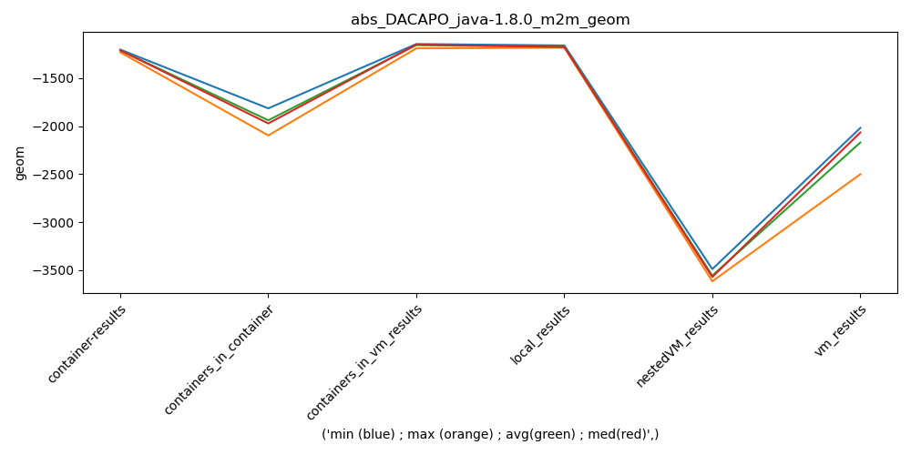
geomMean of all keys (benchmark meassured relativre accuracy)
{'MIN': [1202.0, 1814.0, 1145.0, 1160.0, 2018.0], 'MAX': [1230.0, 2096.0, 1189.0, 1182.0, 2102.0], 'AVG': [1212.142857142857, 1933.7142857142858, 1156.4285714285713, 1174.142857142857, 2048.285714285714], 'MED': [1209.0, 1937.0, 1150.0, 1175.0, 2036.0]}
DACAPO java-1.8.0 geomMean where all runs of one jdk were made MEDIAN before processing
MIN -1202.0 container-results
MIN -1814.0 containers_in_container
MIN -1145.0 containers_in_vm_results
MIN -1160.0 local_results
MIN -2018.0 vm_results
MAX -1230.0 container-results
MAX -2096.0 containers_in_container
MAX -1189.0 containers_in_vm_results
MAX -1182.0 local_results
MAX -2102.0 vm_results
AVG -1212.142857142857 container-results
AVG -1933.7142857142858 containers_in_container
AVG -1156.4285714285713 containers_in_vm_results
AVG -1174.142857142857 local_results
AVG -2048.285714285714 vm_results
MED -1209.0 container-results
MED -1937.0 containers_in_container
MED -1150.0 containers_in_vm_results
MED -1175.0 local_results
MED -2036.0 vm_results
geomMean of all metrics from geomMean of all keys
{'MIN': [1188.6979831396607, 1813.9999999999993, 1104.1968894223428, 1150.325982949341, 2001.5219421855506], 'MAX': [1244.54679396356, 2051.3906439724838, 1251.264070730587, 1197.3193763395182, 2119.6733791342162], 'AVG': [1210.8601598850476, 1921.785521780482, 1160.443875197425, 1174.3904631370017, 2050.3390903976106], 'MED': [1208.666574721094, 1924.976981295558, 1153.5507644311176, 1174.733272790336, 2042.9936311983963]}
DACAPO java-1.8.0 geomMean geomMean
MIN -1188.6979831396607 container-results
MIN -1813.9999999999993 containers_in_container
MIN -1104.1968894223428 containers_in_vm_results
MIN -1150.325982949341 local_results
MIN -2001.5219421855506 vm_results
MAX -1244.54679396356 container-results
MAX -2051.3906439724838 containers_in_container
MAX -1251.264070730587 containers_in_vm_results
MAX -1197.3193763395182 local_results
MAX -2119.6733791342162 vm_results
AVG -1210.8601598850476 container-results
AVG -1921.785521780482 containers_in_container
AVG -1160.443875197425 containers_in_vm_results
AVG -1174.3904631370017 local_results
AVG -2050.3390903976106 vm_results
MED -1208.666574721094 container-results
MED -1924.976981295558 containers_in_container
MED -1153.5507644311176 containers_in_vm_results
MED -1174.733272790336 local_results
MED -2042.9936311983963 vm_results
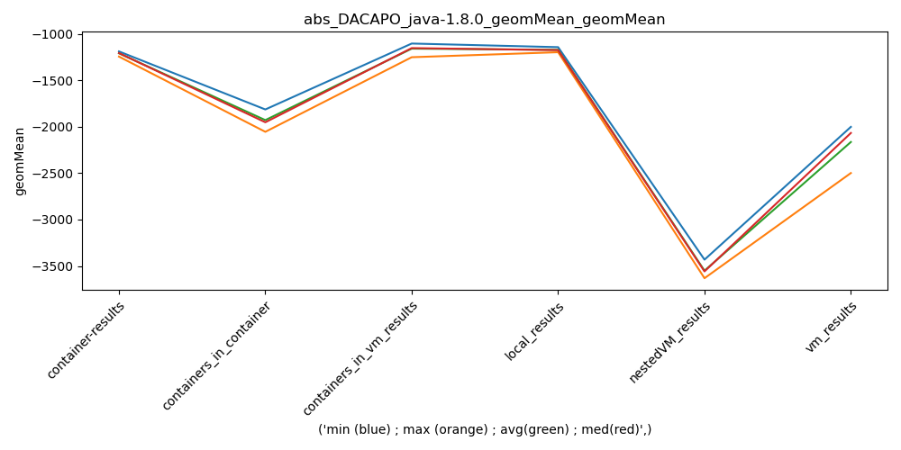
java-11
all runs of one jdk are treated as INDIVIDUAL items
geom
DACAPO java-11 geom where all runs of one jdk are treated as INDIVIDUAL items
MIN -1189.0 container-results
MIN -1880.0 containers_in_container
MIN -1094.0 containers_in_vm_results
MIN -1178.0 local_results
MIN -2081.0 vm_results
MAX -1322.0 container-results
MAX -2099.0 containers_in_container
MAX -1386.0 containers_in_vm_results
MAX -1332.0 local_results
MAX -2270.0 vm_results
AVG -1243.8529411764705 container-results
AVG -1961.1333333333334 containers_in_container
AVG -1194.6363636363637 containers_in_vm_results
AVG -1224.5625 local_results
AVG -2158.28 vm_results
MED -1250.0 container-results
MED -1967.0 containers_in_container
MED -1191.0 containers_in_vm_results
MED -1218.0 local_results
MED -2160.0 vm_results
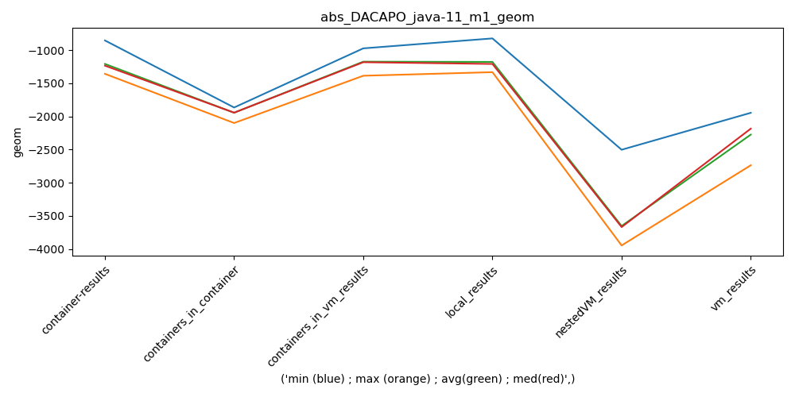
geomMean of all keys (benchmark meassured relativre accuracy)
{'MIN': [1189.0, 1880.0, 1094.0, 1178.0, 2081.0], 'MAX': [1322.0, 2099.0, 1386.0, 1332.0, 2270.0], 'AVG': [1243.8529411764705, 1961.1333333333334, 1194.6363636363637, 1224.5625, 2158.28], 'MED': [1250.0, 1967.0, 1191.0, 1218.0, 2160.0]}
DACAPO java-11 geomMean where all runs of one jdk are treated as INDIVIDUAL items
MIN -1189.0 container-results
MIN -1880.0 containers_in_container
MIN -1094.0 containers_in_vm_results
MIN -1178.0 local_results
MIN -2081.0 vm_results
MAX -1322.0 container-results
MAX -2099.0 containers_in_container
MAX -1386.0 containers_in_vm_results
MAX -1332.0 local_results
MAX -2270.0 vm_results
AVG -1243.8529411764705 container-results
AVG -1961.1333333333334 containers_in_container
AVG -1194.6363636363637 containers_in_vm_results
AVG -1224.5625 local_results
AVG -2158.28 vm_results
MED -1250.0 container-results
MED -1967.0 containers_in_container
MED -1191.0 containers_in_vm_results
MED -1218.0 local_results
MED -2160.0 vm_results
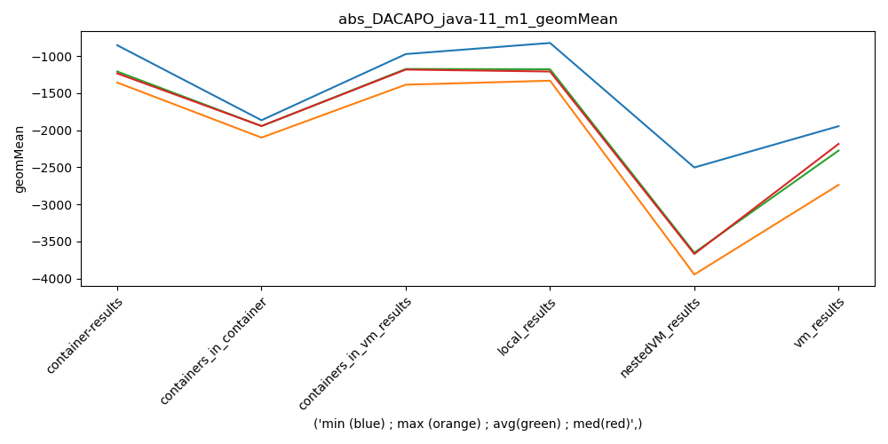
all runs of one jdk were made AVARAGE before processing
geom
DACAPO java-11 geom where all runs of one jdk were made AVARAGE before processing
MIN -1236.4 container-results
MIN -1909.0 containers_in_container
MIN -1164.5 containers_in_vm_results
MIN -1210.2 local_results
MIN -2144.6 vm_results
MAX -1252.6 container-results
MAX -2024.6666666666667 containers_in_container
MAX -1215.0 containers_in_vm_results
MAX -1240.4 local_results
MAX -2180.8 vm_results
AVG -1243.6642857142856 container-results
AVG -1954.2619047619046 containers_in_container
AVG -1193.297619047619 containers_in_vm_results
AVG -1225.542857142857 local_results
AVG -2158.538888888889 vm_results
MED -1240.2 container-results
MED -1952.5 containers_in_container
MED -1195.6666666666667 containers_in_vm_results
MED -1224.8 local_results
MED -2158.2 vm_results
geomMean of all keys (benchmark meassured relativre accuracy)
{'MIN': [1236.4, 1909.0, 1164.5, 1210.2, 2144.6], 'MAX': [1252.6, 2024.6666666666667, 1215.0, 1240.4, 2180.8], 'AVG': [1243.6642857142856, 1954.2619047619046, 1193.297619047619, 1225.542857142857, 2158.538888888889], 'MED': [1240.2, 1952.5, 1195.6666666666667, 1224.8, 2158.2]}
DACAPO java-11 geomMean where all runs of one jdk were made AVARAGE before processing
MIN -1236.4 container-results
MIN -1909.0 containers_in_container
MIN -1164.5 containers_in_vm_results
MIN -1210.2 local_results
MIN -2144.6 vm_results
MAX -1252.6 container-results
MAX -2024.6666666666667 containers_in_container
MAX -1215.0 containers_in_vm_results
MAX -1240.4 local_results
MAX -2180.8 vm_results
AVG -1243.6642857142856 container-results
AVG -1954.2619047619046 containers_in_container
AVG -1193.297619047619 containers_in_vm_results
AVG -1225.542857142857 local_results
AVG -2158.538888888889 vm_results
MED -1240.2 container-results
MED -1952.5 containers_in_container
MED -1195.6666666666667 containers_in_vm_results
MED -1224.8 local_results
MED -2158.2 vm_results
all runs of one jdk were made MEDIAN before processing
geom
DACAPO java-11 geom where all runs of one jdk were made MEDIAN before processing
MIN -1239.0 container-results
MIN -1909.0 containers_in_container
MIN -1177.0 containers_in_vm_results
MIN -1208.0 local_results
MIN -2112.0 vm_results
MAX -1261.0 container-results
MAX -2009.0 containers_in_container
MAX -1247.0 containers_in_vm_results
MAX -1259.0 local_results
MAX -2193.0 vm_results
AVG -1249.7142857142858 container-results
AVG -1967.142857142857 containers_in_container
AVG -1203.7142857142858 containers_in_vm_results
AVG -1225.5714285714287 local_results
AVG -2158.8333333333335 vm_results
MED -1252.0 container-results
MED -1979.0 containers_in_container
MED -1201.0 containers_in_vm_results
MED -1223.0 local_results
MED -2160.0 vm_results

geomMean of all keys (benchmark meassured relativre accuracy)
{'MIN': [1239.0, 1909.0, 1177.0, 1208.0, 2112.0], 'MAX': [1261.0, 2009.0, 1247.0, 1259.0, 2193.0], 'AVG': [1249.7142857142858, 1967.142857142857, 1203.7142857142858, 1225.5714285714287, 2158.8333333333335], 'MED': [1252.0, 1979.0, 1201.0, 1223.0, 2160.0]}
DACAPO java-11 geomMean where all runs of one jdk were made MEDIAN before processing
MIN -1239.0 container-results
MIN -1909.0 containers_in_container
MIN -1177.0 containers_in_vm_results
MIN -1208.0 local_results
MIN -2112.0 vm_results
MAX -1261.0 container-results
MAX -2009.0 containers_in_container
MAX -1247.0 containers_in_vm_results
MAX -1259.0 local_results
MAX -2193.0 vm_results
AVG -1249.7142857142858 container-results
AVG -1967.142857142857 containers_in_container
AVG -1203.7142857142858 containers_in_vm_results
AVG -1225.5714285714287 local_results
AVG -2158.8333333333335 vm_results
MED -1252.0 container-results
MED -1979.0 containers_in_container
MED -1201.0 containers_in_vm_results
MED -1223.0 local_results
MED -2160.0 vm_results
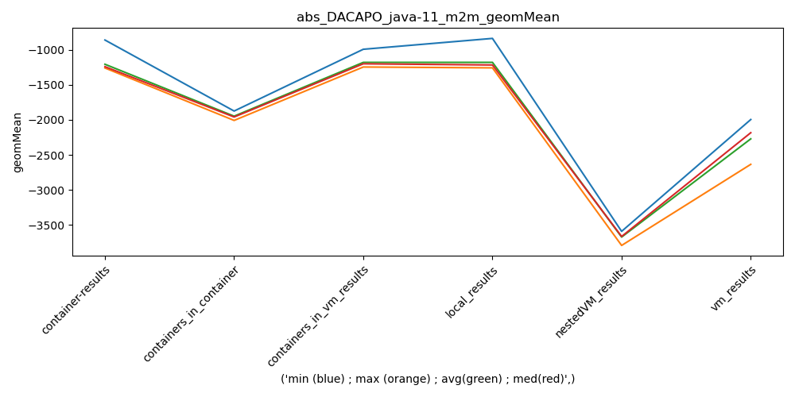
geomMean of all metrics from geomMean of all keys
{'MIN': [1221.24852575141, 1899.2839665701783, 1144.5754484565732, 1198.6428278707215, 2112.3737659205144], 'MAX': [1278.1632202471899, 2043.8481961237792, 1280.5660602599328, 1276.5286629916654, 2214.250624246265], 'AVG': [1245.740674835849, 1960.8389688313932, 1197.2071622702952, 1225.2255054491995, 2158.550728904191], 'MED': [1247.3893246285393, 1966.136801388146, 1195.881911501588, 1221.9299443839632, 2159.399833256129]}
DACAPO java-11 geomMean geomMean
MIN -1221.24852575141 container-results
MIN -1899.2839665701783 containers_in_container
MIN -1144.5754484565732 containers_in_vm_results
MIN -1198.6428278707215 local_results
MIN -2112.3737659205144 vm_results
MAX -1278.1632202471899 container-results
MAX -2043.8481961237792 containers_in_container
MAX -1280.5660602599328 containers_in_vm_results
MAX -1276.5286629916654 local_results
MAX -2214.250624246265 vm_results
AVG -1245.740674835849 container-results
AVG -1960.8389688313932 containers_in_container
AVG -1197.2071622702952 containers_in_vm_results
AVG -1225.2255054491995 local_results
AVG -2158.550728904191 vm_results
MED -1247.3893246285393 container-results
MED -1966.136801388146 containers_in_container
MED -1195.881911501588 containers_in_vm_results
MED -1221.9299443839632 local_results
MED -2159.399833256129 vm_results
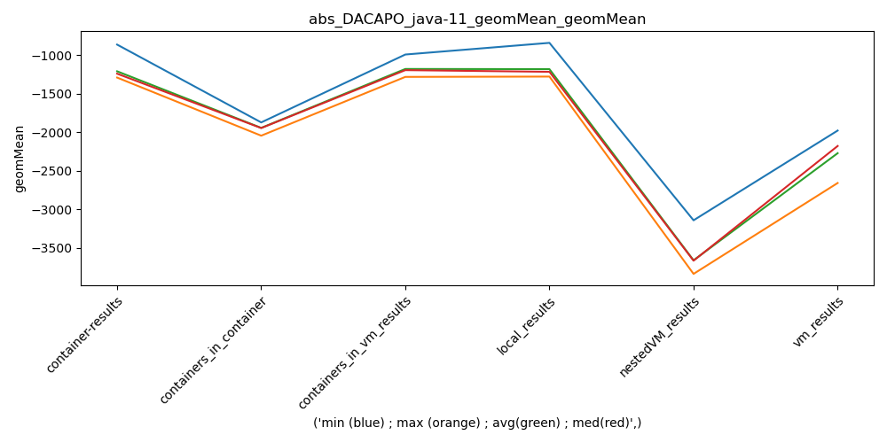
java-17
all runs of one jdk are treated as INDIVIDUAL items
geom
DACAPO java-17 geom where all runs of one jdk are treated as INDIVIDUAL items
MIN -1202.0 container-results
MIN -1881.0 containers_in_container
MIN -1009.0 containers_in_vm_results
MIN -1177.0 local_results
MIN -2096.0 vm_results
MAX -1338.0 container-results
MAX -2142.0 containers_in_container
MAX -1244.0 containers_in_vm_results
MAX -1284.0 local_results
MAX -2197.0 vm_results
AVG -1270.72 container-results
AVG -2017.2222222222222 containers_in_container
AVG -1063.1764705882354 containers_in_vm_results
AVG -1231.6 local_results
AVG -2146.44 vm_results
MED -1273.0 container-results
MED -2033.0 containers_in_container
MED -1049.0 containers_in_vm_results
MED -1236.0 local_results
MED -2145.0 vm_results
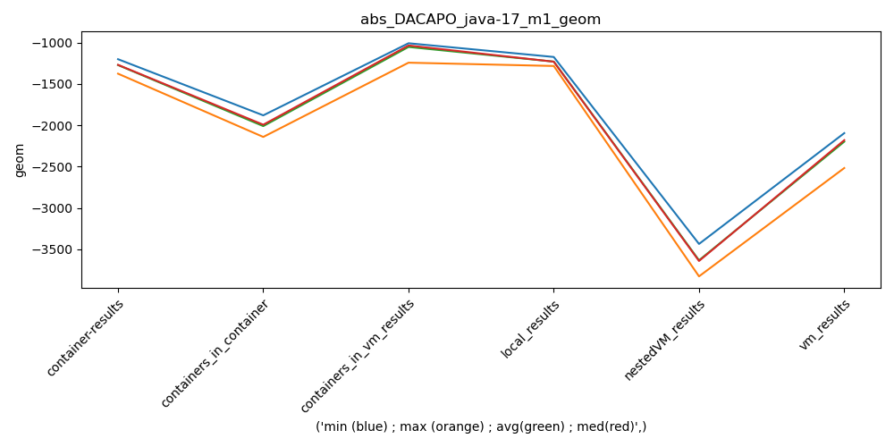
geomMean of all keys (benchmark meassured relativre accuracy)
{'MIN': [1202.0, 1881.0, 1009.0, 1177.0, 2096.0], 'MAX': [1338.0, 2142.0, 1244.0, 1284.0, 2197.0], 'AVG': [1270.72, 2017.2222222222222, 1063.1764705882354, 1231.6, 2146.44], 'MED': [1273.0, 2033.0, 1049.0, 1236.0, 2145.0]}
DACAPO java-17 geomMean where all runs of one jdk are treated as INDIVIDUAL items
MIN -1202.0 container-results
MIN -1881.0 containers_in_container
MIN -1009.0 containers_in_vm_results
MIN -1177.0 local_results
MIN -2096.0 vm_results
MAX -1338.0 container-results
MAX -2142.0 containers_in_container
MAX -1244.0 containers_in_vm_results
MAX -1284.0 local_results
MAX -2197.0 vm_results
AVG -1270.72 container-results
AVG -2017.2222222222222 containers_in_container
AVG -1063.1764705882354 containers_in_vm_results
AVG -1231.6 local_results
AVG -2146.44 vm_results
MED -1273.0 container-results
MED -2033.0 containers_in_container
MED -1049.0 containers_in_vm_results
MED -1236.0 local_results
MED -2145.0 vm_results
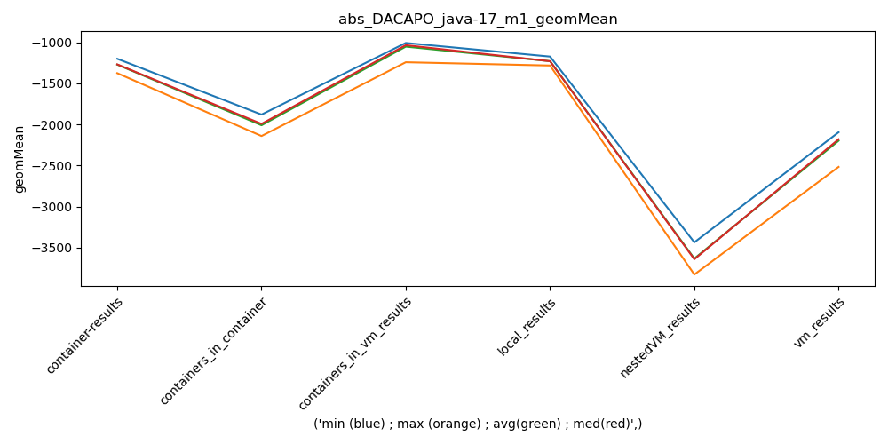
all runs of one jdk were made AVARAGE before processing
geom
DACAPO java-17 geom where all runs of one jdk were made AVARAGE before processing
MIN -1251.6 container-results
MIN -1918.5 containers_in_container
MIN -1026.25 containers_in_vm_results
MIN -1222.4 local_results
MIN -2131.4 vm_results
MAX -1293.2 container-results
MAX -2095.5 containers_in_container
MAX -1131.0 containers_in_vm_results
MAX -1237.2 local_results
MAX -2159.2 vm_results
AVG -1270.7199999999998 container-results
AVG -2011.6 containers_in_container
AVG -1070.2 containers_in_vm_results
AVG -1231.6000000000001 local_results
AVG -2146.44 vm_results
MED -1275.8 container-results
MED -2016.0 containers_in_container
MED -1068.0 containers_in_vm_results
MED -1235.6 local_results
MED -2146.6 vm_results

geomMean of all keys (benchmark meassured relativre accuracy)
{'MIN': [1251.6, 1918.5, 1026.25, 1222.4, 2131.4], 'MAX': [1293.2, 2095.5, 1131.0, 1237.2, 2159.2], 'AVG': [1270.7199999999998, 2011.6, 1070.2, 1231.6000000000001, 2146.44], 'MED': [1275.8, 2016.0, 1068.0, 1235.6, 2146.6]}
DACAPO java-17 geomMean where all runs of one jdk were made AVARAGE before processing
MIN -1251.6 container-results
MIN -1918.5 containers_in_container
MIN -1026.25 containers_in_vm_results
MIN -1222.4 local_results
MIN -2131.4 vm_results
MAX -1293.2 container-results
MAX -2095.5 containers_in_container
MAX -1131.0 containers_in_vm_results
MAX -1237.2 local_results
MAX -2159.2 vm_results
AVG -1270.7199999999998 container-results
AVG -2011.6 containers_in_container
AVG -1070.2 containers_in_vm_results
AVG -1231.6000000000001 local_results
AVG -2146.44 vm_results
MED -1275.8 container-results
MED -2016.0 containers_in_container
MED -1068.0 containers_in_vm_results
MED -1235.6 local_results
MED -2146.6 vm_results
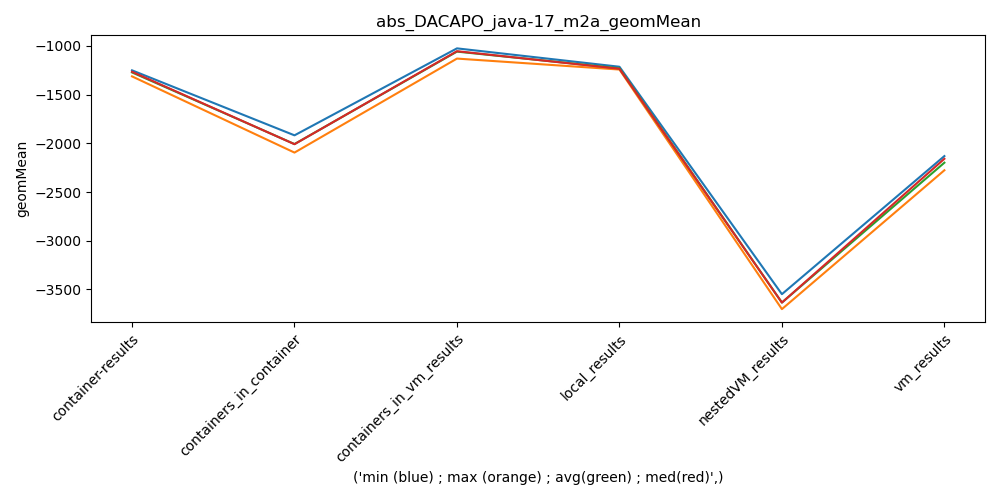
all runs of one jdk were made MEDIAN before processing
geom
DACAPO java-17 geom where all runs of one jdk were made MEDIAN before processing
MIN -1251.0 container-results
MIN -1956.0 containers_in_container
MIN -1024.0 containers_in_vm_results
MIN -1215.0 local_results
MIN -2129.0 vm_results
MAX -1292.0 container-results
MAX -2142.0 containers_in_container
MAX -1244.0 containers_in_vm_results
MAX -1253.0 local_results
MAX -2167.0 vm_results
AVG -1275.6 container-results
AVG -2039.6 containers_in_container
AVG -1088.8 containers_in_vm_results
AVG -1234.5 local_results
AVG -2145.2 vm_results
MED -1281.0 container-results
MED -2038.0 containers_in_container
MED -1067.0 containers_in_vm_results
MED -1236.0 local_results
MED -2145.0 vm_results
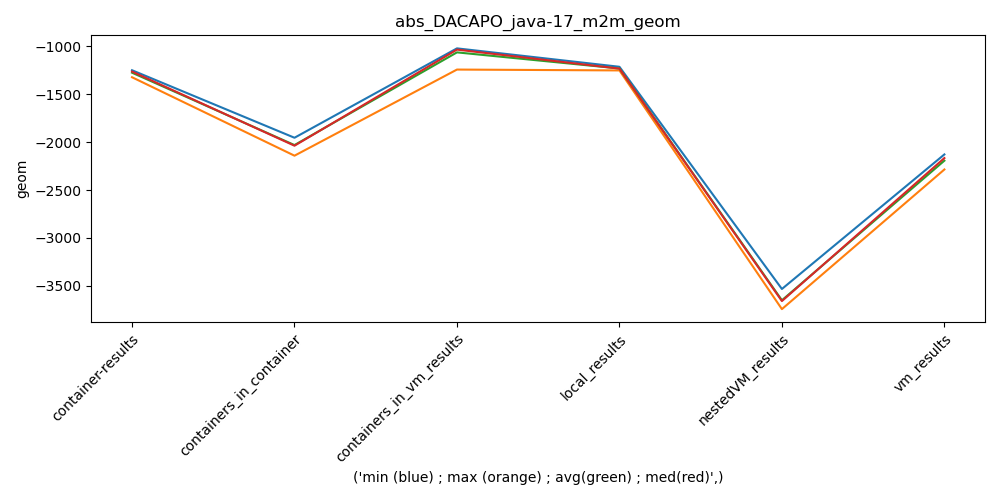
geomMean of all keys (benchmark meassured relativre accuracy)
{'MIN': [1251.0, 1956.0, 1024.0, 1215.0, 2129.0], 'MAX': [1292.0, 2142.0, 1244.0, 1253.0, 2167.0], 'AVG': [1275.6, 2039.6, 1088.8, 1234.5, 2145.2], 'MED': [1281.0, 2038.0, 1067.0, 1236.0, 2145.0]}
DACAPO java-17 geomMean where all runs of one jdk were made MEDIAN before processing
MIN -1251.0 container-results
MIN -1956.0 containers_in_container
MIN -1024.0 containers_in_vm_results
MIN -1215.0 local_results
MIN -2129.0 vm_results
MAX -1292.0 container-results
MAX -2142.0 containers_in_container
MAX -1244.0 containers_in_vm_results
MAX -1253.0 local_results
MAX -2167.0 vm_results
AVG -1275.6 container-results
AVG -2039.6 containers_in_container
AVG -1088.8 containers_in_vm_results
AVG -1234.5 local_results
AVG -2145.2 vm_results
MED -1281.0 container-results
MED -2038.0 containers_in_container
MED -1067.0 containers_in_vm_results
MED -1236.0 local_results
MED -2145.0 vm_results
geomMean of all metrics from geomMean of all keys
{'MIN': [1234.6459722064353, 1918.255637367442, 1019.7211592015811, 1204.6346767645184, 2118.7382174768454], 'MAX': [1307.559441636855, 2126.386465864002, 1205.1315469640856, 1257.9170452569012, 2174.3391215909005], 'AVG': [1272.3445887789653, 2022.7713387274543, 1074.004592581929, 1232.5659089336593, 2146.0265870467847], 'MED': [1276.5956994806209, 2028.97811202682, 1061.297285521718, 1235.8666522807644, 2145.5332007801253]}
DACAPO java-17 geomMean geomMean
MIN -1234.6459722064353 container-results
MIN -1918.255637367442 containers_in_container
MIN -1019.7211592015811 containers_in_vm_results
MIN -1204.6346767645184 local_results
MIN -2118.7382174768454 vm_results
MAX -1307.559441636855 container-results
MAX -2126.386465864002 containers_in_container
MAX -1205.1315469640856 containers_in_vm_results
MAX -1257.9170452569012 local_results
MAX -2174.3391215909005 vm_results
AVG -1272.3445887789653 container-results
AVG -2022.7713387274543 containers_in_container
AVG -1074.004592581929 containers_in_vm_results
AVG -1232.5659089336593 local_results
AVG -2146.0265870467847 vm_results
MED -1276.5956994806209 container-results
MED -2028.97811202682 containers_in_container
MED -1061.297285521718 containers_in_vm_results
MED -1235.8666522807644 local_results
MED -2145.5332007801253 vm_results
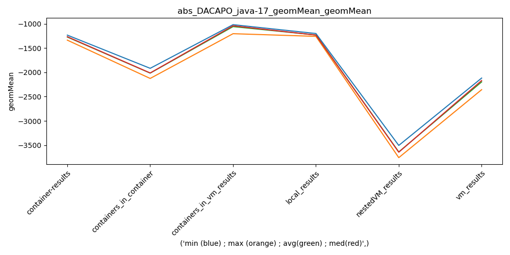
geomMean of all benchamrks from geomMean of all metrics and all keys
{'MIN': [205.7569461878956, 285.1237648798787, 189.4711513016474, 201.87917455721595, 307.64658973451026], 'MAX': [213.55746005542085, 307.2803589464506, 209.62658249854087, 209.39829728744667, 317.83794955285373], 'AVG': [209.30596021946076, 295.4768152934322, 196.53952240290005, 205.21527034293032, 312.18049317910334], 'MED': [209.45487746905565, 296.02552412133684, 195.60975783698777, 205.22926878177034, 311.9132536143436]}
DACAPO geomMean geomMean geomMean
MIN -205.7569461878956 container-results
MIN -285.1237648798787 containers_in_container
MIN -189.4711513016474 containers_in_vm_results
MIN -201.87917455721595 local_results
MIN -307.64658973451026 vm_results
MAX -213.55746005542085 container-results
MAX -307.2803589464506 containers_in_container
MAX -209.62658249854087 containers_in_vm_results
MAX -209.39829728744667 local_results
MAX -317.83794955285373 vm_results
AVG -209.30596021946076 container-results
AVG -295.4768152934322 containers_in_container
AVG -196.53952240290005 containers_in_vm_results
AVG -205.21527034293032 local_results
AVG -312.18049317910334 vm_results
MED -209.45487746905565 container-results
MED -296.02552412133684 containers_in_container
MED -195.60975783698777 containers_in_vm_results
MED -205.22926878177034 local_results
MED -311.9132536143436 vm_results
J2DBENCH
java-1.8.0
all runs of one jdk are treated as INDIVIDUAL items
j2dbench.geom
J2DBENCH java-1.8.0 j2dbench.geom where all runs of one jdk are treated as INDIVIDUAL items
MIN 146406.0 container-results
MIN 141906.0 containers_in_container
MIN 93535.0 containers_in_vm_results
MIN 134580.0 local_results
MIN 131593.0 vm_results
MAX 146895.0 container-results
MAX 142535.0 containers_in_container
MAX 96883.0 containers_in_vm_results
MAX 138452.0 local_results
MAX 134147.0 vm_results
AVG 146655.57142857142 container-results
AVG 142135.6 containers_in_container
AVG 95208.1875 containers_in_vm_results
AVG 137136.11428571428 local_results
AVG 133037.42857142858 vm_results
MED 146645.0 container-results
MED 142121.0 containers_in_container
MED 95443.0 containers_in_vm_results
MED 137755.0 local_results
MED 133439.0 vm_results
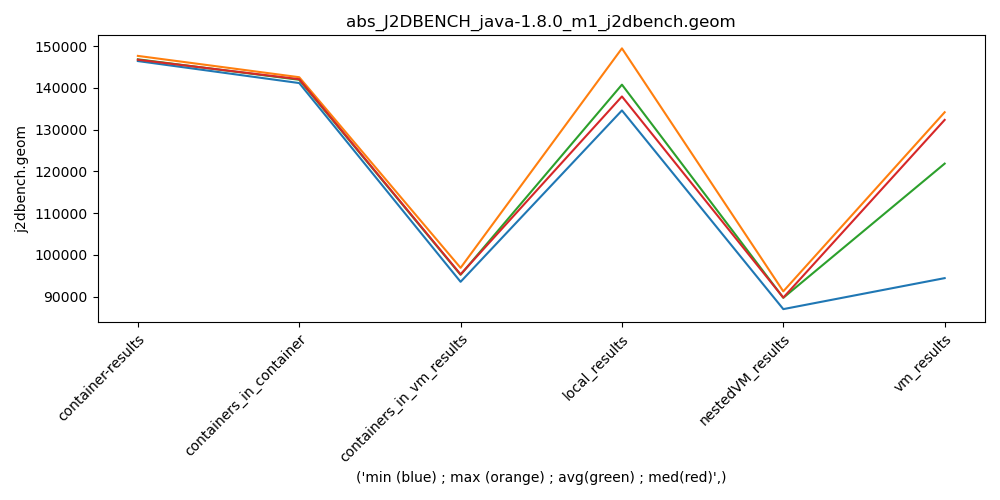
geomMean of all keys (benchmark meassured relativre accuracy)
{'MIN': [146406.0, 141906.0, 93535.0, 134580.0, 131593.0], 'MAX': [146895.0, 142535.0, 96883.0, 138452.0, 134147.0], 'AVG': [146655.57142857142, 142135.6, 95208.1875, 137136.11428571428, 133037.42857142858], 'MED': [146645.0, 142121.0, 95443.0, 137755.0, 133439.0]}
J2DBENCH java-1.8.0 geomMean where all runs of one jdk are treated as INDIVIDUAL items
MIN 146406.0 container-results
MIN 141906.0 containers_in_container
MIN 93535.0 containers_in_vm_results
MIN 134580.0 local_results
MIN 131593.0 vm_results
MAX 146895.0 container-results
MAX 142535.0 containers_in_container
MAX 96883.0 containers_in_vm_results
MAX 138452.0 local_results
MAX 134147.0 vm_results
AVG 146655.57142857142 container-results
AVG 142135.6 containers_in_container
AVG 95208.1875 containers_in_vm_results
AVG 137136.11428571428 local_results
AVG 133037.42857142858 vm_results
MED 146645.0 container-results
MED 142121.0 containers_in_container
MED 95443.0 containers_in_vm_results
MED 137755.0 local_results
MED 133439.0 vm_results
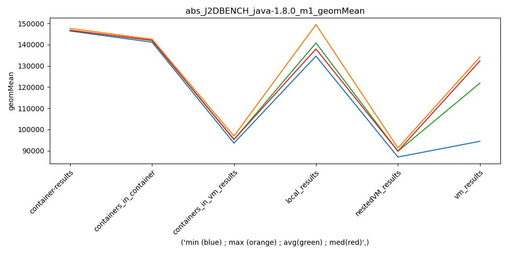
all runs of one jdk were made AVARAGE before processing
j2dbench.geom
J2DBENCH java-1.8.0 j2dbench.geom where all runs of one jdk were made AVARAGE before processing
MIN 146591.4 container-results
MIN 142037.4 containers_in_container
MIN 94757.0 containers_in_vm_results
MIN 136486.8 local_results
MIN 132602.4 vm_results
MAX 146767.8 container-results
MAX 142234.0 containers_in_container
MAX 95625.4 containers_in_vm_results
MAX 137734.2 local_results
MAX 133477.8 vm_results
AVG 146655.57142857142 container-results
AVG 142135.6 containers_in_container
AVG 95210.72380952381 containers_in_vm_results
AVG 137136.11428571425 local_results
AVG 133037.42857142858 vm_results
MED 146633.2 container-results
MED 142102.6 containers_in_container
MED 95122.2 containers_in_vm_results
MED 137194.2 local_results
MED 133138.6 vm_results

geomMean of all keys (benchmark meassured relativre accuracy)
{'MIN': [146591.4, 142037.4, 94757.0, 136486.8, 132602.4], 'MAX': [146767.8, 142234.0, 95625.4, 137734.2, 133477.8], 'AVG': [146655.57142857142, 142135.6, 95210.72380952381, 137136.11428571425, 133037.42857142858], 'MED': [146633.2, 142102.6, 95122.2, 137194.2, 133138.6]}
J2DBENCH java-1.8.0 geomMean where all runs of one jdk were made AVARAGE before processing
MIN 146591.4 container-results
MIN 142037.4 containers_in_container
MIN 94757.0 containers_in_vm_results
MIN 136486.8 local_results
MIN 132602.4 vm_results
MAX 146767.8 container-results
MAX 142234.0 containers_in_container
MAX 95625.4 containers_in_vm_results
MAX 137734.2 local_results
MAX 133477.8 vm_results
AVG 146655.57142857142 container-results
AVG 142135.6 containers_in_container
AVG 95210.72380952381 containers_in_vm_results
AVG 137136.11428571425 local_results
AVG 133037.42857142858 vm_results
MED 146633.2 container-results
MED 142102.6 containers_in_container
MED 95122.2 containers_in_vm_results
MED 137194.2 local_results
MED 133138.6 vm_results
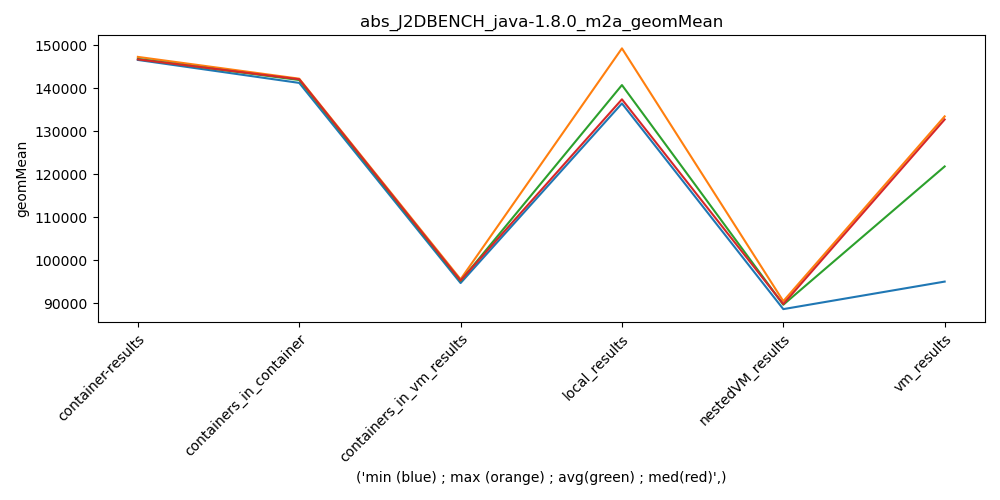
all runs of one jdk were made MEDIAN before processing
j2dbench.geom
J2DBENCH java-1.8.0 j2dbench.geom where all runs of one jdk were made MEDIAN before processing
MIN 146552.0 container-results
MIN 142024.0 containers_in_container
MIN 94445.0 containers_in_vm_results
MIN 136016.0 local_results
MIN 132314.0 vm_results
MAX 146740.0 container-results
MAX 142287.0 containers_in_container
MAX 95815.0 containers_in_vm_results
MAX 138058.0 local_results
MAX 133717.0 vm_results
AVG 146644.14285714287 container-results
AVG 142125.57142857142 containers_in_container
AVG 95369.42857142857 containers_in_vm_results
AVG 137307.85714285713 local_results
AVG 133286.2857142857 vm_results
MED 146650.0 container-results
MED 142120.0 containers_in_container
MED 95443.0 containers_in_vm_results
MED 137755.0 local_results
MED 133539.0 vm_results
geomMean of all keys (benchmark meassured relativre accuracy)
{'MIN': [146552.0, 142024.0, 94445.0, 136016.0, 132314.0], 'MAX': [146740.0, 142287.0, 95815.0, 138058.0, 133717.0], 'AVG': [146644.14285714287, 142125.57142857142, 95369.42857142857, 137307.85714285713, 133286.2857142857], 'MED': [146650.0, 142120.0, 95443.0, 137755.0, 133539.0]}
J2DBENCH java-1.8.0 geomMean where all runs of one jdk were made MEDIAN before processing
MIN 146552.0 container-results
MIN 142024.0 containers_in_container
MIN 94445.0 containers_in_vm_results
MIN 136016.0 local_results
MIN 132314.0 vm_results
MAX 146740.0 container-results
MAX 142287.0 containers_in_container
MAX 95815.0 containers_in_vm_results
MAX 138058.0 local_results
MAX 133717.0 vm_results
AVG 146644.14285714287 container-results
AVG 142125.57142857142 containers_in_container
AVG 95369.42857142857 containers_in_vm_results
AVG 137307.85714285713 local_results
AVG 133286.2857142857 vm_results
MED 146650.0 container-results
MED 142120.0 containers_in_container
MED 95443.0 containers_in_vm_results
MED 137755.0 local_results
MED 133539.0 vm_results
geomMean of all metrics from geomMean of all keys
{'MIN': [146516.4449574747, 141989.12105718462, 94244.23814463214, 135691.8378798464, 132169.11756736992], 'MAX': [146800.91782861715, 142351.93956494966, 96106.2095754268, 138081.0881106208, 133780.31361472487], 'AVG': [146651.76180580136, 142132.257064234, 95262.75011699332, 137193.33802329467, 133120.3292830456], 'MED': [146642.733164182, 142114.5330822299, 95335.94663546466, 137567.81242313277, 133372.09141597495]}
J2DBENCH java-1.8.0 geomMean geomMean
MIN 146516.4449574747 container-results
MIN 141989.12105718462 containers_in_container
MIN 94244.23814463214 containers_in_vm_results
MIN 135691.8378798464 local_results
MIN 132169.11756736992 vm_results
MAX 146800.91782861715 container-results
MAX 142351.93956494966 containers_in_container
MAX 96106.2095754268 containers_in_vm_results
MAX 138081.0881106208 local_results
MAX 133780.31361472487 vm_results
AVG 146651.76180580136 container-results
AVG 142132.257064234 containers_in_container
AVG 95262.75011699332 containers_in_vm_results
AVG 137193.33802329467 local_results
AVG 133120.3292830456 vm_results
MED 146642.733164182 container-results
MED 142114.5330822299 containers_in_container
MED 95335.94663546466 containers_in_vm_results
MED 137567.81242313277 local_results
MED 133372.09141597495 vm_results
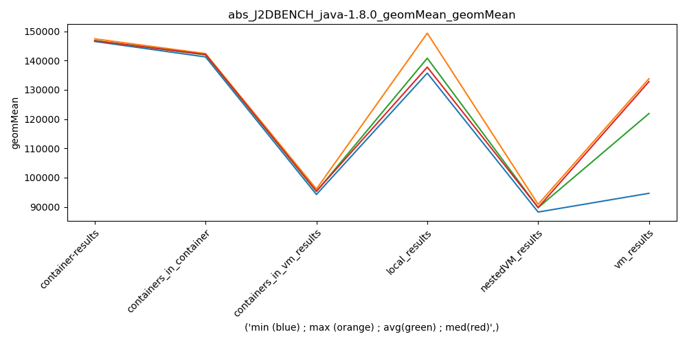
java-11
all runs of one jdk are treated as INDIVIDUAL items
j2dbench.geom
J2DBENCH java-11 j2dbench.geom where all runs of one jdk are treated as INDIVIDUAL items
MIN 143502.0 container-results
MIN 138811.0 containers_in_container
MIN 101050.0 containers_in_vm_results
MIN 147478.0 local_results
MIN 145802.0 vm_results
MAX 144166.0 container-results
MAX 139902.0 containers_in_container
MAX 104792.0 containers_in_vm_results
MAX 150734.0 local_results
MAX 147284.0 vm_results
AVG 143864.6 container-results
AVG 139458.39393939395 containers_in_container
AVG 103581.05882352941 containers_in_vm_results
AVG 150276.0 local_results
AVG 146823.36 vm_results
MED 143849.0 container-results
MED 139556.0 containers_in_container
MED 103710.0 containers_in_vm_results
MED 150483.0 local_results
MED 146933.0 vm_results

geomMean of all keys (benchmark meassured relativre accuracy)
{'MIN': [143502.0, 138811.0, 101050.0, 147478.0, 145802.0], 'MAX': [144166.0, 139902.0, 104792.0, 150734.0, 147284.0], 'AVG': [143864.6, 139458.39393939395, 103581.05882352941, 150276.0, 146823.36], 'MED': [143849.0, 139556.0, 103710.0, 150483.0, 146933.0]}
J2DBENCH java-11 geomMean where all runs of one jdk are treated as INDIVIDUAL items
MIN 143502.0 container-results
MIN 138811.0 containers_in_container
MIN 101050.0 containers_in_vm_results
MIN 147478.0 local_results
MIN 145802.0 vm_results
MAX 144166.0 container-results
MAX 139902.0 containers_in_container
MAX 104792.0 containers_in_vm_results
MAX 150734.0 local_results
MAX 147284.0 vm_results
AVG 143864.6 container-results
AVG 139458.39393939395 containers_in_container
AVG 103581.05882352941 containers_in_vm_results
AVG 150276.0 local_results
AVG 146823.36 vm_results
MED 143849.0 container-results
MED 139556.0 containers_in_container
MED 103710.0 containers_in_vm_results
MED 150483.0 local_results
MED 146933.0 vm_results

all runs of one jdk were made AVARAGE before processing
j2dbench.geom
J2DBENCH java-11 j2dbench.geom where all runs of one jdk were made AVARAGE before processing
MIN 143705.2 container-results
MIN 139014.0 containers_in_container
MIN 102801.2 containers_in_vm_results
MIN 149416.0 local_results
MIN 146419.4 vm_results
MAX 143998.4 container-results
MAX 139751.2 containers_in_container
MAX 104020.2 containers_in_vm_results
MAX 150637.0 local_results
MAX 147037.8 vm_results
AVG 143864.6 container-results
AVG 139463.85714285713 containers_in_container
AVG 103571.42142857144 containers_in_vm_results
AVG 150276.0 local_results
AVG 146823.36000000002 vm_results
MED 143854.2 container-results
MED 139554.0 containers_in_container
MED 103958.4 containers_in_vm_results
MED 150479.2 local_results
MED 146916.8 vm_results
geomMean of all keys (benchmark meassured relativre accuracy)
{'MIN': [143705.2, 139014.0, 102801.2, 149416.0, 146419.4], 'MAX': [143998.4, 139751.2, 104020.2, 150637.0, 147037.8], 'AVG': [143864.6, 139463.85714285713, 103571.42142857144, 150276.0, 146823.36000000002], 'MED': [143854.2, 139554.0, 103958.4, 150479.2, 146916.8]}
J2DBENCH java-11 geomMean where all runs of one jdk were made AVARAGE before processing
MIN 143705.2 container-results
MIN 139014.0 containers_in_container
MIN 102801.2 containers_in_vm_results
MIN 149416.0 local_results
MIN 146419.4 vm_results
MAX 143998.4 container-results
MAX 139751.2 containers_in_container
MAX 104020.2 containers_in_vm_results
MAX 150637.0 local_results
MAX 147037.8 vm_results
AVG 143864.6 container-results
AVG 139463.85714285713 containers_in_container
AVG 103571.42142857144 containers_in_vm_results
AVG 150276.0 local_results
AVG 146823.36000000002 vm_results
MED 143854.2 container-results
MED 139554.0 containers_in_container
MED 103958.4 containers_in_vm_results
MED 150479.2 local_results
MED 146916.8 vm_results

all runs of one jdk were made MEDIAN before processing
j2dbench.geom
J2DBENCH java-11 j2dbench.geom where all runs of one jdk were made MEDIAN before processing
MIN 143751.0 container-results
MIN 139054.0 containers_in_container
MIN 102797.0 containers_in_vm_results
MIN 149900.0 local_results
MIN 146480.0 vm_results
MAX 144020.0 container-results
MAX 139774.0 containers_in_container
MAX 104241.0 containers_in_vm_results
MAX 150697.0 local_results
MAX 147141.0 vm_results
AVG 143882.57142857142 container-results
AVG 139471.0 containers_in_container
AVG 103624.0 containers_in_vm_results
AVG 150392.0 local_results
AVG 146893.4 vm_results
MED 143869.0 container-results
MED 139556.0 containers_in_container
MED 103800.0 containers_in_vm_results
MED 150483.0 local_results
MED 146955.0 vm_results

geomMean of all keys (benchmark meassured relativre accuracy)
{'MIN': [143751.0, 139054.0, 102797.0, 149900.0, 146480.0], 'MAX': [144020.0, 139774.0, 104241.0, 150697.0, 147141.0], 'AVG': [143882.57142857142, 139471.0, 103624.0, 150392.0, 146893.4], 'MED': [143869.0, 139556.0, 103800.0, 150483.0, 146955.0]}
J2DBENCH java-11 geomMean where all runs of one jdk were made MEDIAN before processing
MIN 143751.0 container-results
MIN 139054.0 containers_in_container
MIN 102797.0 containers_in_vm_results
MIN 149900.0 local_results
MIN 146480.0 vm_results
MAX 144020.0 container-results
MAX 139774.0 containers_in_container
MAX 104241.0 containers_in_vm_results
MAX 150697.0 local_results
MAX 147141.0 vm_results
AVG 143882.57142857142 container-results
AVG 139471.0 containers_in_container
AVG 103624.0 containers_in_vm_results
AVG 150392.0 local_results
AVG 146893.4 vm_results
MED 143869.0 container-results
MED 139556.0 containers_in_container
MED 103800.0 containers_in_vm_results
MED 150483.0 local_results
MED 146955.0 vm_results

geomMean of all metrics from geomMean of all keys
{'MIN': [143652.69256318855, 138959.62593105313, 102212.72831592384, 148927.64635566997, 146233.47884361187], 'MAX': [144061.44743840004, 139809.05091645953, 104350.56243385527, 150689.32803224502, 147154.23204482588], 'AVG': [143870.59022676616, 139464.4169319012, 103592.15756297956, 150314.6567218299, 146846.70295525147], 'MED': [143857.3997504986, 139555.3333301485, 103822.74923347362, 150481.73332267112, 146934.93249938462]}
J2DBENCH java-11 geomMean geomMean
MIN 143652.69256318855 container-results
MIN 138959.62593105313 containers_in_container
MIN 102212.72831592384 containers_in_vm_results
MIN 148927.64635566997 local_results
MIN 146233.47884361187 vm_results
MAX 144061.44743840004 container-results
MAX 139809.05091645953 containers_in_container
MAX 104350.56243385527 containers_in_vm_results
MAX 150689.32803224502 local_results
MAX 147154.23204482588 vm_results
AVG 143870.59022676616 container-results
AVG 139464.4169319012 containers_in_container
AVG 103592.15756297956 containers_in_vm_results
AVG 150314.6567218299 local_results
AVG 146846.70295525147 vm_results
MED 143857.3997504986 container-results
MED 139555.3333301485 containers_in_container
MED 103822.74923347362 containers_in_vm_results
MED 150481.73332267112 local_results
MED 146934.93249938462 vm_results
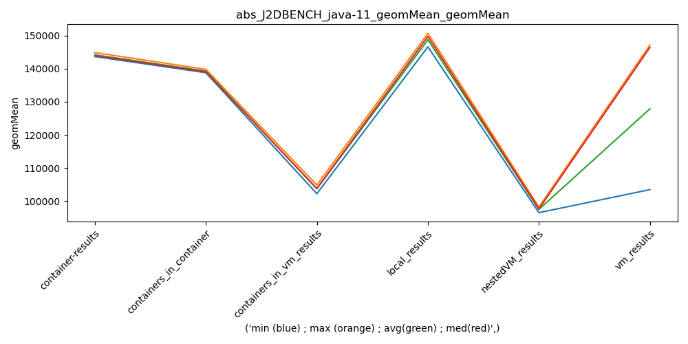
java-17
all runs of one jdk are treated as INDIVIDUAL items
j2dbench.geom
J2DBENCH java-17 j2dbench.geom where all runs of one jdk are treated as INDIVIDUAL items
MIN 139093.0 container-results
MIN 134665.0 containers_in_container
MIN 101558.0 containers_in_vm_results
MIN 145996.0 local_results
MIN 142588.0 vm_results
MAX 139569.0 container-results
MAX 135027.0 containers_in_container
MAX 103962.0 containers_in_vm_results
MAX 147066.0 local_results
MAX 143433.0 vm_results
AVG 139387.32 container-results
AVG 134864.24 containers_in_container
AVG 102908.0 containers_in_vm_results
AVG 146608.36 local_results
AVG 143013.66666666666 vm_results
MED 139408.0 container-results
MED 134854.0 containers_in_container
MED 102789.0 containers_in_vm_results
MED 146637.0 local_results
MED 142993.0 vm_results

geomMean of all keys (benchmark meassured relativre accuracy)
{'MIN': [139093.0, 134665.0, 101558.0, 145996.0, 142588.0], 'MAX': [139569.0, 135027.0, 103962.0, 147066.0, 143433.0], 'AVG': [139387.32, 134864.24, 102908.0, 146608.36, 143013.66666666666], 'MED': [139408.0, 134854.0, 102789.0, 146637.0, 142993.0]}
J2DBENCH java-17 geomMean where all runs of one jdk are treated as INDIVIDUAL items
MIN 139093.0 container-results
MIN 134665.0 containers_in_container
MIN 101558.0 containers_in_vm_results
MIN 145996.0 local_results
MIN 142588.0 vm_results
MAX 139569.0 container-results
MAX 135027.0 containers_in_container
MAX 103962.0 containers_in_vm_results
MAX 147066.0 local_results
MAX 143433.0 vm_results
AVG 139387.32 container-results
AVG 134864.24 containers_in_container
AVG 102908.0 containers_in_vm_results
AVG 146608.36 local_results
AVG 143013.66666666666 vm_results
MED 139408.0 container-results
MED 134854.0 containers_in_container
MED 102789.0 containers_in_vm_results
MED 146637.0 local_results
MED 142993.0 vm_results

all runs of one jdk were made AVARAGE before processing
j2dbench.geom
J2DBENCH java-17 j2dbench.geom where all runs of one jdk were made AVARAGE before processing
MIN 139277.4 container-results
MIN 134820.6 containers_in_container
MIN 102250.2 containers_in_vm_results
MIN 146502.4 local_results
MIN 142898.4 vm_results
MAX 139478.8 container-results
MAX 134901.2 containers_in_container
MAX 103237.4 containers_in_vm_results
MAX 146701.6 local_results
MAX 143096.4 vm_results
AVG 139387.32 container-results
AVG 134864.24 containers_in_container
AVG 102908.0 containers_in_vm_results
AVG 146608.36 local_results
AVG 143013.82 vm_results
MED 139419.0 container-results
MED 134879.2 containers_in_container
MED 102990.0 containers_in_vm_results
MED 146627.2 local_results
MED 143017.5 vm_results
geomMean of all keys (benchmark meassured relativre accuracy)
{'MIN': [139277.4, 134820.6, 102250.2, 146502.4, 142898.4], 'MAX': [139478.8, 134901.2, 103237.4, 146701.6, 143096.4], 'AVG': [139387.32, 134864.24, 102908.0, 146608.36, 143013.82], 'MED': [139419.0, 134879.2, 102990.0, 146627.2, 143017.5]}
J2DBENCH java-17 geomMean where all runs of one jdk were made AVARAGE before processing
MIN 139277.4 container-results
MIN 134820.6 containers_in_container
MIN 102250.2 containers_in_vm_results
MIN 146502.4 local_results
MIN 142898.4 vm_results
MAX 139478.8 container-results
MAX 134901.2 containers_in_container
MAX 103237.4 containers_in_vm_results
MAX 146701.6 local_results
MAX 143096.4 vm_results
AVG 139387.32 container-results
AVG 134864.24 containers_in_container
AVG 102908.0 containers_in_vm_results
AVG 146608.36 local_results
AVG 143013.82 vm_results
MED 139419.0 container-results
MED 134879.2 containers_in_container
MED 102990.0 containers_in_vm_results
MED 146627.2 local_results
MED 143017.5 vm_results

all runs of one jdk were made MEDIAN before processing
j2dbench.geom
J2DBENCH java-17 j2dbench.geom where all runs of one jdk were made MEDIAN before processing
MIN 139241.0 container-results
MIN 134825.0 containers_in_container
MIN 102558.0 containers_in_vm_results
MIN 146465.0 local_results
MIN 142863.0 vm_results
MAX 139497.0 container-results
MAX 134917.0 containers_in_container
MAX 103088.0 containers_in_vm_results
MAX 146698.0 local_results
MAX 143219.0 vm_results
AVG 139385.2 container-results
AVG 134871.6 containers_in_container
AVG 102851.8 containers_in_vm_results
AVG 146588.8 local_results
AVG 143023.4 vm_results
MED 139423.0 container-results
MED 134854.0 containers_in_container
MED 102839.0 containers_in_vm_results
MED 146627.0 local_results
MED 143005.0 vm_results
geomMean of all keys (benchmark meassured relativre accuracy)
{'MIN': [139241.0, 134825.0, 102558.0, 146465.0, 142863.0], 'MAX': [139497.0, 134917.0, 103088.0, 146698.0, 143219.0], 'AVG': [139385.2, 134871.6, 102851.8, 146588.8, 143023.4], 'MED': [139423.0, 134854.0, 102839.0, 146627.0, 143005.0]}
J2DBENCH java-17 geomMean where all runs of one jdk were made MEDIAN before processing
MIN 139241.0 container-results
MIN 134825.0 containers_in_container
MIN 102558.0 containers_in_vm_results
MIN 146465.0 local_results
MIN 142863.0 vm_results
MAX 139497.0 container-results
MAX 134917.0 containers_in_container
MAX 103088.0 containers_in_vm_results
MAX 146698.0 local_results
MAX 143219.0 vm_results
AVG 139385.2 container-results
AVG 134871.6 containers_in_container
AVG 102851.8 containers_in_vm_results
AVG 146588.8 local_results
AVG 143023.4 vm_results
MED 139423.0 container-results
MED 134854.0 containers_in_container
MED 102839.0 containers_in_vm_results
MED 146627.0 local_results
MED 143005.0 vm_results

geomMean of all metrics from geomMean of all keys
{'MIN': [139203.77715363886, 134770.1794532292, 102121.20944304099, 146320.95178858616, 142783.06590322076], 'MAX': [139514.92789792392, 134948.38840293227, 103428.43009897013, 146821.7652301103, 143249.3991502031], 'AVG': [139386.61332975054, 134866.6932887057, 102889.26325542267, 146601.83971001947, 143016.96214976185], 'MED': [139416.66652241253, 134862.3994768217, 102872.63119522818, 146630.39992570993, 143005.166316835]}
J2DBENCH java-17 geomMean geomMean
MIN 139203.77715363886 container-results
MIN 134770.1794532292 containers_in_container
MIN 102121.20944304099 containers_in_vm_results
MIN 146320.95178858616 local_results
MIN 142783.06590322076 vm_results
MAX 139514.92789792392 container-results
MAX 134948.38840293227 containers_in_container
MAX 103428.43009897013 containers_in_vm_results
MAX 146821.7652301103 local_results
MAX 143249.3991502031 vm_results
AVG 139386.61332975054 container-results
AVG 134866.6932887057 containers_in_container
AVG 102889.26325542267 containers_in_vm_results
AVG 146601.83971001947 local_results
AVG 143016.96214976185 vm_results
MED 139416.66652241253 container-results
MED 134862.3994768217 containers_in_container
MED 102872.63119522818 containers_in_vm_results
MED 146630.39992570993 local_results
MED 143005.166316835 vm_results

geomMean of all benchamrks from geomMean of all metrics and all keys
{'MIN': [7357.203870930052, 7180.9909344262105, 5600.398551687259, 7374.097780836523, 7247.919753534805], 'MAX': [7370.115704471675, 7198.907523741559, 5675.074197529913, 7434.500321246614, 7287.263002999325], 'AVG': [7364.107066317826, 7190.6010595449925, 5644.883881810946, 7415.124430482299, 7271.500411548652], 'MED': [7364.221823719609, 7191.491199556375, 5648.878894057381, 7422.601735655633, 7275.878474785574]}
J2DBENCH geomMean geomMean geomMean
MIN 7357.203870930052 container-results
MIN 7180.9909344262105 containers_in_container
MIN 5600.398551687259 containers_in_vm_results
MIN 7374.097780836523 local_results
MIN 7247.919753534805 vm_results
MAX 7370.115704471675 container-results
MAX 7198.907523741559 containers_in_container
MAX 5675.074197529913 containers_in_vm_results
MAX 7434.500321246614 local_results
MAX 7287.263002999325 vm_results
AVG 7364.107066317826 container-results
AVG 7190.6010595449925 containers_in_container
AVG 5644.883881810946 containers_in_vm_results
AVG 7415.124430482299 local_results
AVG 7271.500411548652 vm_results
MED 7364.221823719609 container-results
MED 7191.491199556375 containers_in_container
MED 5648.878894057381 containers_in_vm_results
MED 7422.601735655633 local_results
MED 7275.878474785574 vm_results
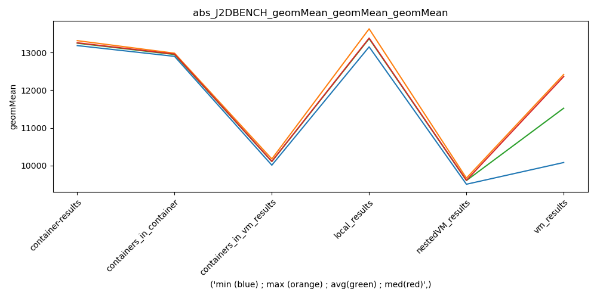
JMH
java-1.8.0
all runs of one jdk are treated as INDIVIDUAL items
geom
JMH java-1.8.0 geom where all runs of one jdk are treated as INDIVIDUAL items
MIN 397.0 container-results
MIN 402.0 containers_in_container
MIN 324.0 containers_in_vm_results
MIN 401.0 local_results
MIN 345.0 vm_results
MAX 439.0 container-results
MAX 439.0 containers_in_container
MAX 357.0 containers_in_vm_results
MAX 455.0 local_results
MAX 372.0 vm_results
AVG 430.2 container-results
AVG 429.9142857142857 containers_in_container
AVG 342.8 containers_in_vm_results
AVG 430.3142857142857 local_results
AVG 366.3142857142857 vm_results
MED 435.0 container-results
MED 434.0 containers_in_container
MED 343.0 containers_in_vm_results
MED 434.0 local_results
MED 370.0 vm_results

geomMean of all keys (benchmark meassured relativre accuracy)
{'MIN': [397.0, 402.0, 324.0, 401.0, 345.0], 'MAX': [439.0, 439.0, 357.0, 455.0, 372.0], 'AVG': [430.2, 429.9142857142857, 342.8, 430.3142857142857, 366.3142857142857], 'MED': [435.0, 434.0, 343.0, 434.0, 370.0]}
JMH java-1.8.0 geomMean where all runs of one jdk are treated as INDIVIDUAL items
MIN 397.0 container-results
MIN 402.0 containers_in_container
MIN 324.0 containers_in_vm_results
MIN 401.0 local_results
MIN 345.0 vm_results
MAX 439.0 container-results
MAX 439.0 containers_in_container
MAX 357.0 containers_in_vm_results
MAX 455.0 local_results
MAX 372.0 vm_results
AVG 430.2 container-results
AVG 429.9142857142857 containers_in_container
AVG 342.8 containers_in_vm_results
AVG 430.3142857142857 local_results
AVG 366.3142857142857 vm_results
MED 435.0 container-results
MED 434.0 containers_in_container
MED 343.0 containers_in_vm_results
MED 434.0 local_results
MED 370.0 vm_results

all runs of one jdk were made AVARAGE before processing
geom
JMH java-1.8.0 geom where all runs of one jdk were made AVARAGE before processing
MIN 398.8 container-results
MIN 404.0 containers_in_container
MIN 327.0 containers_in_vm_results
MIN 404.0 local_results
MIN 345.8 vm_results
MAX 436.6 container-results
MAX 436.6 containers_in_container
MAX 355.8 containers_in_vm_results
MAX 439.6 local_results
MAX 371.4 vm_results
AVG 430.19999999999993 container-results
AVG 429.91428571428565 containers_in_container
AVG 342.80000000000007 containers_in_vm_results
AVG 430.3142857142857 local_results
AVG 366.3142857142857 vm_results
MED 435.0 container-results
MED 433.6 containers_in_container
MED 340.6 containers_in_vm_results
MED 433.8 local_results
MED 369.4 vm_results
geomMean of all keys (benchmark meassured relativre accuracy)
{'MIN': [398.8, 404.0, 327.0, 404.0, 345.8], 'MAX': [436.6, 436.6, 355.8, 439.6, 371.4], 'AVG': [430.19999999999993, 429.91428571428565, 342.80000000000007, 430.3142857142857, 366.3142857142857], 'MED': [435.0, 433.6, 340.6, 433.8, 369.4]}
JMH java-1.8.0 geomMean where all runs of one jdk were made AVARAGE before processing
MIN 398.8 container-results
MIN 404.0 containers_in_container
MIN 327.0 containers_in_vm_results
MIN 404.0 local_results
MIN 345.8 vm_results
MAX 436.6 container-results
MAX 436.6 containers_in_container
MAX 355.8 containers_in_vm_results
MAX 439.6 local_results
MAX 371.4 vm_results
AVG 430.19999999999993 container-results
AVG 429.91428571428565 containers_in_container
AVG 342.80000000000007 containers_in_vm_results
AVG 430.3142857142857 local_results
AVG 366.3142857142857 vm_results
MED 435.0 container-results
MED 433.6 containers_in_container
MED 340.6 containers_in_vm_results
MED 433.8 local_results
MED 369.4 vm_results

all runs of one jdk were made MEDIAN before processing
geom
JMH java-1.8.0 geom where all runs of one jdk were made MEDIAN before processing
MIN 399.0 container-results
MIN 404.0 containers_in_container
MIN 326.0 containers_in_vm_results
MIN 405.0 local_results
MIN 346.0 vm_results
MAX 437.0 container-results
MAX 436.0 containers_in_container
MAX 356.0 containers_in_vm_results
MAX 436.0 local_results
MAX 372.0 vm_results
AVG 430.0 container-results
AVG 429.57142857142856 containers_in_container
AVG 341.85714285714283 containers_in_vm_results
AVG 429.85714285714283 local_results
AVG 366.57142857142856 vm_results
MED 435.0 container-results
MED 433.0 containers_in_container
MED 339.0 containers_in_vm_results
MED 433.0 local_results
MED 370.0 vm_results

geomMean of all keys (benchmark meassured relativre accuracy)
{'MIN': [399.0, 404.0, 326.0, 405.0, 346.0], 'MAX': [437.0, 436.0, 356.0, 436.0, 372.0], 'AVG': [430.0, 429.57142857142856, 341.85714285714283, 429.85714285714283, 366.57142857142856], 'MED': [435.0, 433.0, 339.0, 433.0, 370.0]}
JMH java-1.8.0 geomMean where all runs of one jdk were made MEDIAN before processing
MIN 399.0 container-results
MIN 404.0 containers_in_container
MIN 326.0 containers_in_vm_results
MIN 405.0 local_results
MIN 346.0 vm_results
MAX 437.0 container-results
MAX 436.0 containers_in_container
MAX 356.0 containers_in_vm_results
MAX 436.0 local_results
MAX 372.0 vm_results
AVG 430.0 container-results
AVG 429.57142857142856 containers_in_container
AVG 341.85714285714283 containers_in_vm_results
AVG 429.85714285714283 local_results
AVG 366.57142857142856 vm_results
MED 435.0 container-results
MED 433.0 containers_in_container
MED 339.0 containers_in_vm_results
MED 433.0 local_results
MED 370.0 vm_results

geomMean of all metrics from geomMean of all keys
{'MIN': [398.2656501113081, 403.33223018769525, 325.66427605764414, 403.3297467218951, 345.59972980410106], 'MAX': [437.532075014371, 437.1980809341795, 356.26628017936576, 443.4573491156323, 371.79989237666416], 'AVG': [430.1333229995519, 429.79996960553547, 342.485425701351, 430.1618507695799, 366.39997995143716], 'MED': [434.99999999999983, 433.533138521923, 340.862705914637, 433.59978466263806, 369.79989179439167]}
JMH java-1.8.0 geomMean geomMean
MIN 398.2656501113081 container-results
MIN 403.33223018769525 containers_in_container
MIN 325.66427605764414 containers_in_vm_results
MIN 403.3297467218951 local_results
MIN 345.59972980410106 vm_results
MAX 437.532075014371 container-results
MAX 437.1980809341795 containers_in_container
MAX 356.26628017936576 containers_in_vm_results
MAX 443.4573491156323 local_results
MAX 371.79989237666416 vm_results
AVG 430.1333229995519 container-results
AVG 429.79996960553547 containers_in_container
AVG 342.485425701351 containers_in_vm_results
AVG 430.1618507695799 local_results
AVG 366.39997995143716 vm_results
MED 434.99999999999983 container-results
MED 433.533138521923 containers_in_container
MED 340.862705914637 containers_in_vm_results
MED 433.59978466263806 local_results
MED 369.79989179439167 vm_results
java-11
all runs of one jdk are treated as INDIVIDUAL items
geom
JMH java-11 geom where all runs of one jdk are treated as INDIVIDUAL items
MIN 421.0 container-results
MIN 423.0 containers_in_container
MIN 329.0 containers_in_vm_results
MIN 412.0 local_results
MIN 361.0 vm_results
MAX 429.0 container-results
MAX 437.0 containers_in_container
MAX 344.0 containers_in_vm_results
MAX 465.0 local_results
MAX 365.0 vm_results
AVG 427.14285714285717 container-results
AVG 427.0285714285714 containers_in_container
AVG 336.5151515151515 containers_in_vm_results
AVG 425.14285714285717 local_results
AVG 363.3142857142857 vm_results
MED 427.0 container-results
MED 427.0 containers_in_container
MED 337.0 containers_in_vm_results
MED 424.0 local_results
MED 363.0 vm_results

geomMean of all keys (benchmark meassured relativre accuracy)
{'MIN': [421.0, 423.0, 329.0, 412.0, 361.0], 'MAX': [429.0, 437.0, 344.0, 465.0, 365.0], 'AVG': [427.14285714285717, 427.0285714285714, 336.5151515151515, 425.14285714285717, 363.3142857142857], 'MED': [427.0, 427.0, 337.0, 424.0, 363.0]}
JMH java-11 geomMean where all runs of one jdk are treated as INDIVIDUAL items
MIN 421.0 container-results
MIN 423.0 containers_in_container
MIN 329.0 containers_in_vm_results
MIN 412.0 local_results
MIN 361.0 vm_results
MAX 429.0 container-results
MAX 437.0 containers_in_container
MAX 344.0 containers_in_vm_results
MAX 465.0 local_results
MAX 365.0 vm_results
AVG 427.14285714285717 container-results
AVG 427.0285714285714 containers_in_container
AVG 336.5151515151515 containers_in_vm_results
AVG 425.14285714285717 local_results
AVG 363.3142857142857 vm_results
MED 427.0 container-results
MED 427.0 containers_in_container
MED 337.0 containers_in_vm_results
MED 424.0 local_results
MED 363.0 vm_results

all runs of one jdk were made AVARAGE before processing
geom
JMH java-11 geom where all runs of one jdk were made AVARAGE before processing
MIN 426.2 container-results
MIN 425.2 containers_in_container
MIN 333.6 containers_in_vm_results
MIN 421.6 local_results
MIN 362.8 vm_results
MAX 427.8 container-results
MAX 429.0 containers_in_container
MAX 340.2 containers_in_vm_results
MAX 431.8 local_results
MAX 363.8 vm_results
AVG 427.14285714285717 container-results
AVG 427.0285714285714 containers_in_container
AVG 336.37142857142857 containers_in_vm_results
AVG 425.1428571428572 local_results
AVG 363.3142857142857 vm_results
MED 427.2 container-results
MED 426.8 containers_in_container
MED 336.4 containers_in_vm_results
MED 424.2 local_results
MED 363.6 vm_results
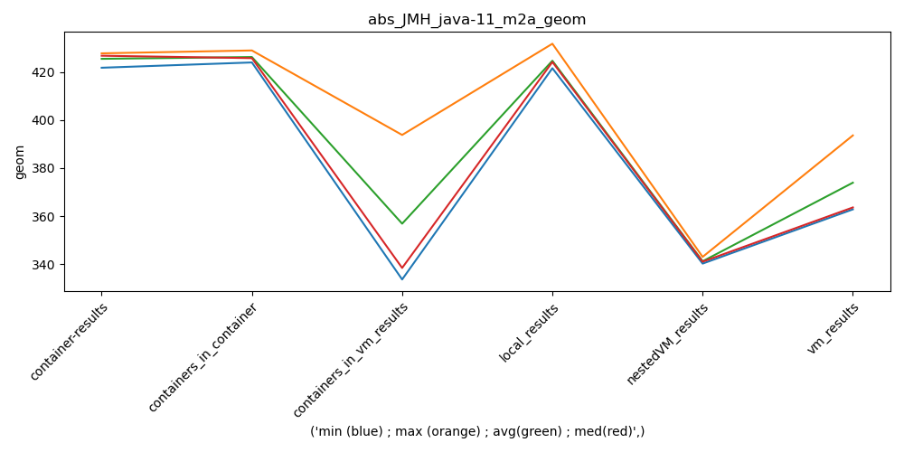
geomMean of all keys (benchmark meassured relativre accuracy)
{'MIN': [426.2, 425.2, 333.6, 421.6, 362.8], 'MAX': [427.8, 429.0, 340.2, 431.8, 363.8], 'AVG': [427.14285714285717, 427.0285714285714, 336.37142857142857, 425.1428571428572, 363.3142857142857], 'MED': [427.2, 426.8, 336.4, 424.2, 363.6]}
JMH java-11 geomMean where all runs of one jdk were made AVARAGE before processing
MIN 426.2 container-results
MIN 425.2 containers_in_container
MIN 333.6 containers_in_vm_results
MIN 421.6 local_results
MIN 362.8 vm_results
MAX 427.8 container-results
MAX 429.0 containers_in_container
MAX 340.2 containers_in_vm_results
MAX 431.8 local_results
MAX 363.8 vm_results
AVG 427.14285714285717 container-results
AVG 427.0285714285714 containers_in_container
AVG 336.37142857142857 containers_in_vm_results
AVG 425.1428571428572 local_results
AVG 363.3142857142857 vm_results
MED 427.2 container-results
MED 426.8 containers_in_container
MED 336.4 containers_in_vm_results
MED 424.2 local_results
MED 363.6 vm_results

all runs of one jdk were made MEDIAN before processing
geom
JMH java-11 geom where all runs of one jdk were made MEDIAN before processing
MIN 427.0 container-results
MIN 425.0 containers_in_container
MIN 333.0 containers_in_vm_results
MIN 423.0 local_results
MIN 363.0 vm_results
MAX 428.0 container-results
MAX 428.0 containers_in_container
MAX 341.0 containers_in_vm_results
MAX 425.0 local_results
MAX 364.0 vm_results
AVG 427.14285714285717 container-results
AVG 427.0 containers_in_container
AVG 336.42857142857144 containers_in_vm_results
AVG 424.14285714285717 local_results
AVG 363.42857142857144 vm_results
MED 427.0 container-results
MED 427.0 containers_in_container
MED 335.0 containers_in_vm_results
MED 424.0 local_results
MED 363.0 vm_results
geomMean of all keys (benchmark meassured relativre accuracy)
{'MIN': [427.0, 425.0, 333.0, 423.0, 363.0], 'MAX': [428.0, 428.0, 341.0, 425.0, 364.0], 'AVG': [427.14285714285717, 427.0, 336.42857142857144, 424.14285714285717, 363.42857142857144], 'MED': [427.0, 427.0, 335.0, 424.0, 363.0]}
JMH java-11 geomMean where all runs of one jdk were made MEDIAN before processing
MIN 427.0 container-results
MIN 425.0 containers_in_container
MIN 333.0 containers_in_vm_results
MIN 423.0 local_results
MIN 363.0 vm_results
MAX 428.0 container-results
MAX 428.0 containers_in_container
MAX 341.0 containers_in_vm_results
MAX 425.0 local_results
MAX 364.0 vm_results
AVG 427.14285714285717 container-results
AVG 427.0 containers_in_container
AVG 336.42857142857144 containers_in_vm_results
AVG 424.14285714285717 local_results
AVG 363.42857142857144 vm_results
MED 427.0 container-results
MED 427.0 containers_in_container
MED 335.0 containers_in_vm_results
MED 424.0 local_results
MED 363.0 vm_results
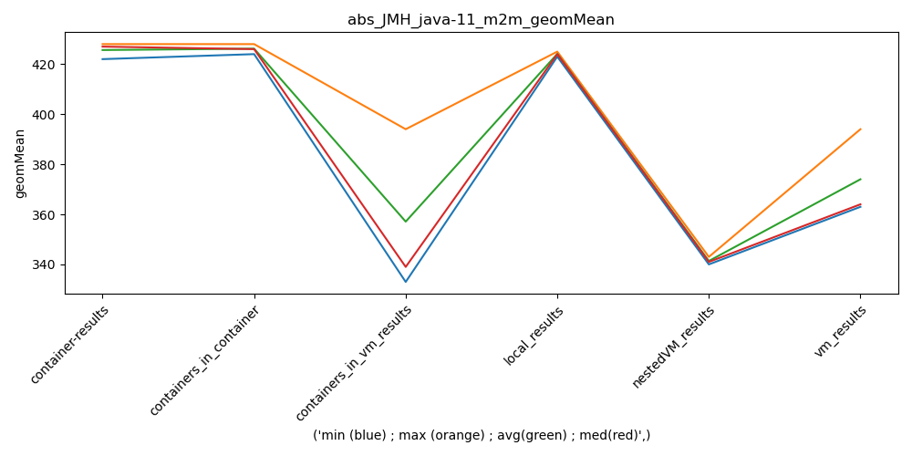
geomMean of all metrics from geomMean of all keys
{'MIN': [424.7249808267228, 424.3988363277769, 331.86036853366403, 418.83798529581514, 362.2655489774851], 'MAX': [428.26634512202634, 431.31460674572344, 341.72942588028604, 440.2589298960878, 364.2662886622437], 'AVG': [427.142857142857, 427.01904740663474, 336.4383786505751, 424.80926211740825, 363.3523769586111], 'MED': [427.0666562608391, 426.9333229220889, 336.1322879983037, 424.06665618723224, 363.1998899082382]}
JMH java-11 geomMean geomMean
MIN 424.7249808267228 container-results
MIN 424.3988363277769 containers_in_container
MIN 331.86036853366403 containers_in_vm_results
MIN 418.83798529581514 local_results
MIN 362.2655489774851 vm_results
MAX 428.26634512202634 container-results
MAX 431.31460674572344 containers_in_container
MAX 341.72942588028604 containers_in_vm_results
MAX 440.2589298960878 local_results
MAX 364.2662886622437 vm_results
AVG 427.142857142857 container-results
AVG 427.01904740663474 containers_in_container
AVG 336.4383786505751 containers_in_vm_results
AVG 424.80926211740825 local_results
AVG 363.3523769586111 vm_results
MED 427.0666562608391 container-results
MED 426.9333229220889 containers_in_container
MED 336.1322879983037 containers_in_vm_results
MED 424.06665618723224 local_results
MED 363.1998899082382 vm_results

java-17
all runs of one jdk are treated as INDIVIDUAL items
geom
JMH java-17 geom where all runs of one jdk are treated as INDIVIDUAL items
MIN 405.0 container-results
MIN 421.0 containers_in_container
MIN 324.0 containers_in_vm_results
MIN 416.0 local_results
MIN 355.0 vm_results
MAX 426.0 container-results
MAX 425.0 containers_in_container
MAX 336.0 containers_in_vm_results
MAX 431.0 local_results
MAX 358.0 vm_results
AVG 418.64 container-results
AVG 422.76 containers_in_container
AVG 331.0 containers_in_vm_results
AVG 419.28 local_results
AVG 356.56 vm_results
MED 420.0 container-results
MED 423.0 containers_in_container
MED 331.0 containers_in_vm_results
MED 418.0 local_results
MED 356.0 vm_results
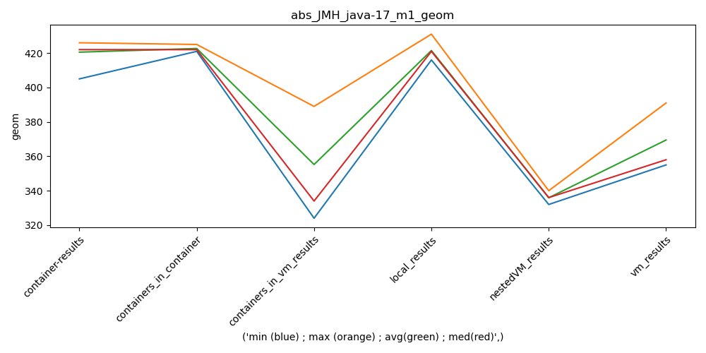
geomMean of all keys (benchmark meassured relativre accuracy)
{'MIN': [405.0, 421.0, 324.0, 416.0, 355.0], 'MAX': [426.0, 425.0, 336.0, 431.0, 358.0], 'AVG': [418.64, 422.76, 331.0, 419.28, 356.56], 'MED': [420.0, 423.0, 331.0, 418.0, 356.0]}
JMH java-17 geomMean where all runs of one jdk are treated as INDIVIDUAL items
MIN 405.0 container-results
MIN 421.0 containers_in_container
MIN 324.0 containers_in_vm_results
MIN 416.0 local_results
MIN 355.0 vm_results
MAX 426.0 container-results
MAX 425.0 containers_in_container
MAX 336.0 containers_in_vm_results
MAX 431.0 local_results
MAX 358.0 vm_results
AVG 418.64 container-results
AVG 422.76 containers_in_container
AVG 331.0 containers_in_vm_results
AVG 419.28 local_results
AVG 356.56 vm_results
MED 420.0 container-results
MED 423.0 containers_in_container
MED 331.0 containers_in_vm_results
MED 418.0 local_results
MED 356.0 vm_results
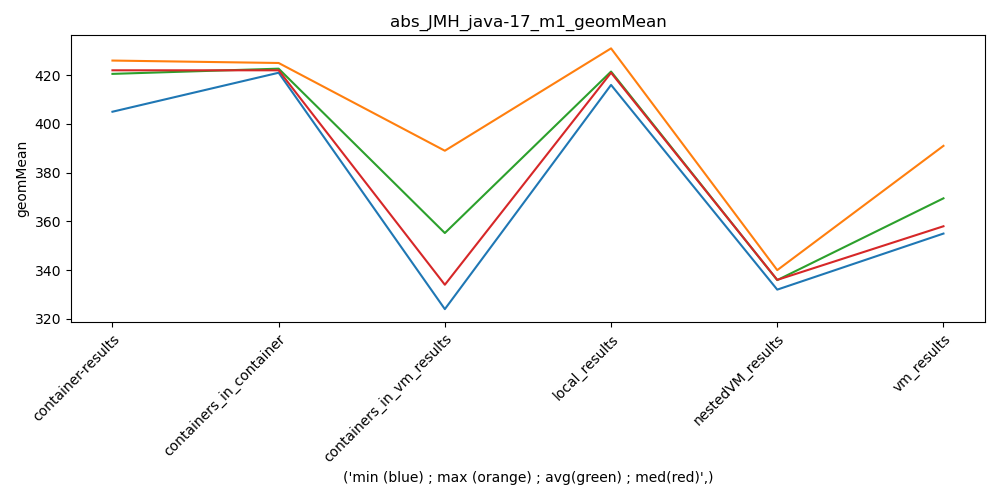
all runs of one jdk were made AVARAGE before processing
geom
JMH java-17 geom where all runs of one jdk were made AVARAGE before processing
MIN 415.2 container-results
MIN 422.2 containers_in_container
MIN 328.0 containers_in_vm_results
MIN 417.6 local_results
MIN 356.2 vm_results
MAX 422.0 container-results
MAX 423.0 containers_in_container
MAX 333.0 containers_in_vm_results
MAX 422.0 local_results
MAX 357.2 vm_results
AVG 418.64 container-results
AVG 422.76000000000005 containers_in_container
AVG 331.0 containers_in_vm_results
AVG 419.2799999999999 local_results
AVG 356.56 vm_results
MED 419.4 container-results
MED 422.8 containers_in_container
MED 331.6 containers_in_vm_results
MED 419.0 local_results
MED 356.4 vm_results

geomMean of all keys (benchmark meassured relativre accuracy)
{'MIN': [415.2, 422.2, 328.0, 417.6, 356.2], 'MAX': [422.0, 423.0, 333.0, 422.0, 357.2], 'AVG': [418.64, 422.76000000000005, 331.0, 419.2799999999999, 356.56], 'MED': [419.4, 422.8, 331.6, 419.0, 356.4]}
JMH java-17 geomMean where all runs of one jdk were made AVARAGE before processing
MIN 415.2 container-results
MIN 422.2 containers_in_container
MIN 328.0 containers_in_vm_results
MIN 417.6 local_results
MIN 356.2 vm_results
MAX 422.0 container-results
MAX 423.0 containers_in_container
MAX 333.0 containers_in_vm_results
MAX 422.0 local_results
MAX 357.2 vm_results
AVG 418.64 container-results
AVG 422.76000000000005 containers_in_container
AVG 331.0 containers_in_vm_results
AVG 419.2799999999999 local_results
AVG 356.56 vm_results
MED 419.4 container-results
MED 422.8 containers_in_container
MED 331.6 containers_in_vm_results
MED 419.0 local_results
MED 356.4 vm_results

all runs of one jdk were made MEDIAN before processing
geom
JMH java-17 geom where all runs of one jdk were made MEDIAN before processing
MIN 417.0 container-results
MIN 422.0 containers_in_container
MIN 327.0 containers_in_vm_results
MIN 417.0 local_results
MIN 356.0 vm_results
MAX 422.0 container-results
MAX 423.0 containers_in_container
MAX 333.0 containers_in_vm_results
MAX 420.0 local_results
MAX 358.0 vm_results
AVG 420.4 container-results
AVG 422.8 containers_in_container
AVG 330.8 containers_in_vm_results
AVG 418.4 local_results
AVG 356.4 vm_results
MED 422.0 container-results
MED 423.0 containers_in_container
MED 331.0 containers_in_vm_results
MED 418.0 local_results
MED 356.0 vm_results

geomMean of all keys (benchmark meassured relativre accuracy)
{'MIN': [417.0, 422.0, 327.0, 417.0, 356.0], 'MAX': [422.0, 423.0, 333.0, 420.0, 358.0], 'AVG': [420.4, 422.8, 330.8, 418.4, 356.4], 'MED': [422.0, 423.0, 331.0, 418.0, 356.0]}
JMH java-17 geomMean where all runs of one jdk were made MEDIAN before processing
MIN 417.0 container-results
MIN 422.0 containers_in_container
MIN 327.0 containers_in_vm_results
MIN 417.0 local_results
MIN 356.0 vm_results
MAX 422.0 container-results
MAX 423.0 containers_in_container
MAX 333.0 containers_in_vm_results
MAX 420.0 local_results
MAX 358.0 vm_results
AVG 420.4 container-results
AVG 422.8 containers_in_container
AVG 330.8 containers_in_vm_results
AVG 418.4 local_results
AVG 356.4 vm_results
MED 422.0 container-results
MED 423.0 containers_in_container
MED 331.0 containers_in_vm_results
MED 418.0 local_results
MED 356.0 vm_results
geomMean of all metrics from geomMean of all keys
{'MIN': [412.36595975465457, 421.73300646798003, 326.32889887271926, 416.86614408755827, 355.73294578617964], 'MAX': [423.3291426345782, 423.6656187218166, 333.99701193736365, 424.3064860114359, 357.733134451979], 'AVG': [419.225846448435, 422.77333291283827, 330.9333199014995, 418.9864612075113, 356.50665868721353], 'MED': [420.46519883367944, 422.93332282361155, 331.19987927562937, 418.3330678700063, 356.13328342690386]}
JMH java-17 geomMean geomMean
MIN 412.36595975465457 container-results
MIN 421.73300646798003 containers_in_container
MIN 326.32889887271926 containers_in_vm_results
MIN 416.86614408755827 local_results
MIN 355.73294578617964 vm_results
MAX 423.3291426345782 container-results
MAX 423.6656187218166 containers_in_container
MAX 333.99701193736365 containers_in_vm_results
MAX 424.3064860114359 local_results
MAX 357.733134451979 vm_results
AVG 419.225846448435 container-results
AVG 422.77333291283827 containers_in_container
AVG 330.9333199014995 containers_in_vm_results
AVG 418.9864612075113 local_results
AVG 356.50665868721353 vm_results
MED 420.46519883367944 container-results
MED 422.93332282361155 containers_in_container
MED 331.19987927562937 containers_in_vm_results
MED 418.3330678700063 local_results
MED 356.13328342690386 vm_results

geomMean of all benchamrks from geomMean of all metrics and all keys
{'MIN': [91.38835624064126, 92.17617364616767, 77.06288469224437, 91.60638288338994, 81.6923011247626], 'MAX': [94.37359576515199, 94.54180914090551, 79.85459647445217, 95.40253728727691, 83.42992479904137], 'AVG': [93.68198233661572, 93.85454387018474, 78.58181050724106, 93.5419598292117, 83.00185016012063], 'MED': [94.01101559602508, 94.06186046248472, 78.48650170934043, 93.65076833413491, 83.16321358138305]}
JMH geomMean geomMean geomMean
MIN 91.38835624064126 container-results
MIN 92.17617364616767 containers_in_container
MIN 77.06288469224437 containers_in_vm_results
MIN 91.60638288338994 local_results
MIN 81.6923011247626 vm_results
MAX 94.37359576515199 container-results
MAX 94.54180914090551 containers_in_container
MAX 79.85459647445217 containers_in_vm_results
MAX 95.40253728727691 local_results
MAX 83.42992479904137 vm_results
AVG 93.68198233661572 container-results
AVG 93.85454387018474 containers_in_container
AVG 78.58181050724106 containers_in_vm_results
AVG 93.5419598292117 local_results
AVG 83.00185016012063 vm_results
MED 94.01101559602508 container-results
MED 94.06186046248472 containers_in_container
MED 78.48650170934043 containers_in_vm_results
MED 93.65076833413491 local_results
MED 83.16321358138305 vm_results

RADARGUNs1
java-1.8.0
all runs of one jdk are treated as INDIVIDUAL items
BasicOperations.Put.Throughput=
RADARGUNs1 java-1.8.0 BasicOperations.Put.Throughput= where all runs of one jdk are treated as INDIVIDUAL items
MIN 662072.0 container-results
MIN 672844.0 containers_in_container
MIN 522504.0 containers_in_vm_results
MIN 689797.0 local_results
MIN 510215.0 vm_results
MAX 828751.0 container-results
MAX 824080.0 containers_in_container
MAX 591552.0 containers_in_vm_results
MAX 818065.0 local_results
MAX 595604.0 vm_results
AVG 760180.1428571428 container-results
AVG 767354.1142857143 containers_in_container
AVG 563811.3714285714 containers_in_vm_results
AVG 761067.2 local_results
AVG 562866.6 vm_results
MED 763308.0 container-results
MED 781360.0 containers_in_container
MED 567991.0 containers_in_vm_results
MED 764409.0 local_results
MED 564136.0 vm_results

BasicOperations.Put.ResponseTimeMean
RADARGUNs1 java-1.8.0 BasicOperations.Put.ResponseTimeMean where all runs of one jdk are treated as INDIVIDUAL items
MIN -4255.0 container-results
MIN -4385.0 containers_in_container
MIN -6812.0 containers_in_vm_results
MIN -4153.0 local_results
MIN -7630.0 vm_results
MAX -3840.0 container-results
MAX -3835.0 containers_in_container
MAX -6286.0 containers_in_vm_results
MAX -3934.0 local_results
MAX -7035.0 vm_results
AVG -4031.4 container-results
AVG -4046.057142857143 containers_in_container
AVG -6535.085714285714 containers_in_vm_results
AVG -4036.04 local_results
AVG -7295.085714285714 vm_results
MED -4027.0 container-results
MED -4045.0 containers_in_container
MED -6532.0 containers_in_vm_results
MED -4035.0 local_results
MED -7294.0 vm_results
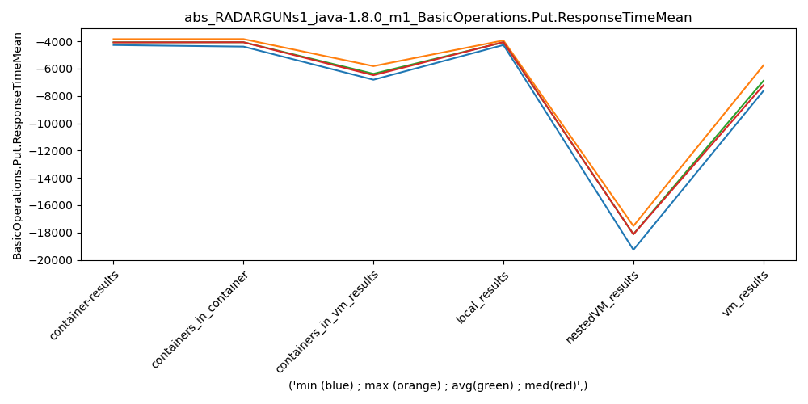
BasicOperations.Get.Throughput=
RADARGUNs1 java-1.8.0 BasicOperations.Get.Throughput= where all runs of one jdk are treated as INDIVIDUAL items
MIN 2648167.0 container-results
MIN 2691672.0 containers_in_container
MIN 2089654.0 containers_in_vm_results
MIN 2759139.0 local_results
MIN 2040746.0 vm_results
MAX 3315154.0 container-results
MAX 3296719.0 containers_in_container
MAX 2366318.0 containers_in_vm_results
MAX 3272450.0 local_results
MAX 2382424.0 vm_results
AVG 3040710.942857143 container-results
AVG 3069412.0285714287 containers_in_container
AVG 2255236.9714285713 containers_in_vm_results
AVG 3044261.96 local_results
AVG 2251464.6285714284 vm_results
MED 3053182.0 container-results
MED 3125312.0 containers_in_container
MED 2271924.0 containers_in_vm_results
MED 3057807.0 local_results
MED 2256606.0 vm_results

BasicOperations.Get.ResponseTimeMean
RADARGUNs1 java-1.8.0 BasicOperations.Get.ResponseTimeMean where all runs of one jdk are treated as INDIVIDUAL items
MIN -1227.0 container-results
MIN -1190.0 containers_in_container
MIN -1758.0 containers_in_vm_results
MIN -1245.0 local_results
MIN -1801.0 vm_results
MAX -1044.0 container-results
MAX -1054.0 containers_in_container
MAX -1515.0 containers_in_vm_results
MAX -1071.0 local_results
MAX -1451.0 vm_results
AVG -1110.6857142857143 container-results
AVG -1117.5714285714287 containers_in_container
AVG -1634.7714285714285 containers_in_vm_results
AVG -1149.2 local_results
AVG -1594.942857142857 vm_results
MED -1109.0 container-results
MED -1123.0 containers_in_container
MED -1598.0 containers_in_vm_results
MED -1150.0 local_results
MED -1564.0 vm_results
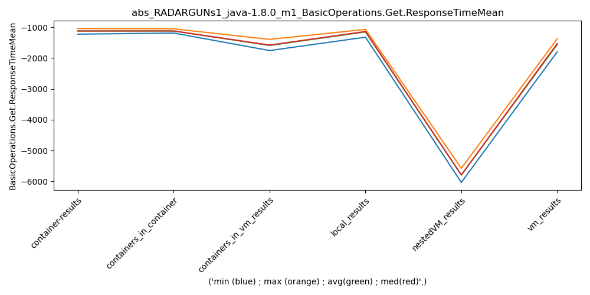
geomMean of all keys (benchmark meassured relativre accuracy)
{'MIN': [55004.558034871996, 55445.112623151486, 60133.20865524165, 56008.83520862966, 61502.83097191516], 'MAX': [57608.93863575837, 57565.7703897038, 60424.52720923531, 57952.3650843414, 61691.743446347595], 'AVG': [56719.79909232974, 57126.75821488696, 60709.76965767636, 57255.080068730866, 61967.15157840152], 'MED': [56799.095628208415, 57711.280306242246, 60581.434281168506, 57387.764892478015, 61732.02384560886]}
RADARGUNs1 java-1.8.0 geomMean where all runs of one jdk are treated as INDIVIDUAL items
MIN 55004.558034871996 container-results
MIN 55445.112623151486 containers_in_container
MIN 60133.20865524165 containers_in_vm_results
MIN 56008.83520862966 local_results
MIN 61502.83097191516 vm_results
MAX 57608.93863575837 container-results
MAX 57565.7703897038 containers_in_container
MAX 60424.52720923531 containers_in_vm_results
MAX 57952.3650843414 local_results
MAX 61691.743446347595 vm_results
AVG 56719.79909232974 container-results
AVG 57126.75821488696 containers_in_container
AVG 60709.76965767636 containers_in_vm_results
AVG 57255.080068730866 local_results
AVG 61967.15157840152 vm_results
MED 56799.095628208415 container-results
MED 57711.280306242246 containers_in_container
MED 60581.434281168506 containers_in_vm_results
MED 57387.764892478015 local_results
MED 61732.02384560886 vm_results
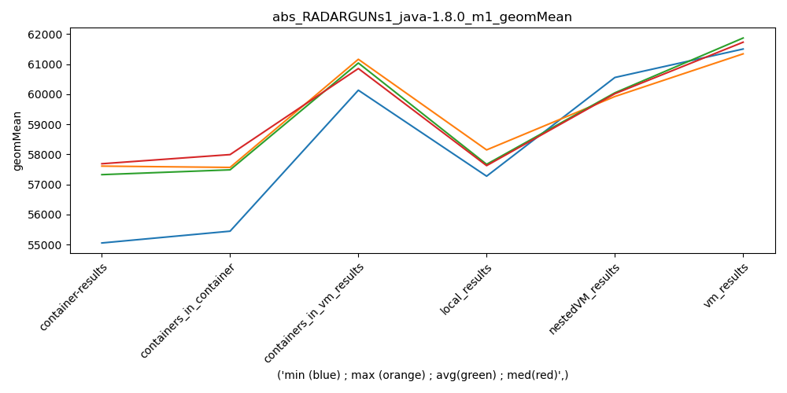
all runs of one jdk were made AVARAGE before processing
BasicOperations.Put.Throughput=
RADARGUNs1 java-1.8.0 BasicOperations.Put.Throughput= where all runs of one jdk were made AVARAGE before processing
MIN 715324.8 container-results
MIN 730686.2 containers_in_container
MIN 543344.0 containers_in_vm_results
MIN 730628.0 local_results
MIN 549914.4 vm_results
MAX 794925.4 container-results
MAX 810584.4 containers_in_container
MAX 576892.4 containers_in_vm_results
MAX 798123.4 local_results
MAX 580315.6 vm_results
AVG 760180.1428571428 container-results
AVG 767354.1142857142 containers_in_container
AVG 563811.3714285714 containers_in_vm_results
AVG 761067.2 local_results
AVG 562866.6 vm_results
MED 778842.8 container-results
MED 766303.2 containers_in_container
MED 565808.4 containers_in_vm_results
MED 756727.8 local_results
MED 564342.2 vm_results

BasicOperations.Put.ResponseTimeMean
RADARGUNs1 java-1.8.0 BasicOperations.Put.ResponseTimeMean where all runs of one jdk were made AVARAGE before processing
MIN -4147.2 container-results
MIN -4156.0 containers_in_container
MIN -6605.8 containers_in_vm_results
MIN -4082.0 local_results
MIN -7370.8 vm_results
MAX -3915.4 container-results
MAX -3982.4 containers_in_container
MAX -6432.4 containers_in_vm_results
MAX -4010.2 local_results
MAX -7183.4 vm_results
AVG -4031.4 container-results
AVG -4046.057142857143 containers_in_container
AVG -6535.085714285715 containers_in_vm_results
AVG -4036.0399999999995 local_results
AVG -7295.085714285715 vm_results
MED -4021.2 container-results
MED -4029.4 containers_in_container
MED -6535.2 containers_in_vm_results
MED -4018.4 local_results
MED -7322.6 vm_results
BasicOperations.Get.Throughput=
RADARGUNs1 java-1.8.0 BasicOperations.Get.Throughput= where all runs of one jdk were made AVARAGE before processing
MIN 2861303.6 container-results
MIN 2922637.0 containers_in_container
MIN 2173362.8 containers_in_vm_results
MIN 2922411.2 local_results
MIN 2199656.2 vm_results
MAX 3179813.2 container-results
MAX 3242323.6 containers_in_container
MAX 2307621.2 containers_in_vm_results
MAX 3192504.0 local_results
MAX 2321272.6 vm_results
AVG 3040710.942857143 container-results
AVG 3069412.028571429 containers_in_container
AVG 2255236.971428571 containers_in_vm_results
AVG 3044261.96 local_results
AVG 2251464.628571429 vm_results
MED 3115165.6 container-results
MED 3065317.2 containers_in_container
MED 2263249.2 containers_in_vm_results
MED 3026918.8 local_results
MED 2257391.2 vm_results
BasicOperations.Get.ResponseTimeMean
RADARGUNs1 java-1.8.0 BasicOperations.Get.ResponseTimeMean where all runs of one jdk were made AVARAGE before processing
MIN -1140.0 container-results
MIN -1140.4 containers_in_container
MIN -1669.4 containers_in_vm_results
MIN -1185.4 local_results
MIN -1653.0 vm_results
MAX -1076.6 container-results
MAX -1090.4 containers_in_container
MAX -1537.2 containers_in_vm_results
MAX -1114.0 local_results
MAX -1512.2 vm_results
AVG -1110.685714285714 container-results
AVG -1117.5714285714287 containers_in_container
AVG -1634.7714285714285 containers_in_vm_results
AVG -1149.2 local_results
AVG -1594.9428571428573 vm_results
MED -1113.8 container-results
MED -1120.0 containers_in_container
MED -1655.0 containers_in_vm_results
MED -1147.2 local_results
MED -1605.8 vm_results
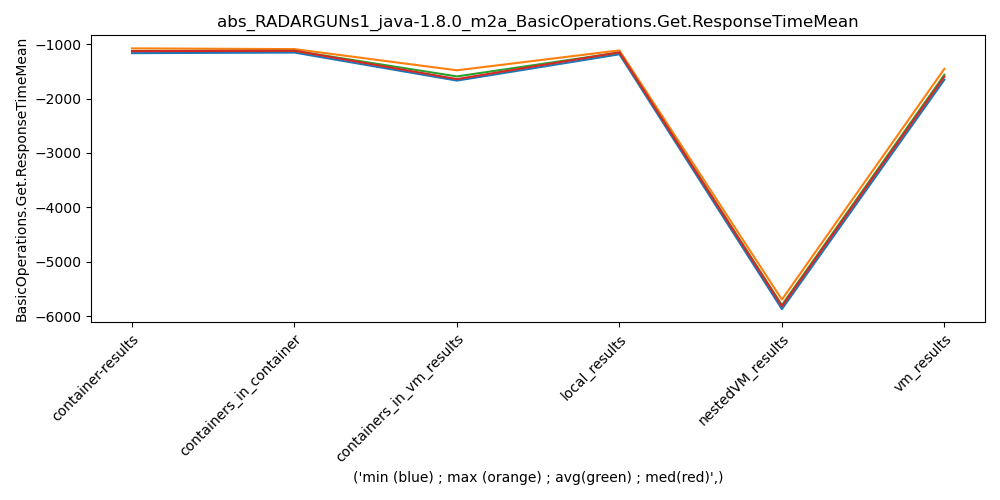
geomMean of all keys (benchmark meassured relativre accuracy)
{'MIN': [55773.996314356846, 56403.96477477181, 60072.158012576285, 56694.88643004627, 61959.705524652374], 'MAX': [57133.34130638545, 58122.773559432986, 60233.859167756505, 58084.89109012546, 61848.96246883372], 'AVG': [56719.79909232973, 57126.75821488696, 60709.769657676356, 57255.080068730866, 61967.15157840153], 'MED': [57414.74744730484, 57060.2429560963, 61004.891893738335, 57004.37531543992, 62212.33900225363]}
RADARGUNs1 java-1.8.0 geomMean where all runs of one jdk were made AVARAGE before processing
MIN 55773.996314356846 container-results
MIN 56403.96477477181 containers_in_container
MIN 60072.158012576285 containers_in_vm_results
MIN 56694.88643004627 local_results
MIN 61959.705524652374 vm_results
MAX 57133.34130638545 container-results
MAX 58122.773559432986 containers_in_container
MAX 60233.859167756505 containers_in_vm_results
MAX 58084.89109012546 local_results
MAX 61848.96246883372 vm_results
AVG 56719.79909232973 container-results
AVG 57126.75821488696 containers_in_container
AVG 60709.769657676356 containers_in_vm_results
AVG 57255.080068730866 local_results
AVG 61967.15157840153 vm_results
MED 57414.74744730484 container-results
MED 57060.2429560963 containers_in_container
MED 61004.891893738335 containers_in_vm_results
MED 57004.37531543992 local_results
MED 62212.33900225363 vm_results
all runs of one jdk were made MEDIAN before processing
BasicOperations.Put.Throughput=
RADARGUNs1 java-1.8.0 BasicOperations.Put.Throughput= where all runs of one jdk were made MEDIAN before processing
MIN 696475.0 container-results
MIN 695902.0 containers_in_container
MIN 544648.0 containers_in_vm_results
MIN 730968.0 local_results
MIN 545652.0 vm_results
MAX 797691.0 container-results
MAX 814689.0 containers_in_container
MAX 580303.0 containers_in_vm_results
MAX 806079.0 local_results
MAX 584836.0 vm_results
AVG 758870.7142857143 container-results
AVG 767086.5714285715 containers_in_container
AVG 564687.0 containers_in_vm_results
AVG 767479.2 local_results
AVG 565943.7142857143 vm_results
MED 770161.0 container-results
MED 774072.0 containers_in_container
MED 568658.0 containers_in_vm_results
MED 772049.0 local_results
MED 564136.0 vm_results
BasicOperations.Put.ResponseTimeMean
RADARGUNs1 java-1.8.0 BasicOperations.Put.ResponseTimeMean where all runs of one jdk were made MEDIAN before processing
MIN -4147.0 container-results
MIN -4108.0 containers_in_container
MIN -6596.0 containers_in_vm_results
MIN -4084.0 local_results
MIN -7372.0 vm_results
MAX -3904.0 container-results
MAX -3996.0 containers_in_container
MAX -6384.0 containers_in_vm_results
MAX -3981.0 local_results
MAX -7217.0 vm_results
AVG -4031.4285714285716 container-results
AVG -4035.714285714286 containers_in_container
AVG -6507.428571428572 containers_in_vm_results
AVG -4023.2 local_results
AVG -7293.285714285715 vm_results
MED -4039.0 container-results
MED -4042.0 containers_in_container
MED -6517.0 containers_in_vm_results
MED -4019.0 local_results
MED -7327.0 vm_results
BasicOperations.Get.Throughput=
RADARGUNs1 java-1.8.0 BasicOperations.Get.Throughput= where all runs of one jdk were made MEDIAN before processing
MIN 2785919.0 container-results
MIN 2783345.0 containers_in_container
MIN 2178538.0 containers_in_vm_results
MIN 2923879.0 local_results
MIN 2182818.0 vm_results
MAX 3190952.0 container-results
MAX 3258521.0 containers_in_container
MAX 2321234.0 containers_in_vm_results
MAX 3224131.0 local_results
MAX 2339254.0 vm_results
AVG 3035412.4285714286 container-results
AVG 3068291.714285714 containers_in_container
AVG 2258783.1428571427 containers_in_vm_results
AVG 3069804.4 local_results
AVG 2263897.4285714286 vm_results
MED 3080763.0 container-results
MED 3096350.0 containers_in_container
MED 2274411.0 containers_in_vm_results
MED 3088055.0 local_results
MED 2256606.0 vm_results
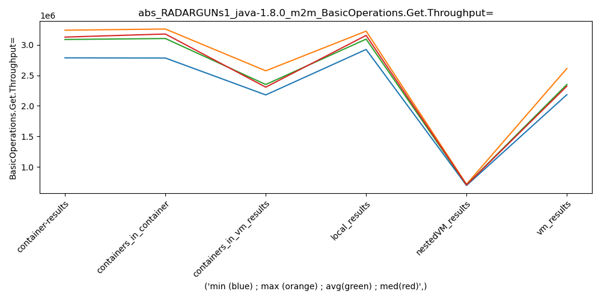
BasicOperations.Get.ResponseTimeMean
RADARGUNs1 java-1.8.0 BasicOperations.Get.ResponseTimeMean where all runs of one jdk were made MEDIAN before processing
MIN -1137.0 container-results
MIN -1135.0 containers_in_container
MIN -1738.0 containers_in_vm_results
MIN -1185.0 local_results
MIN -1682.0 vm_results
MAX -1064.0 container-results
MAX -1074.0 containers_in_container
MAX -1542.0 containers_in_vm_results
MAX -1121.0 local_results
MAX -1510.0 vm_results
AVG -1105.7142857142858 container-results
AVG -1112.4285714285713 containers_in_container
AVG -1645.2857142857142 containers_in_vm_results
AVG -1145.6 local_results
AVG -1585.142857142857 vm_results
MED -1111.0 container-results
MED -1123.0 containers_in_container
MED -1647.0 containers_in_vm_results
MED -1149.0 local_results
MED -1551.0 vm_results
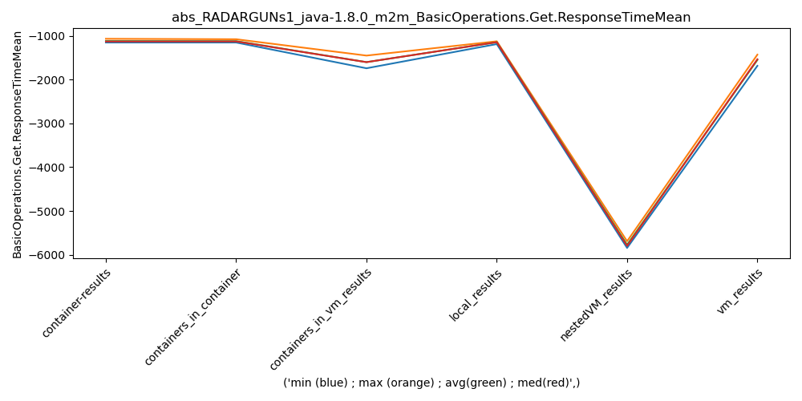
geomMean of all keys (benchmark meassured relativre accuracy)
{'MIN': [54997.39627775618, 54819.53603438329, 60729.94222972779, 56710.759185708564, 61992.071523072795], 'MAX': [57023.201959721984, 58097.913335291, 60344.50758284802, 58357.54574569136, 62138.574046439804], 'AVG': [56607.22270733774, 57014.247088659766, 60790.157146995094, 57404.440249876105, 62037.65961456971], 'MED': [57122.463804023675, 57431.72587162773, 61040.11668334449, 57602.586080703215, 61672.902167649685]}
RADARGUNs1 java-1.8.0 geomMean where all runs of one jdk were made MEDIAN before processing
MIN 54997.39627775618 container-results
MIN 54819.53603438329 containers_in_container
MIN 60729.94222972779 containers_in_vm_results
MIN 56710.759185708564 local_results
MIN 61992.071523072795 vm_results
MAX 57023.201959721984 container-results
MAX 58097.913335291 containers_in_container
MAX 60344.50758284802 containers_in_vm_results
MAX 58357.54574569136 local_results
MAX 62138.574046439804 vm_results
AVG 56607.22270733774 container-results
AVG 57014.247088659766 containers_in_container
AVG 60790.157146995094 containers_in_vm_results
AVG 57404.440249876105 local_results
AVG 62037.65961456971 vm_results
MED 57122.463804023675 container-results
MED 57431.72587162773 containers_in_container
MED 61040.11668334449 containers_in_vm_results
MED 57602.586080703215 local_results
MED 61672.902167649685 vm_results
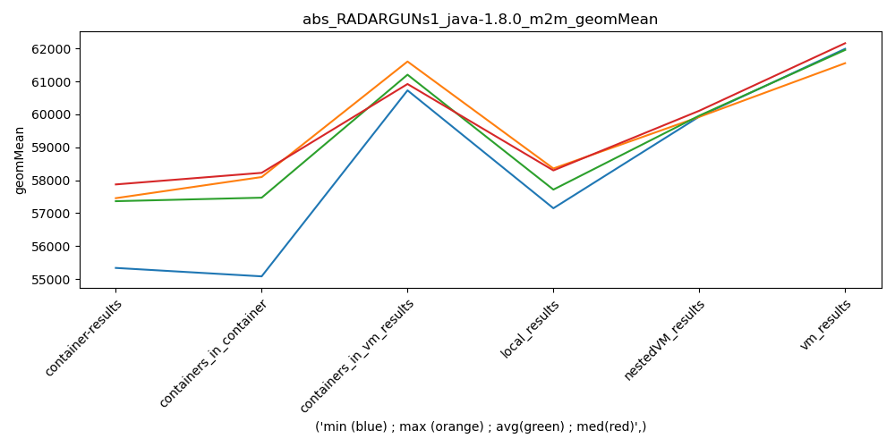
geomMean of all metrics from geomMean of all keys
{'MIN': [55257.45230155165, 55552.39059504961, 60311.04126182867, 56470.54302115454, 61817.79835661272], 'MAX': [57254.59749300487, 57928.248197054134, 60334.24733386713, 58131.35609825826, 61892.81682209615], 'AVG': [56682.24877664524, 57089.229857989914, 60736.553669108114, 57304.82356586673, 61990.64534874315], 'MED': [57111.54867194841, 57400.46328725167, 60875.12360539689, 57331.04099607964, 61871.95092652416]}
RADARGUNs1 java-1.8.0 geomMean geomMean
MIN 55257.45230155165 container-results
MIN 55552.39059504961 containers_in_container
MIN 60311.04126182867 containers_in_vm_results
MIN 56470.54302115454 local_results
MIN 61817.79835661272 vm_results
MAX 57254.59749300487 container-results
MAX 57928.248197054134 containers_in_container
MAX 60334.24733386713 containers_in_vm_results
MAX 58131.35609825826 local_results
MAX 61892.81682209615 vm_results
AVG 56682.24877664524 container-results
AVG 57089.229857989914 containers_in_container
AVG 60736.553669108114 containers_in_vm_results
AVG 57304.82356586673 local_results
AVG 61990.64534874315 vm_results
MED 57111.54867194841 container-results
MED 57400.46328725167 containers_in_container
MED 60875.12360539689 containers_in_vm_results
MED 57331.04099607964 local_results
MED 61871.95092652416 vm_results
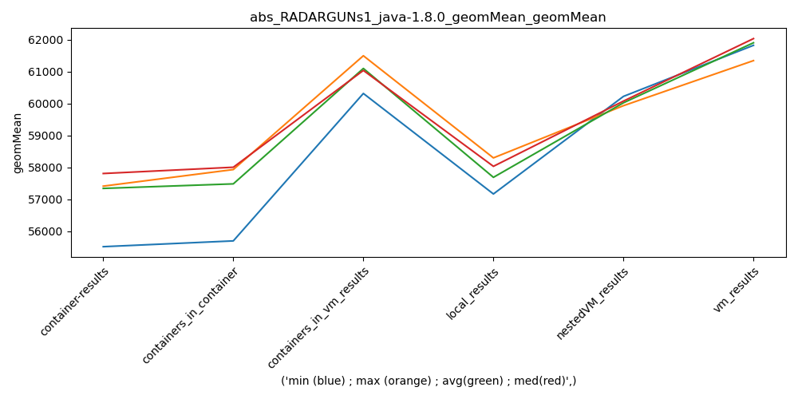
java-11
all runs of one jdk are treated as INDIVIDUAL items
BasicOperations.Put.Throughput=
RADARGUNs1 java-11 BasicOperations.Put.Throughput= where all runs of one jdk are treated as INDIVIDUAL items
MIN 702230.0 container-results
MIN 713058.0 containers_in_container
MIN 483370.0 containers_in_vm_results
MIN 727048.0 local_results
MIN 574159.0 vm_results
MAX 832896.0 container-results
MAX 831721.0 containers_in_container
MAX 592886.0 containers_in_vm_results
MAX 838532.0 local_results
MAX 631221.0 vm_results
AVG 793595.1714285715 container-results
AVG 792081.875 containers_in_container
AVG 556208.9714285714 containers_in_vm_results
AVG 801942.0857142857 local_results
AVG 597197.8571428572 vm_results
MED 798437.0 container-results
MED 801889.0 containers_in_container
MED 560309.0 containers_in_vm_results
MED 800222.0 local_results
MED 597100.0 vm_results

BasicOperations.Put.ResponseTimeMean
RADARGUNs1 java-11 BasicOperations.Put.ResponseTimeMean where all runs of one jdk are treated as INDIVIDUAL items
MIN -4294.0 container-results
MIN -4244.0 containers_in_container
MIN -7065.0 containers_in_vm_results
MIN -4212.0 local_results
MIN -7477.0 vm_results
MAX -3795.0 container-results
MAX -3868.0 containers_in_container
MAX -6128.0 containers_in_vm_results
MAX -3783.0 local_results
MAX -6556.0 vm_results
AVG -4009.7428571428572 container-results
AVG -4024.46875 containers_in_container
AVG -6502.4857142857145 containers_in_vm_results
AVG -3972.4285714285716 local_results
AVG -6849.571428571428 vm_results
MED -4003.0 container-results
MED -4022.0 containers_in_container
MED -6502.0 containers_in_vm_results
MED -3970.0 local_results
MED -6861.0 vm_results
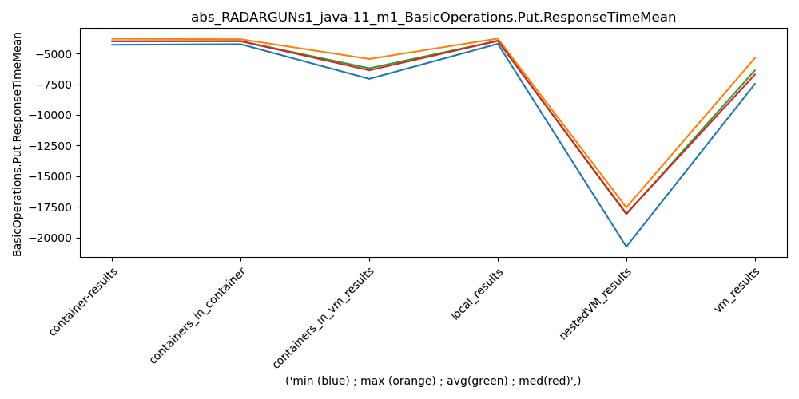
BasicOperations.Get.Throughput=
RADARGUNs1 java-11 BasicOperations.Get.Throughput= where all runs of one jdk are treated as INDIVIDUAL items
MIN 2808723.0 container-results
MIN 2852640.0 containers_in_container
MIN 1933528.0 containers_in_vm_results
MIN 2908298.0 local_results
MIN 2296720.0 vm_results
MAX 3331523.0 container-results
MAX 3326624.0 containers_in_container
MAX 2371603.0 containers_in_vm_results
MAX 3353942.0 local_results
MAX 2525050.0 vm_results
AVG 3174368.8285714285 container-results
AVG 3168323.375 containers_in_container
AVG 2224833.5714285714 containers_in_vm_results
AVG 3207787.314285714 local_results
AVG 2388797.9142857143 vm_results
MED 3193765.0 container-results
MED 3207727.0 containers_in_container
MED 2241170.0 containers_in_vm_results
MED 3200797.0 local_results
MED 2388496.0 vm_results
BasicOperations.Get.ResponseTimeMean
RADARGUNs1 java-11 BasicOperations.Get.ResponseTimeMean where all runs of one jdk are treated as INDIVIDUAL items
MIN -1179.0 container-results
MIN -1194.0 containers_in_container
MIN -1733.0 containers_in_vm_results
MIN -1176.0 local_results
MIN -1560.0 vm_results
MAX -1080.0 container-results
MAX -1068.0 containers_in_container
MAX -1547.0 containers_in_vm_results
MAX -1083.0 local_results
MAX -1397.0 vm_results
AVG -1130.0857142857142 container-results
AVG -1123.9375 containers_in_container
AVG -1627.6857142857143 containers_in_vm_results
AVG -1117.7714285714285 local_results
AVG -1480.0285714285715 vm_results
MED -1129.0 container-results
MED -1131.0 containers_in_container
MED -1620.0 containers_in_vm_results
MED -1115.0 local_results
MED -1480.0 vm_results
geomMean of all keys (benchmark meassured relativre accuracy)
{'MIN': [56213.552714744044, 56661.47575623611, 58161.449544973664, 56888.49155523447, 62625.04515632893], 'MAX': [58072.0666704962, 58144.651975564964, 60423.4563445979, 58261.94738638072, 61811.84303023898], 'AVG': [58126.08564572356, 58044.70048173108, 60158.41278267152, 58135.23309741377, 61667.70519234415], 'MED': [58264.73638497469, 58486.291128908604, 60306.77362878978, 58027.45161410379, 61688.63790429342]}
RADARGUNs1 java-11 geomMean where all runs of one jdk are treated as INDIVIDUAL items
MIN 56213.552714744044 container-results
MIN 56661.47575623611 containers_in_container
MIN 58161.449544973664 containers_in_vm_results
MIN 56888.49155523447 local_results
MIN 62625.04515632893 vm_results
MAX 58072.0666704962 container-results
MAX 58144.651975564964 containers_in_container
MAX 60423.4563445979 containers_in_vm_results
MAX 58261.94738638072 local_results
MAX 61811.84303023898 vm_results
AVG 58126.08564572356 container-results
AVG 58044.70048173108 containers_in_container
AVG 60158.41278267152 containers_in_vm_results
AVG 58135.23309741377 local_results
AVG 61667.70519234415 vm_results
MED 58264.73638497469 container-results
MED 58486.291128908604 containers_in_container
MED 60306.77362878978 containers_in_vm_results
MED 58027.45161410379 local_results
MED 61688.63790429342 vm_results
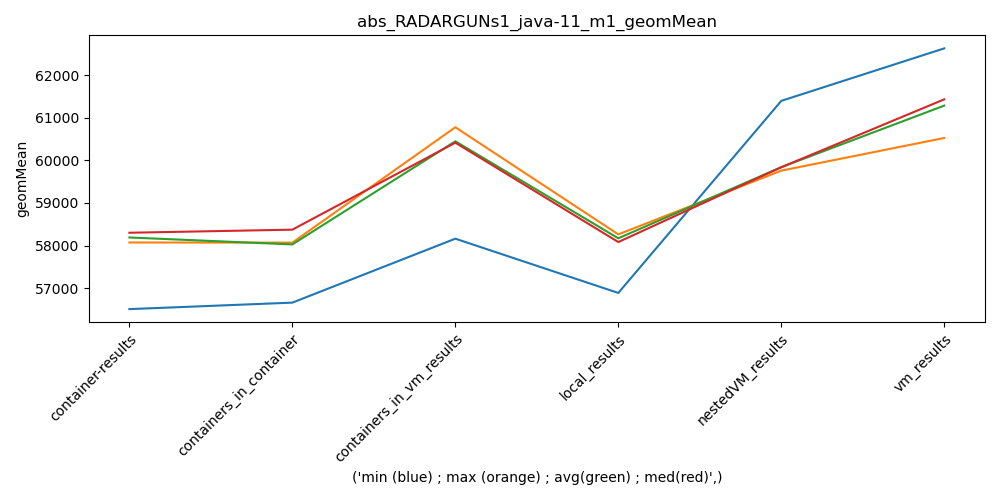
all runs of one jdk were made AVARAGE before processing
BasicOperations.Put.Throughput=
RADARGUNs1 java-11 BasicOperations.Put.Throughput= where all runs of one jdk were made AVARAGE before processing
MIN 775425.0 container-results
MIN 775930.0 containers_in_container
MIN 540041.6 containers_in_vm_results
MIN 784435.4 local_results
MIN 588933.8 vm_results
MAX 811847.8 container-results
MAX 807578.6 containers_in_container
MAX 578142.4 containers_in_vm_results
MAX 822873.2 local_results
MAX 606003.2 vm_results
AVG 793595.1714285715 container-results
AVG 790697.4285714284 containers_in_container
AVG 556208.9714285714 containers_in_vm_results
AVG 801942.0857142858 local_results
AVG 597197.8571428572 vm_results
MED 793576.4 container-results
MED 790602.2 containers_in_container
MED 553256.2 containers_in_vm_results
MED 800140.6 local_results
MED 596960.2 vm_results

BasicOperations.Put.ResponseTimeMean
RADARGUNs1 java-11 BasicOperations.Put.ResponseTimeMean where all runs of one jdk were made AVARAGE before processing
MIN -4157.0 container-results
MIN -4110.4 containers_in_container
MIN -6658.6 containers_in_vm_results
MIN -4031.8 local_results
MIN -6945.6 vm_results
MAX -3942.8 container-results
MAX -3928.5 containers_in_container
MAX -6329.2 containers_in_vm_results
MAX -3867.2 local_results
MAX -6751.0 vm_results
AVG -4009.7428571428572 container-results
AVG -4016.242857142857 containers_in_container
AVG -6502.4857142857145 containers_in_vm_results
AVG -3972.4285714285716 local_results
AVG -6849.571428571428 vm_results
MED -3975.0 container-results
MED -4016.8 containers_in_container
MED -6474.0 containers_in_vm_results
MED -4010.8 local_results
MED -6866.6 vm_results
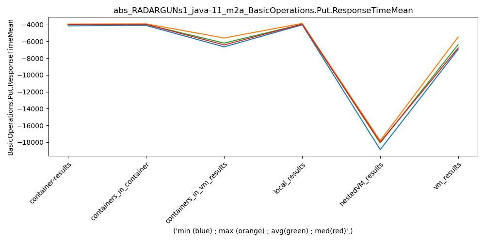
BasicOperations.Get.Throughput=
RADARGUNs1 java-11 BasicOperations.Get.Throughput= where all runs of one jdk were made AVARAGE before processing
MIN 3101648.0 container-results
MIN 3103477.5 containers_in_container
MIN 2160122.2 containers_in_vm_results
MIN 3137751.0 local_results
MIN 2355622.6 vm_results
MAX 3247295.6 container-results
MAX 3230391.0 containers_in_container
MAX 2312578.8 containers_in_vm_results
MAX 3291557.6 local_results
MAX 2423981.0 vm_results
AVG 3174368.8285714285 container-results
AVG 3162765.1571428566 containers_in_container
AVG 2224833.5714285714 containers_in_vm_results
AVG 3207787.3142857146 local_results
AVG 2388797.9142857143 vm_results
MED 3174347.0 container-results
MED 3162513.0 containers_in_container
MED 2213047.8 containers_in_vm_results
MED 3200514.4 local_results
MED 2387837.6 vm_results
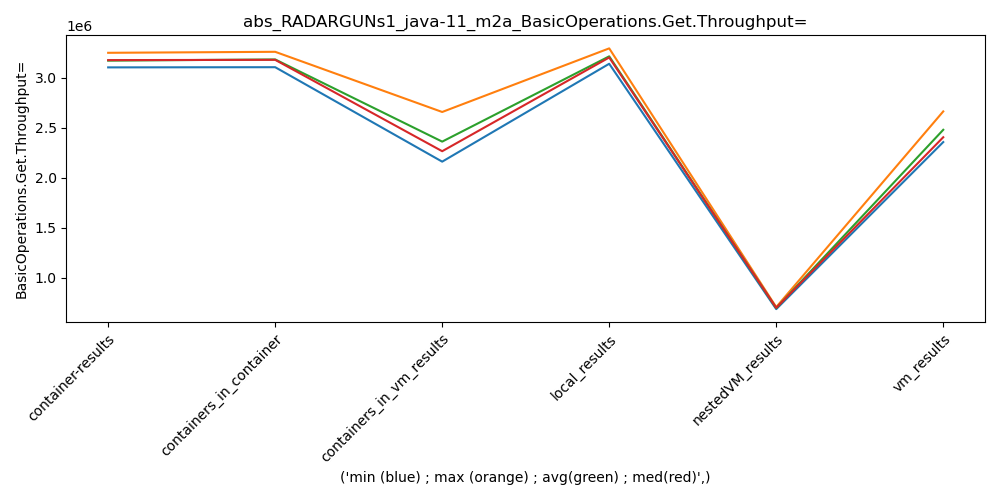
BasicOperations.Get.ResponseTimeMean
RADARGUNs1 java-11 BasicOperations.Get.ResponseTimeMean where all runs of one jdk were made AVARAGE before processing
MIN -1143.0 container-results
MIN -1137.0 containers_in_container
MIN -1662.6 containers_in_vm_results
MIN -1130.6 local_results
MIN -1505.8 vm_results
MAX -1108.2 container-results
MAX -1115.0 containers_in_container
MAX -1577.2 containers_in_vm_results
MAX -1095.6 local_results
MAX -1447.8 vm_results
AVG -1130.0857142857144 container-results
AVG -1123.7714285714287 containers_in_container
AVG -1627.6857142857145 containers_in_vm_results
AVG -1117.7714285714287 local_results
AVG -1480.0285714285715 vm_results
MED -1136.0 container-results
MED -1122.0 containers_in_container
MED -1620.4 containers_in_vm_results
MED -1123.4 local_results
MED -1478.8 vm_results

geomMean of all keys (benchmark meassured relativre accuracy)
{'MIN': [58141.95633957405, 57920.04945948924, 59947.22161038038, 57875.65320375937, 61718.06669212631], 'MAX': [58257.90110689516, 58141.38589048285, 60442.4050893056, 58203.05201719872, 61555.97325374374], 'AVG': [58126.08564572356, 57962.05919936425, 60158.41278267153, 58135.23309741379, 61667.70519234415], 'MED': [58075.05796304936, 57938.31369139532, 59865.69150471166, 58282.460729278944, 61680.8484050731]}
RADARGUNs1 java-11 geomMean where all runs of one jdk were made AVARAGE before processing
MIN 58141.95633957405 container-results
MIN 57920.04945948924 containers_in_container
MIN 59947.22161038038 containers_in_vm_results
MIN 57875.65320375937 local_results
MIN 61718.06669212631 vm_results
MAX 58257.90110689516 container-results
MAX 58141.38589048285 containers_in_container
MAX 60442.4050893056 containers_in_vm_results
MAX 58203.05201719872 local_results
MAX 61555.97325374374 vm_results
AVG 58126.08564572356 container-results
AVG 57962.05919936425 containers_in_container
AVG 60158.41278267153 containers_in_vm_results
AVG 58135.23309741379 local_results
AVG 61667.70519234415 vm_results
MED 58075.05796304936 container-results
MED 57938.31369139532 containers_in_container
MED 59865.69150471166 containers_in_vm_results
MED 58282.460729278944 local_results
MED 61680.8484050731 vm_results
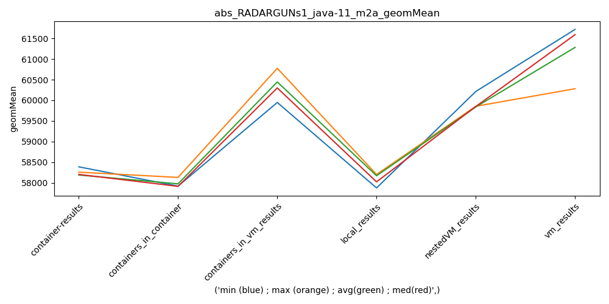
all runs of one jdk were made MEDIAN before processing
BasicOperations.Put.Throughput=
RADARGUNs1 java-11 BasicOperations.Put.Throughput= where all runs of one jdk were made MEDIAN before processing
MIN 793979.0 container-results
MIN 793193.0 containers_in_container
MIN 549809.0 containers_in_vm_results
MIN 796588.0 local_results
MIN 584766.0 vm_results
MAX 801315.0 container-results
MAX 819387.0 containers_in_container
MAX 576261.0 containers_in_vm_results
MAX 819282.0 local_results
MAX 605098.0 vm_results
AVG 798010.0 container-results
AVG 803475.8571428572 containers_in_container
AVG 560169.1428571428 containers_in_vm_results
AVG 803964.5714285715 local_results
AVG 594571.4285714285 vm_results
MED 798437.0 container-results
MED 801889.0 containers_in_container
MED 559302.0 containers_in_vm_results
MED 800222.0 local_results
MED 597007.0 vm_results
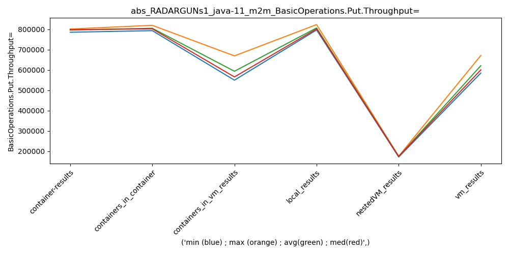
BasicOperations.Put.ResponseTimeMean
RADARGUNs1 java-11 BasicOperations.Put.ResponseTimeMean where all runs of one jdk were made MEDIAN before processing
MIN -4159.0 container-results
MIN -4100.0 containers_in_container
MIN -6675.0 containers_in_vm_results
MIN -4025.0 local_results
MIN -7026.0 vm_results
MAX -3943.0 container-results
MAX -3947.0 containers_in_container
MAX -6207.0 containers_in_vm_results
MAX -3829.0 local_results
MAX -6720.0 vm_results
AVG -4010.4285714285716 container-results
AVG -4020.8571428571427 containers_in_container
AVG -6476.857142857143 containers_in_vm_results
AVG -3950.1428571428573 local_results
AVG -6840.714285714285 vm_results
MED -3977.0 container-results
MED -4028.0 containers_in_container
MED -6489.0 containers_in_vm_results
MED -3973.0 local_results
MED -6801.0 vm_results

BasicOperations.Get.Throughput=
RADARGUNs1 java-11 BasicOperations.Get.Throughput= where all runs of one jdk were made MEDIAN before processing
MIN 3175918.0 container-results
MIN 3172644.0 containers_in_container
MIN 2199049.0 containers_in_vm_results
MIN 3186187.0 local_results
MIN 2338917.0 vm_results
MAX 3205051.0 container-results
MAX 3277257.0 containers_in_container
MAX 2304974.0 containers_in_vm_results
MAX 3277173.0 local_results
MAX 2420158.0 vm_results
AVG 3192084.1428571427 container-results
AVG 3213898.8571428573 containers_in_container
AVG 2240636.1428571427 containers_in_vm_results
AVG 3215820.714285714 local_results
AVG 2378190.1428571427 vm_results
MED 3193765.0 container-results
MED 3207727.0 containers_in_container
MED 2237115.0 containers_in_vm_results
MED 3200797.0 local_results
MED 2388079.0 vm_results

BasicOperations.Get.ResponseTimeMean
RADARGUNs1 java-11 BasicOperations.Get.ResponseTimeMean where all runs of one jdk were made MEDIAN before processing
MIN -1146.0 container-results
MIN -1141.0 containers_in_container
MIN -1655.0 containers_in_vm_results
MIN -1134.0 local_results
MIN -1503.0 vm_results
MAX -1114.0 container-results
MAX -1120.0 containers_in_container
MAX -1578.0 containers_in_vm_results
MAX -1098.0 local_results
MAX -1447.0 vm_results
AVG -1132.142857142857 container-results
AVG -1129.4285714285713 containers_in_container
AVG -1625.857142857143 containers_in_vm_results
AVG -1116.7142857142858 local_results
AVG -1475.0 vm_results
MED -1135.0 container-results
MED -1129.0 containers_in_container
MED -1628.0 containers_in_vm_results
MED -1125.0 local_results
MED -1467.0 vm_results
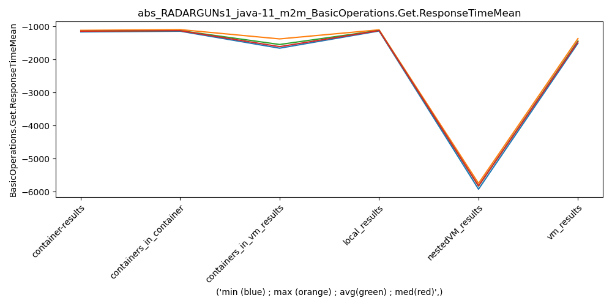
geomMean of all keys (benchmark meassured relativre accuracy)
{'MIN': [58879.34345190782, 58575.692173709365, 60453.855672628735, 58340.613274248935, 61647.57711149366], 'MAX': [57954.55109812906, 58697.71287806688, 60057.672993967666, 57963.56946345654, 61429.47594506693], 'AVG': [58316.79800859434, 58518.82704681965, 60295.41728401705, 58112.67986225029, 61459.07515691655], 'MED': [58247.02735407186, 58482.208512148536, 60296.44593698143, 58168.106455486784, 61412.63762609821]}
RADARGUNs1 java-11 geomMean where all runs of one jdk were made MEDIAN before processing
MIN 58879.34345190782 container-results
MIN 58575.692173709365 containers_in_container
MIN 60453.855672628735 containers_in_vm_results
MIN 58340.613274248935 local_results
MIN 61647.57711149366 vm_results
MAX 57954.55109812906 container-results
MAX 58697.71287806688 containers_in_container
MAX 60057.672993967666 containers_in_vm_results
MAX 57963.56946345654 local_results
MAX 61429.47594506693 vm_results
AVG 58316.79800859434 container-results
AVG 58518.82704681965 containers_in_container
AVG 60295.41728401705 containers_in_vm_results
AVG 58112.67986225029 local_results
AVG 61459.07515691655 vm_results
MED 58247.02735407186 container-results
MED 58482.208512148536 containers_in_container
MED 60296.44593698143 containers_in_vm_results
MED 58168.106455486784 local_results
MED 61412.63762609821 vm_results
geomMean of all metrics from geomMean of all keys
{'MIN': [57733.94192354681, 57713.58846019094, 59512.66913286474, 57698.4001552893, 61995.30381463211], 'MAX': [58094.705446018874, 58327.33201036346, 60307.58451173898, 58142.712980162985, 61598.892207651916], 'AVG': [58189.58703430277, 58174.679285786435, 60204.04632542288, 58127.714379994104, 61598.08327467709], 'MED': [58195.544314777784, 58301.70189001499, 60155.9519925252, 58159.246077644835, 61593.90753329529]}
RADARGUNs1 java-11 geomMean geomMean
MIN 57733.94192354681 container-results
MIN 57713.58846019094 containers_in_container
MIN 59512.66913286474 containers_in_vm_results
MIN 57698.4001552893 local_results
MIN 61995.30381463211 vm_results
MAX 58094.705446018874 container-results
MAX 58327.33201036346 containers_in_container
MAX 60307.58451173898 containers_in_vm_results
MAX 58142.712980162985 local_results
MAX 61598.892207651916 vm_results
AVG 58189.58703430277 container-results
AVG 58174.679285786435 containers_in_container
AVG 60204.04632542288 containers_in_vm_results
AVG 58127.714379994104 local_results
AVG 61598.08327467709 vm_results
MED 58195.544314777784 container-results
MED 58301.70189001499 containers_in_container
MED 60155.9519925252 containers_in_vm_results
MED 58159.246077644835 local_results
MED 61593.90753329529 vm_results
java-17
all runs of one jdk are treated as INDIVIDUAL items
BasicOperations.Put.Throughput=
RADARGUNs1 java-17 BasicOperations.Put.Throughput= where all runs of one jdk are treated as INDIVIDUAL items
MIN 691612.0 container-results
MIN 700055.0 containers_in_container
MIN 481848.0 containers_in_vm_results
MIN 700570.0 local_results
MIN 533757.0 vm_results
MAX 845078.0 container-results
MAX 846769.0 containers_in_container
MAX 610754.0 containers_in_vm_results
MAX 838339.0 local_results
MAX 634818.0 vm_results
AVG 781544.76 container-results
AVG 809971.6 containers_in_container
AVG 569523.48 containers_in_vm_results
AVG 782088.08 local_results
AVG 593177.24 vm_results
MED 791433.0 container-results
MED 824573.0 containers_in_container
MED 577272.0 containers_in_vm_results
MED 809763.0 local_results
MED 608789.0 vm_results
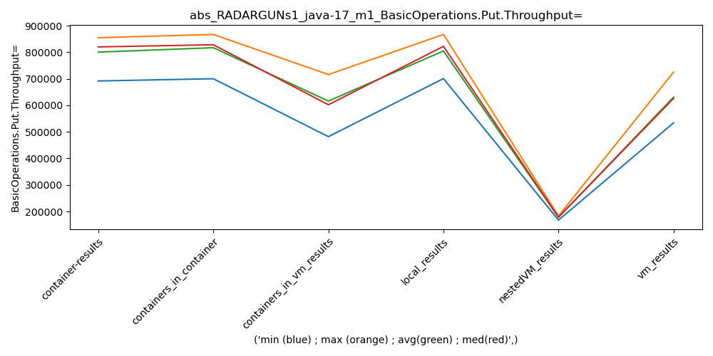
BasicOperations.Put.ResponseTimeMean
RADARGUNs1 java-17 BasicOperations.Put.ResponseTimeMean where all runs of one jdk are treated as INDIVIDUAL items
MIN -4050.0 container-results
MIN -3987.0 containers_in_container
MIN -6738.0 containers_in_vm_results
MIN -4279.0 local_results
MIN -7146.0 vm_results
MAX -3666.0 container-results
MAX -3708.0 containers_in_container
MAX -5813.0 containers_in_vm_results
MAX -3619.0 local_results
MAX -6545.0 vm_results
AVG -3799.28 container-results
AVG -3802.96 containers_in_container
AVG -6234.76 containers_in_vm_results
AVG -3782.52 local_results
AVG -6741.2 vm_results
MED -3786.0 container-results
MED -3799.0 containers_in_container
MED -6201.0 containers_in_vm_results
MED -3761.0 local_results
MED -6717.0 vm_results

BasicOperations.Get.Throughput=
RADARGUNs1 java-17 BasicOperations.Get.Throughput= where all runs of one jdk are treated as INDIVIDUAL items
MIN 2766577.0 container-results
MIN 2800306.0 containers_in_container
MIN 1927367.0 containers_in_vm_results
MIN 2802128.0 local_results
MIN 2135148.0 vm_results
MAX 3380336.0 container-results
MAX 3386946.0 containers_in_container
MAX 2442800.0 containers_in_vm_results
MAX 3353186.0 local_results
MAX 2539158.0 vm_results
AVG 3126210.08 container-results
AVG 3239883.76 containers_in_container
AVG 2278124.08 containers_in_vm_results
AVG 3128329.36 local_results
AVG 2372730.2 vm_results
MED 3165765.0 container-results
MED 3298351.0 containers_in_container
MED 2309115.0 containers_in_vm_results
MED 3239356.0 local_results
MED 2435303.0 vm_results
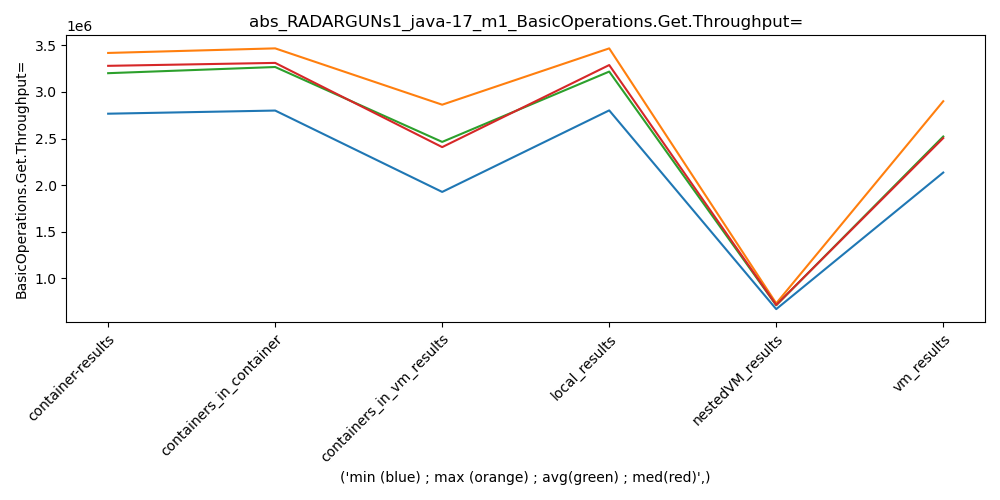
BasicOperations.Get.ResponseTimeMean
RADARGUNs1 java-17 BasicOperations.Get.ResponseTimeMean where all runs of one jdk are treated as INDIVIDUAL items
MIN -1160.0 container-results
MIN -1169.0 containers_in_container
MIN -1670.0 containers_in_vm_results
MIN -1178.0 local_results
MIN -1544.0 vm_results
MAX -1044.0 container-results
MAX -1049.0 containers_in_container
MAX -1486.0 containers_in_vm_results
MAX -1070.0 local_results
MAX -1415.0 vm_results
AVG -1091.36 container-results
AVG -1092.16 containers_in_container
AVG -1570.84 containers_in_vm_results
AVG -1110.84 local_results
AVG -1462.08 vm_results
MED -1091.0 container-results
MED -1082.0 containers_in_container
MED -1557.0 containers_in_vm_results
MED -1109.0 local_results
MED -1450.0 vm_results
geomMean of all keys (benchmark meassured relativre accuracy)
{'MIN': [54755.730039692105, 54979.34985479458, 56856.54813277192, 56086.29741797952, 59548.450995314975], 'MAX': [57502.59000602637, 57792.58349265216, 59916.07295644538, 57439.73383831032, 62158.60543817108], 'AVG': [56417.04526656937, 57458.172805840935, 59704.92746949453, 56623.957593745516, 61028.86545323485], 'MED': [56718.47522544165, 57823.667501012154, 59895.48691772551, 57512.5828437709, 61643.99659064488]}
RADARGUNs1 java-17 geomMean where all runs of one jdk are treated as INDIVIDUAL items
MIN 54755.730039692105 container-results
MIN 54979.34985479458 containers_in_container
MIN 56856.54813277192 containers_in_vm_results
MIN 56086.29741797952 local_results
MIN 59548.450995314975 vm_results
MAX 57502.59000602637 container-results
MAX 57792.58349265216 containers_in_container
MAX 59916.07295644538 containers_in_vm_results
MAX 57439.73383831032 local_results
MAX 62158.60543817108 vm_results
AVG 56417.04526656937 container-results
AVG 57458.172805840935 containers_in_container
AVG 59704.92746949453 containers_in_vm_results
AVG 56623.957593745516 local_results
AVG 61028.86545323485 vm_results
MED 56718.47522544165 container-results
MED 57823.667501012154 containers_in_container
MED 59895.48691772551 containers_in_vm_results
MED 57512.5828437709 local_results
MED 61643.99659064488 vm_results
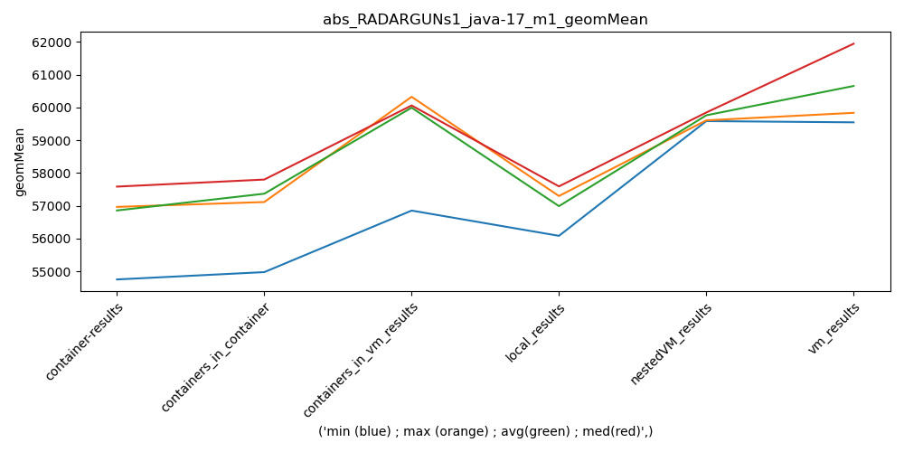
all runs of one jdk were made AVARAGE before processing
BasicOperations.Put.Throughput=
RADARGUNs1 java-17 BasicOperations.Put.Throughput= where all runs of one jdk were made AVARAGE before processing
MIN 746001.4 container-results
MIN 784344.2 containers_in_container
MIN 553518.4 containers_in_vm_results
MIN 753443.0 local_results
MIN 571380.6 vm_results
MAX 816881.2 container-results
MAX 825771.6 containers_in_container
MAX 587418.6 containers_in_vm_results
MAX 799043.4 local_results
MAX 611807.8 vm_results
AVG 781544.76 container-results
AVG 809971.6 containers_in_container
AVG 569523.4800000001 containers_in_vm_results
AVG 782088.08 local_results
AVG 593177.24 vm_results
MED 795796.0 container-results
MED 824616.0 containers_in_container
MED 563165.0 containers_in_vm_results
MED 790363.4 local_results
MED 589679.0 vm_results

BasicOperations.Put.ResponseTimeMean
RADARGUNs1 java-17 BasicOperations.Put.ResponseTimeMean where all runs of one jdk were made AVARAGE before processing
MIN -3872.4 container-results
MIN -3825.2 containers_in_container
MIN -6521.2 containers_in_vm_results
MIN -3877.4 local_results
MIN -6817.2 vm_results
MAX -3766.4 container-results
MAX -3772.2 containers_in_container
MAX -6070.0 containers_in_vm_results
MAX -3720.2 local_results
MAX -6681.0 vm_results
AVG -3799.28 container-results
AVG -3802.96 containers_in_container
AVG -6234.76 containers_in_vm_results
AVG -3782.5199999999995 local_results
AVG -6741.2 vm_results
MED -3778.6 container-results
MED -3809.4 containers_in_container
MED -6204.8 containers_in_vm_results
MED -3759.4 local_results
MED -6702.2 vm_results

BasicOperations.Get.Throughput=
RADARGUNs1 java-17 BasicOperations.Get.Throughput= where all runs of one jdk were made AVARAGE before processing
MIN 2984045.2 container-results
MIN 3137458.2 containers_in_container
MIN 2214104.0 containers_in_vm_results
MIN 3013736.2 local_results
MIN 2285503.4 vm_results
MAX 3267600.0 container-results
MAX 3303063.8 containers_in_container
MAX 2349744.0 containers_in_vm_results
MAX 3196242.2 local_results
MAX 2447311.6 vm_results
AVG 3126210.08 container-results
AVG 3239883.7600000002 containers_in_container
AVG 2278124.08 containers_in_vm_results
AVG 3128329.3600000003 local_results
AVG 2372730.1999999997 vm_results
MED 3183176.8 container-results
MED 3298506.6 containers_in_container
MED 2252688.2 containers_in_vm_results
MED 3161377.8 local_results
MED 2358732.0 vm_results

BasicOperations.Get.ResponseTimeMean
RADARGUNs1 java-17 BasicOperations.Get.ResponseTimeMean where all runs of one jdk were made AVARAGE before processing
MIN -1107.8 container-results
MIN -1106.0 containers_in_container
MIN -1609.6 containers_in_vm_results
MIN -1130.0 local_results
MIN -1480.8 vm_results
MAX -1070.8 container-results
MAX -1080.0 containers_in_container
MAX -1531.2 containers_in_vm_results
MAX -1096.0 local_results
MAX -1450.4 vm_results
AVG -1091.3600000000001 container-results
AVG -1092.16 containers_in_container
AVG -1570.8400000000001 containers_in_vm_results
AVG -1110.84 local_results
AVG -1462.0800000000002 vm_results
MED -1099.8 container-results
MED -1093.8 containers_in_container
MED -1576.4 containers_in_vm_results
MED -1111.6 local_results
MED -1455.2 vm_results

geomMean of all keys (benchmark meassured relativre accuracy)
{'MIN': [55589.99730609129, 56803.2883741897, 59888.56272409627, 56162.14308505667, 60256.29865478368], 'MAX': [57280.34803227886, 57736.28588969018, 59847.6654022732, 56806.32878603264, 61717.50846414933], 'AVG': [56417.04526656937, 57458.172805840935, 59704.92746949453, 56623.957593745516, 61028.86545323485], 'MED': [56960.892709009946, 58021.76059403201, 59351.64199699699, 56845.03965890978, 60688.804510969996]}
RADARGUNs1 java-17 geomMean where all runs of one jdk were made AVARAGE before processing
MIN 55589.99730609129 container-results
MIN 56803.2883741897 containers_in_container
MIN 59888.56272409627 containers_in_vm_results
MIN 56162.14308505667 local_results
MIN 60256.29865478368 vm_results
MAX 57280.34803227886 container-results
MAX 57736.28588969018 containers_in_container
MAX 59847.6654022732 containers_in_vm_results
MAX 56806.32878603264 local_results
MAX 61717.50846414933 vm_results
AVG 56417.04526656937 container-results
AVG 57458.172805840935 containers_in_container
AVG 59704.92746949453 containers_in_vm_results
AVG 56623.957593745516 local_results
AVG 61028.86545323485 vm_results
MED 56960.892709009946 container-results
MED 58021.76059403201 containers_in_container
MED 59351.64199699699 containers_in_vm_results
MED 56845.03965890978 local_results
MED 60688.804510969996 vm_results
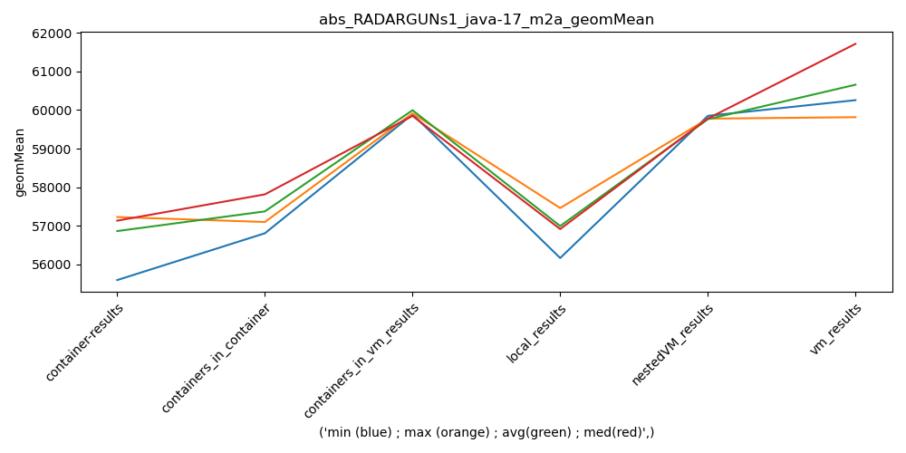
all runs of one jdk were made MEDIAN before processing
BasicOperations.Put.Throughput=
RADARGUNs1 java-17 BasicOperations.Put.Throughput= where all runs of one jdk were made MEDIAN before processing
MIN 733956.0 container-results
MIN 817566.0 containers_in_container
MIN 568478.0 containers_in_vm_results
MIN 721604.0 local_results
MIN 548864.0 vm_results
MAX 820007.0 container-results
MAX 828964.0 containers_in_container
MAX 585241.0 containers_in_vm_results
MAX 822151.0 local_results
MAX 621959.0 vm_results
AVG 783716.2 container-results
AVG 824132.6 containers_in_container
AVG 577597.2 containers_in_vm_results
AVG 791270.2 local_results
AVG 598336.8 vm_results
MED 797590.0 container-results
MED 824573.0 containers_in_container
MED 574928.0 containers_in_vm_results
MED 803669.0 local_results
MED 611702.0 vm_results

BasicOperations.Put.ResponseTimeMean
RADARGUNs1 java-17 BasicOperations.Put.ResponseTimeMean where all runs of one jdk were made MEDIAN before processing
MIN -3875.0 container-results
MIN -3811.0 containers_in_container
MIN -6506.0 containers_in_vm_results
MIN -3792.0 local_results
MIN -6777.0 vm_results
MAX -3773.0 container-results
MAX -3742.0 containers_in_container
MAX -6025.0 containers_in_vm_results
MAX -3745.0 local_results
MAX -6708.0 vm_results
AVG -3802.4 container-results
AVG -3792.0 containers_in_container
AVG -6196.8 containers_in_vm_results
AVG -3765.4 local_results
AVG -6734.4 vm_results
MED -3786.0 container-results
MED -3803.0 containers_in_container
MED -6186.0 containers_in_vm_results
MED -3761.0 local_results
MED -6737.0 vm_results

BasicOperations.Get.Throughput=
RADARGUNs1 java-17 BasicOperations.Get.Throughput= where all runs of one jdk were made MEDIAN before processing
MIN 2935985.0 container-results
MIN 3270228.0 containers_in_container
MIN 2273994.0 containers_in_vm_results
MIN 2886224.0 local_results
MIN 2195392.0 vm_results
MAX 3280509.0 container-results
MAX 3315766.0 containers_in_container
MAX 2340981.0 containers_in_vm_results
MAX 3288899.0 local_results
MAX 2487703.0 vm_results
AVG 3134997.8 container-results
AVG 3296534.0 containers_in_container
AVG 2310380.6 containers_in_vm_results
AVG 3165066.6 local_results
AVG 2393433.4 vm_results
MED 3190373.0 container-results
MED 3298351.0 containers_in_container
MED 2299688.0 containers_in_vm_results
MED 3214399.0 local_results
MED 2447005.0 vm_results
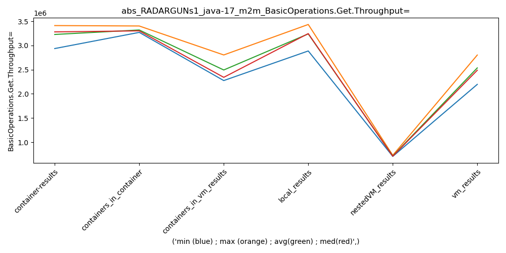
BasicOperations.Get.ResponseTimeMean
RADARGUNs1 java-17 BasicOperations.Get.ResponseTimeMean where all runs of one jdk were made MEDIAN before processing
MIN -1104.0 container-results
MIN -1095.0 containers_in_container
MIN -1597.0 containers_in_vm_results
MIN -1136.0 local_results
MIN -1468.0 vm_results
MAX -1075.0 container-results
MAX -1081.0 containers_in_container
MAX -1526.0 containers_in_vm_results
MAX -1086.0 local_results
MAX -1437.0 vm_results
AVG -1088.8 container-results
AVG -1086.4 containers_in_container
AVG -1562.8 containers_in_vm_results
AVG -1111.6 local_results
AVG -1451.2 vm_results
MED -1084.0 container-results
MED -1082.0 containers_in_container
MED -1578.0 containers_in_vm_results
MED -1116.0 local_results
MED -1450.0 vm_results
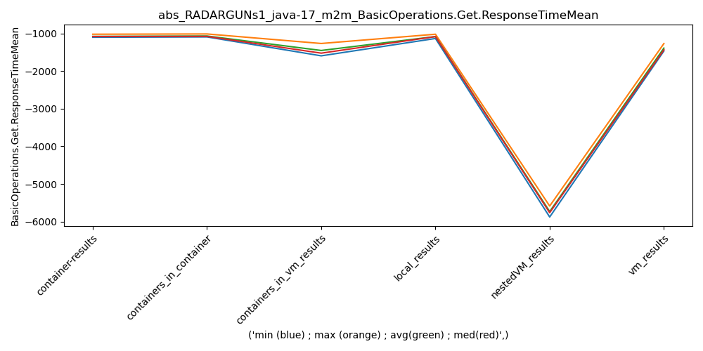
geomMean of all keys (benchmark meassured relativre accuracy)
{'MIN': [55101.84736960345, 57794.76214320338, 60538.3371828728, 54729.17561421435, 58841.683706640884], 'MAX': [57472.95348154289, 57744.71675332749, 59574.588930601036, 57586.53442712145, 62144.47553226705], 'AVG': [56474.252919604936, 57839.98673404354, 59957.6872796225, 56900.59789461251, 61164.34227506433], 'MED': [56847.02785761588, 57838.88225499309, 59937.66546098419, 57383.380887074105, 61837.55742811708]}
RADARGUNs1 java-17 geomMean where all runs of one jdk were made MEDIAN before processing
MIN 55101.84736960345 container-results
MIN 57794.76214320338 containers_in_container
MIN 60538.3371828728 containers_in_vm_results
MIN 54729.17561421435 local_results
MIN 58841.683706640884 vm_results
MAX 57472.95348154289 container-results
MAX 57744.71675332749 containers_in_container
MAX 59574.588930601036 containers_in_vm_results
MAX 57586.53442712145 local_results
MAX 62144.47553226705 vm_results
AVG 56474.252919604936 container-results
AVG 57839.98673404354 containers_in_container
AVG 59957.6872796225 containers_in_vm_results
AVG 56900.59789461251 local_results
AVG 61164.34227506433 vm_results
MED 56847.02785761588 container-results
MED 57838.88225499309 containers_in_container
MED 59937.66546098419 containers_in_vm_results
MED 57383.380887074105 local_results
MED 61837.55742811708 vm_results
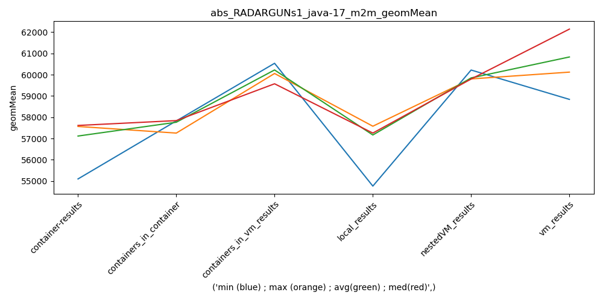
geomMean of all metrics from geomMean of all keys
{'MIN': [55148.13059488876, 56513.71444516929, 59072.446265930485, 55655.28993846198, 59546.01059021647], 'MAX': [57418.54591085298, 57757.85672540704, 59779.2602285777, 57276.52947007646, 62006.52478285846], 'AVG': [56436.108042394175, 57585.16324220346, 59789.062123447846, 56716.02126191775, 61073.99101916891], 'MED': [56842.045663552504, 57894.70019610605, 59727.66736299949, 57246.26974384042, 61388.05859777396]}
RADARGUNs1 java-17 geomMean geomMean
MIN 55148.13059488876 container-results
MIN 56513.71444516929 containers_in_container
MIN 59072.446265930485 containers_in_vm_results
MIN 55655.28993846198 local_results
MIN 59546.01059021647 vm_results
MAX 57418.54591085298 container-results
MAX 57757.85672540704 containers_in_container
MAX 59779.2602285777 containers_in_vm_results
MAX 57276.52947007646 local_results
MAX 62006.52478285846 vm_results
AVG 56436.108042394175 container-results
AVG 57585.16324220346 containers_in_container
AVG 59789.062123447846 containers_in_vm_results
AVG 56716.02126191775 local_results
AVG 61073.99101916891 vm_results
MED 56842.045663552504 container-results
MED 57894.70019610605 containers_in_container
MED 59727.66736299949 containers_in_vm_results
MED 57246.26974384042 local_results
MED 61388.05859777396 vm_results
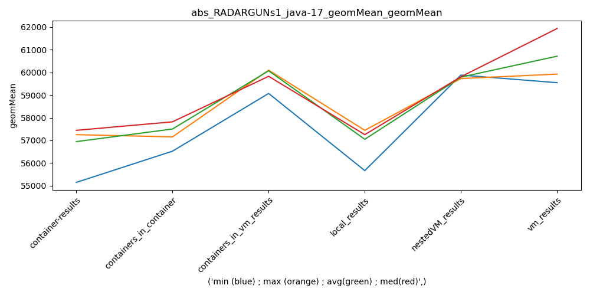
geomMean of all benchamrks from geomMean of all metrics and all keys
{'MIN': [3641.9855299771802, 3668.881382814579, 3815.907185608948, 3669.6364945705186, 3886.7020476394905], 'MAX': [3717.489730806977, 3737.6049301861663, 3840.3569480620304, 3730.101164040947, 3921.142590280598], 'AVG': [3693.706220354026, 3718.773230978415, 3845.24832723636, 3707.40512310788, 3907.845761630428], 'MED': [3707.411926269128, 3730.859204112764, 3845.683186501938, 3716.96906884861, 3910.9194073147323]}
RADARGUNs1 geomMean geomMean geomMean
MIN 3641.9855299771802 container-results
MIN 3668.881382814579 containers_in_container
MIN 3815.907185608948 containers_in_vm_results
MIN 3669.6364945705186 local_results
MIN 3886.7020476394905 vm_results
MAX 3717.489730806977 container-results
MAX 3737.6049301861663 containers_in_container
MAX 3840.3569480620304 containers_in_vm_results
MAX 3730.101164040947 local_results
MAX 3921.142590280598 vm_results
AVG 3693.706220354026 container-results
AVG 3718.773230978415 containers_in_container
AVG 3845.24832723636 containers_in_vm_results
AVG 3707.40512310788 local_results
AVG 3907.845761630428 vm_results
MED 3707.411926269128 container-results
MED 3730.859204112764 containers_in_container
MED 3845.683186501938 containers_in_vm_results
MED 3716.96906884861 local_results
MED 3910.9194073147323 vm_results
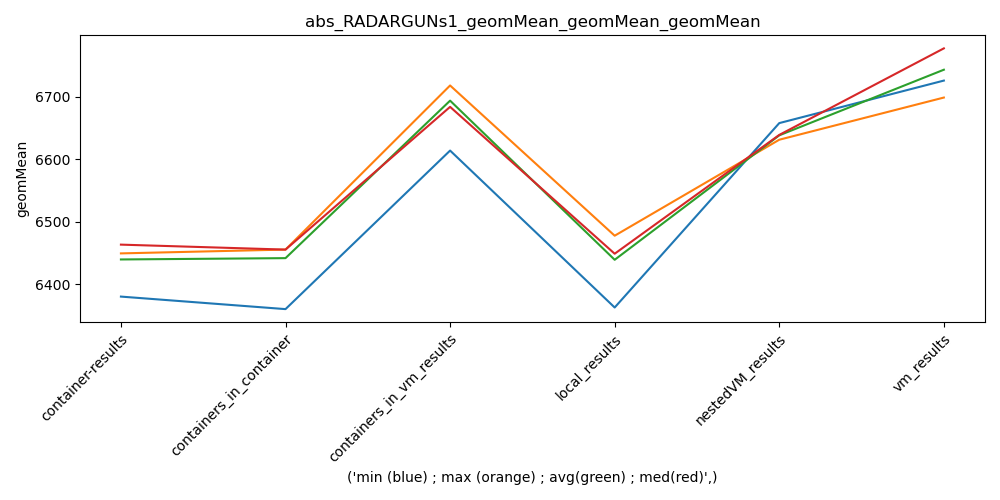
RADARGUNs3
java-1.8.0
all runs of one jdk are treated as INDIVIDUAL items
BasicOperations.Put.Throughput=
RADARGUNs3 java-1.8.0 BasicOperations.Put.Throughput= where all runs of one jdk are treated as INDIVIDUAL items
MIN 23526.0 container-results
MIN 22160.0 containers_in_container
MIN 9014.0 containers_in_vm_results
MIN 23930.0 local_results
MIN 11506.0 vm_results
MAX 24264.0 container-results
MAX 22989.0 containers_in_container
MAX 9530.0 containers_in_vm_results
MAX 24665.0 local_results
MAX 13208.0 vm_results
AVG 23836.485714285714 container-results
AVG 22570.885714285716 containers_in_container
AVG 9205.818181818182 containers_in_vm_results
AVG 24216.12 local_results
AVG 12581.8 vm_results
MED 23766.0 container-results
MED 22530.0 containers_in_container
MED 9200.0 containers_in_vm_results
MED 24160.0 local_results
MED 12614.0 vm_results

BasicOperations.Put.ResponseTimeMean
RADARGUNs3 java-1.8.0 BasicOperations.Put.ResponseTimeMean where all runs of one jdk are treated as INDIVIDUAL items
MIN -252978.0 container-results
MIN -265484.0 containers_in_container
MIN -664337.0 containers_in_vm_results
MIN -247034.0 local_results
MIN -509316.0 vm_results
MAX -244154.0 container-results
MAX -257407.0 containers_in_container
MAX -624696.0 containers_in_vm_results
MAX -240993.0 local_results
MAX -440380.0 vm_results
AVG -248161.08571428573 container-results
AVG -261730.05714285714 containers_in_container
AVG -648833.3636363636 containers_in_vm_results
AVG -244863.76 local_results
AVG -465681.85714285716 vm_results
MED -248707.0 container-results
MED -262129.0 containers_in_container
MED -651258.0 containers_in_vm_results
MED -245414.0 local_results
MED -465380.0 vm_results
BasicOperations.Get.Throughput=
RADARGUNs3 java-1.8.0 BasicOperations.Get.Throughput= where all runs of one jdk are treated as INDIVIDUAL items
MIN 94105.0 container-results
MIN 88694.0 containers_in_container
MIN 36062.0 containers_in_vm_results
MIN 95712.0 local_results
MIN 46064.0 vm_results
MAX 97058.0 container-results
MAX 91939.0 containers_in_container
MAX 38121.0 containers_in_vm_results
MAX 98653.0 local_results
MAX 52884.0 vm_results
AVG 95349.02857142857 container-results
AVG 90282.77142857143 containers_in_container
AVG 36824.15151515151 containers_in_vm_results
AVG 96862.84 local_results
AVG 50334.4 vm_results
MED 95094.0 container-results
MED 90120.0 containers_in_container
MED 36820.0 containers_in_vm_results
MED 96664.0 local_results
MED 50468.0 vm_results
BasicOperations.Get.ResponseTimeMean
RADARGUNs3 java-1.8.0 BasicOperations.Get.ResponseTimeMean where all runs of one jdk are treated as INDIVIDUAL items
MIN -62348.0 container-results
MIN -66641.0 containers_in_container
MIN -165278.0 containers_in_vm_results
MIN -61487.0 local_results
MIN -132031.0 vm_results
MAX -60078.0 container-results
MAX -63517.0 containers_in_container
MAX -156556.0 containers_in_vm_results
MAX -58937.0 local_results
MAX -115600.0 vm_results
AVG -61363.514285714286 container-results
AVG -65047.857142857145 containers_in_container
AVG -161667.81818181818 containers_in_vm_results
AVG -60413.24 local_results
AVG -120921.94285714286 vm_results
MED -61602.0 container-results
MED -65133.0 containers_in_container
MED -161137.0 containers_in_vm_results
MED -60481.0 local_results
MED -120002.0 vm_results
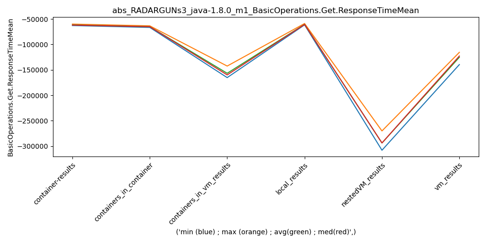
geomMean of all keys (benchmark meassured relativre accuracy)
{'MIN': [76871.70580820105, 76791.11328558711, 77293.4536767603, 76800.18764344805, 77265.80120613254], 'MAX': [76664.31531723538, 76671.25050666227, 77205.61854620324, 76673.61989027791, 77221.22637369012], 'AVG': [76700.92488525041, 76746.75461616898, 77221.45373958995, 76750.21487941906, 77277.04861164857], 'MED': [76709.29784552706, 76731.66673701188, 77215.5890956675, 76730.84791959658, 77217.59661183688]}
RADARGUNs3 java-1.8.0 geomMean where all runs of one jdk are treated as INDIVIDUAL items
MIN 76871.70580820105 container-results
MIN 76791.11328558711 containers_in_container
MIN 77293.4536767603 containers_in_vm_results
MIN 76800.18764344805 local_results
MIN 77265.80120613254 vm_results
MAX 76664.31531723538 container-results
MAX 76671.25050666227 containers_in_container
MAX 77205.61854620324 containers_in_vm_results
MAX 76673.61989027791 local_results
MAX 77221.22637369012 vm_results
AVG 76700.92488525041 container-results
AVG 76746.75461616898 containers_in_container
AVG 77221.45373958995 containers_in_vm_results
AVG 76750.21487941906 local_results
AVG 77277.04861164857 vm_results
MED 76709.29784552706 container-results
MED 76731.66673701188 containers_in_container
MED 77215.5890956675 containers_in_vm_results
MED 76730.84791959658 local_results
MED 77217.59661183688 vm_results
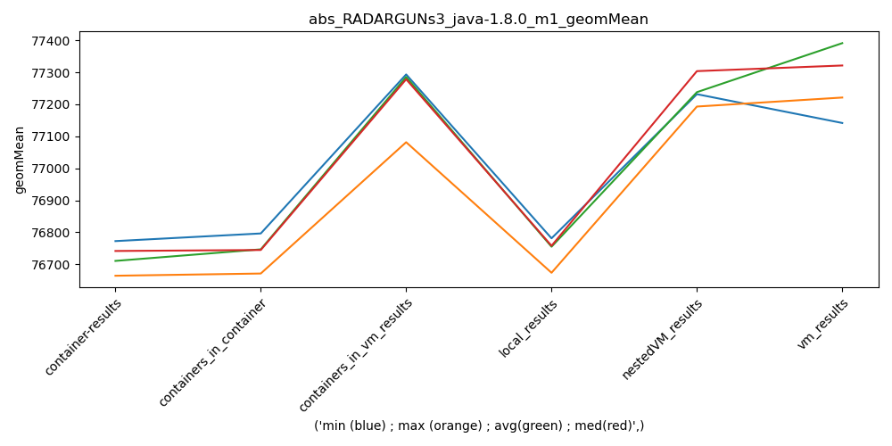
all runs of one jdk were made AVARAGE before processing
BasicOperations.Put.Throughput=
RADARGUNs3 java-1.8.0 BasicOperations.Put.Throughput= where all runs of one jdk were made AVARAGE before processing
MIN 23584.2 container-results
MIN 22328.2 containers_in_container
MIN 9073.0 containers_in_vm_results
MIN 24083.8 local_results
MIN 12162.8 vm_results
MAX 24135.4 container-results
MAX 22870.8 containers_in_container
MAX 9333.4 containers_in_vm_results
MAX 24507.2 local_results
MAX 12805.2 vm_results
AVG 23836.485714285718 container-results
AVG 22570.885714285716 containers_in_container
AVG 9201.67619047619 containers_in_vm_results
AVG 24216.120000000003 local_results
AVG 12581.8 vm_results
MED 23781.0 container-results
MED 22521.0 containers_in_container
MED 9198.0 containers_in_vm_results
MED 24190.4 local_results
MED 12697.8 vm_results
BasicOperations.Put.ResponseTimeMean
RADARGUNs3 java-1.8.0 BasicOperations.Put.ResponseTimeMean where all runs of one jdk were made AVARAGE before processing
MIN -250990.8 container-results
MIN -264344.8 containers_in_container
MIN -658495.6 containers_in_vm_results
MIN -246110.0 local_results
MIN -481882.8 vm_results
MAX -245363.4 container-results
MAX -258425.2 containers_in_container
MAX -640291.8 containers_in_vm_results
MAX -242063.6 local_results
MAX -456948.8 vm_results
AVG -248161.08571428573 container-results
AVG -261730.05714285717 containers_in_container
AVG -649075.2476190476 containers_in_vm_results
AVG -244863.76 local_results
AVG -465681.8571428571 vm_results
MED -248909.4 container-results
MED -262614.2 containers_in_container
MED -648873.0 containers_in_vm_results
MED -245180.4 local_results
MED -462001.2 vm_results
BasicOperations.Get.Throughput=
RADARGUNs3 java-1.8.0 BasicOperations.Get.Throughput= where all runs of one jdk were made AVARAGE before processing
MIN 94350.4 container-results
MIN 89310.6 containers_in_container
MIN 36294.6 containers_in_vm_results
MIN 96321.6 local_results
MIN 48654.2 vm_results
MAX 96547.0 container-results
MAX 91460.8 containers_in_container
MAX 37325.8 containers_in_vm_results
MAX 98020.8 local_results
MAX 51219.2 vm_results
AVG 95349.02857142857 container-results
AVG 90282.77142857143 containers_in_container
AVG 36808.2 containers_in_vm_results
AVG 96862.84 local_results
AVG 50334.40000000001 vm_results
MED 95120.0 container-results
MED 90078.6 containers_in_container
MED 36808.0 containers_in_vm_results
MED 96777.6 local_results
MED 50803.2 vm_results

BasicOperations.Get.ResponseTimeMean
RADARGUNs3 java-1.8.0 BasicOperations.Get.ResponseTimeMean where all runs of one jdk were made AVARAGE before processing
MIN -62042.4 container-results
MIN -65889.2 containers_in_container
MIN -164000.4 containers_in_vm_results
MIN -60784.0 local_results
MIN -124858.2 vm_results
MAX -60484.8 container-results
MAX -64131.2 containers_in_container
MAX -159235.8 containers_in_vm_results
MAX -59568.8 local_results
MAX -118789.2 vm_results
AVG -61363.514285714286 container-results
AVG -65047.85714285715 containers_in_container
AVG -161748.34285714285 containers_in_vm_results
AVG -60413.240000000005 local_results
AVG -120921.94285714286 vm_results
MED -61482.2 container-results
MED -65155.0 containers_in_container
MED -161814.8 containers_in_vm_results
MED -60471.2 local_results
MED -119997.0 vm_results
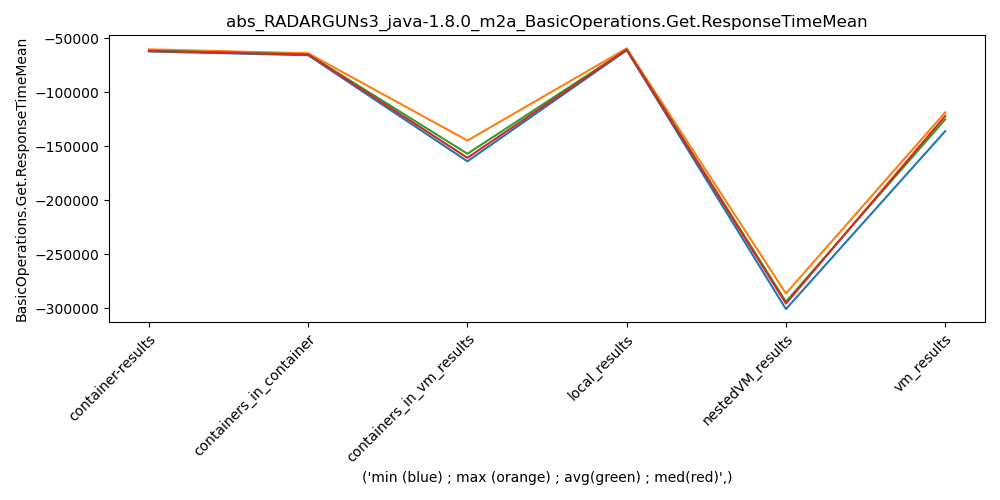
geomMean of all keys (benchmark meassured relativre accuracy)
{'MIN': [76723.39671295311, 76768.92014244184, 77223.17926827777, 76752.37255288886, 77246.37339576884], 'MAX': [76685.33666925311, 76732.64077597571, 77199.93139267065, 76716.72756458508, 77244.20608836818], 'AVG': [76700.92488525041, 76746.75461616898, 77221.21018857138, 76750.21487941906, 77277.04861164857], 'MED': [76704.90969094665, 76757.14509677957, 77215.30520348655, 76756.1279968505, 77331.82522810479]}
RADARGUNs3 java-1.8.0 geomMean where all runs of one jdk were made AVARAGE before processing
MIN 76723.39671295311 container-results
MIN 76768.92014244184 containers_in_container
MIN 77223.17926827777 containers_in_vm_results
MIN 76752.37255288886 local_results
MIN 77246.37339576884 vm_results
MAX 76685.33666925311 container-results
MAX 76732.64077597571 containers_in_container
MAX 77199.93139267065 containers_in_vm_results
MAX 76716.72756458508 local_results
MAX 77244.20608836818 vm_results
AVG 76700.92488525041 container-results
AVG 76746.75461616898 containers_in_container
AVG 77221.21018857138 containers_in_vm_results
AVG 76750.21487941906 local_results
AVG 77277.04861164857 vm_results
MED 76704.90969094665 container-results
MED 76757.14509677957 containers_in_container
MED 77215.30520348655 containers_in_vm_results
MED 76756.1279968505 local_results
MED 77331.82522810479 vm_results
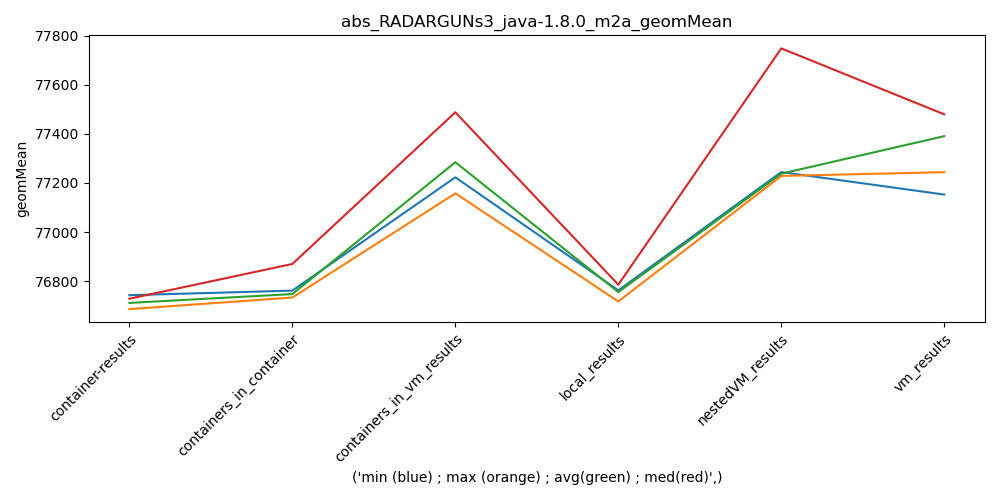
all runs of one jdk were made MEDIAN before processing
BasicOperations.Put.Throughput=
RADARGUNs3 java-1.8.0 BasicOperations.Put.Throughput= where all runs of one jdk were made MEDIAN before processing
MIN 23586.0 container-results
MIN 22297.0 containers_in_container
MIN 9033.0 containers_in_vm_results
MIN 24102.0 local_results
MIN 12089.0 vm_results
MAX 24143.0 container-results
MAX 22848.0 containers_in_container
MAX 9319.0 containers_in_vm_results
MAX 24458.0 local_results
MAX 13100.0 vm_results
AVG 23843.428571428572 container-results
AVG 22563.285714285714 containers_in_container
AVG 9206.142857142857 containers_in_vm_results
AVG 24211.6 local_results
AVG 12690.142857142857 vm_results
MED 23789.0 container-results
MED 22523.0 containers_in_container
MED 9258.0 containers_in_vm_results
MED 24160.0 local_results
MED 12748.0 vm_results

BasicOperations.Put.ResponseTimeMean
RADARGUNs3 java-1.8.0 BasicOperations.Put.ResponseTimeMean where all runs of one jdk were made MEDIAN before processing
MIN -250557.0 container-results
MIN -264451.0 containers_in_container
MIN -659325.0 containers_in_vm_results
MIN -245851.0 local_results
MIN -485660.0 vm_results
MAX -244938.0 container-results
MAX -258832.0 containers_in_container
MAX -639384.0 containers_in_vm_results
MAX -241563.0 local_results
MAX -446167.0 vm_results
AVG -247923.0 container-results
AVG -261880.57142857142 containers_in_container
AVG -648197.7142857143 containers_in_vm_results
AVG -244663.0 local_results
AVG -461843.4285714286 vm_results
MED -248729.0 container-results
MED -262551.0 containers_in_container
MED -644985.0 containers_in_vm_results
MED -245414.0 local_results
MED -457797.0 vm_results
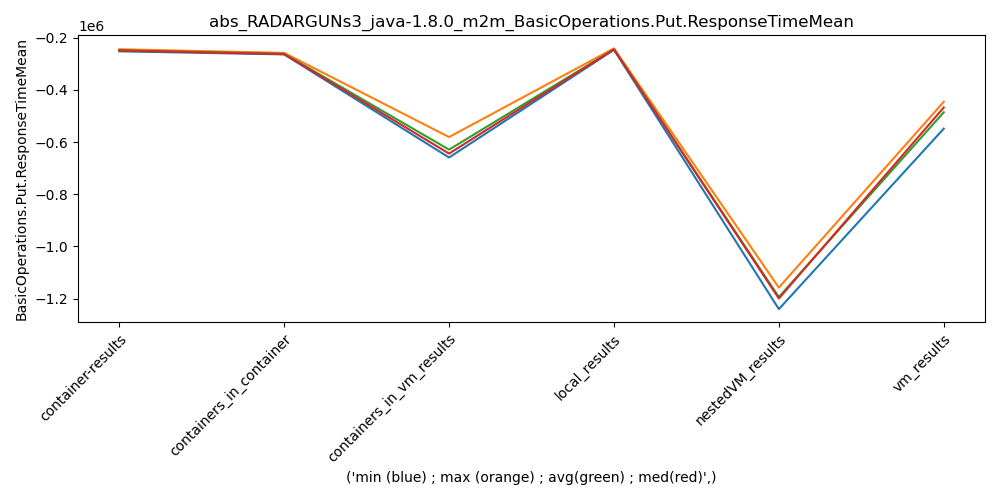
BasicOperations.Get.Throughput=
RADARGUNs3 java-1.8.0 BasicOperations.Get.Throughput= where all runs of one jdk were made MEDIAN before processing
MIN 94339.0 container-results
MIN 89164.0 containers_in_container
MIN 36140.0 containers_in_vm_results
MIN 96394.0 local_results
MIN 48351.0 vm_results
MAX 96570.0 container-results
MAX 91381.0 containers_in_container
MAX 37276.0 containers_in_vm_results
MAX 97812.0 local_results
MAX 52408.0 vm_results
AVG 95366.28571428571 container-results
AVG 90241.71428571429 containers_in_container
AVG 36825.28571428572 containers_in_vm_results
AVG 96839.2 local_results
AVG 50763.42857142857 vm_results
MED 95094.0 container-results
MED 90103.0 containers_in_container
MED 37065.0 containers_in_vm_results
MED 96664.0 local_results
MED 50990.0 vm_results
BasicOperations.Get.ResponseTimeMean
RADARGUNs3 java-1.8.0 BasicOperations.Get.ResponseTimeMean where all runs of one jdk were made MEDIAN before processing
MIN -62048.0 container-results
MIN -66032.0 containers_in_container
MIN -164728.0 containers_in_vm_results
MIN -60901.0 local_results
MIN -125297.0 vm_results
MAX -60613.0 container-results
MAX -64223.0 containers_in_container
MAX -159482.0 containers_in_vm_results
MAX -59702.0 local_results
MAX -116443.0 vm_results
AVG -61406.42857142857 container-results
AVG -65090.142857142855 containers_in_container
AVG -161791.57142857142 containers_in_vm_results
AVG -60506.4 local_results
AVG -119752.57142857143 vm_results
MED -61512.0 container-results
MED -65218.0 containers_in_container
MED -160810.0 containers_in_vm_results
MED -60615.0 local_results
MED -119490.0 vm_results

geomMean of all keys (benchmark meassured relativre accuracy)
{'MIN': [76691.1009889833, 76759.81344151664, 77165.25254470973, 76797.99322914492, 77226.65276559727], 'MAX': [76703.26542458827, 76754.37917779479, 77146.81715629507, 76640.45839152044, 77280.50089782229], 'AVG': [76704.97942340281, 76755.06539831837, 77218.57908733099, 76755.77719569395, 77259.03308355947], 'MED': [76701.50639594554, 76777.97619708513, 77238.87896712484, 76773.31333025919, 77220.55035964453]}
RADARGUNs3 java-1.8.0 geomMean where all runs of one jdk were made MEDIAN before processing
MIN 76691.1009889833 container-results
MIN 76759.81344151664 containers_in_container
MIN 77165.25254470973 containers_in_vm_results
MIN 76797.99322914492 local_results
MIN 77226.65276559727 vm_results
MAX 76703.26542458827 container-results
MAX 76754.37917779479 containers_in_container
MAX 77146.81715629507 containers_in_vm_results
MAX 76640.45839152044 local_results
MAX 77280.50089782229 vm_results
AVG 76704.97942340281 container-results
AVG 76755.06539831837 containers_in_container
AVG 77218.57908733099 containers_in_vm_results
AVG 76755.77719569395 local_results
AVG 77259.03308355947 vm_results
MED 76701.50639594554 container-results
MED 76777.97619708513 containers_in_container
MED 77238.87896712484 containers_in_vm_results
MED 76773.31333025919 local_results
MED 77220.55035964453 vm_results
geomMean of all metrics from geomMean of all keys
{'MIN': [76762.02757289277, 76773.28116455395, 77227.27737433065, 76783.51464452501, 77246.2741357629], 'MAX': [76684.30415155132, 76719.415410165, 77184.11782176784, 76676.92892459703, 77248.64059954096], 'AVG': [76702.27637415413, 76749.52477689573, 77220.41432752897, 76752.06894005493, 77271.04296889796], 'MED': [76705.23791116972, 76755.59367407985, 77223.25696540301, 76753.42776721437, 77256.63911249854]}
RADARGUNs3 java-1.8.0 geomMean geomMean
MIN 76762.02757289277 container-results
MIN 76773.28116455395 containers_in_container
MIN 77227.27737433065 containers_in_vm_results
MIN 76783.51464452501 local_results
MIN 77246.2741357629 vm_results
MAX 76684.30415155132 container-results
MAX 76719.415410165 containers_in_container
MAX 77184.11782176784 containers_in_vm_results
MAX 76676.92892459703 local_results
MAX 77248.64059954096 vm_results
AVG 76702.27637415413 container-results
AVG 76749.52477689573 containers_in_container
AVG 77220.41432752897 containers_in_vm_results
AVG 76752.06894005493 local_results
AVG 77271.04296889796 vm_results
MED 76705.23791116972 container-results
MED 76755.59367407985 containers_in_container
MED 77223.25696540301 containers_in_vm_results
MED 76753.42776721437 local_results
MED 77256.63911249854 vm_results
java-11
all runs of one jdk are treated as INDIVIDUAL items
BasicOperations.Put.Throughput=
RADARGUNs3 java-11 BasicOperations.Put.Throughput= where all runs of one jdk are treated as INDIVIDUAL items
MIN 22238.0 container-results
MIN 21119.0 containers_in_container
MIN 8803.0 containers_in_vm_results
MIN 22588.0 local_results
MIN 11268.0 vm_results
MAX 23021.0 container-results
MAX 21947.0 containers_in_container
MAX 9768.0 containers_in_vm_results
MAX 23326.0 local_results
MAX 12570.0 vm_results
AVG 22655.714285714286 container-results
AVG 21561.22857142857 containers_in_container
AVG 9206.171428571428 containers_in_vm_results
AVG 22957.97142857143 local_results
AVG 12035.971428571429 vm_results
MED 22662.0 container-results
MED 21598.0 containers_in_container
MED 9106.0 containers_in_vm_results
MED 23007.0 local_results
MED 12096.0 vm_results

BasicOperations.Put.ResponseTimeMean
RADARGUNs3 java-11 BasicOperations.Put.ResponseTimeMean where all runs of one jdk are treated as INDIVIDUAL items
MIN -265946.0 container-results
MIN -278152.0 containers_in_container
MIN -675993.0 containers_in_vm_results
MIN -262271.0 local_results
MIN -519494.0 vm_results
MAX -257205.0 container-results
MAX -268984.0 containers_in_container
MAX -610465.0 containers_in_vm_results
MAX -254120.0 local_results
MAX -463829.0 vm_results
AVG -260821.54285714286 container-results
AVG -273771.4285714286 containers_in_container
AVG -649256.4857142858 containers_in_vm_results
AVG -258074.7142857143 local_results
AVG -486980.6 vm_results
MED -260282.0 container-results
MED -273220.0 containers_in_container
MED -657105.0 containers_in_vm_results
MED -257664.0 local_results
MED -485403.0 vm_results

BasicOperations.Get.Throughput=
RADARGUNs3 java-11 BasicOperations.Get.Throughput= where all runs of one jdk are treated as INDIVIDUAL items
MIN 88949.0 container-results
MIN 84507.0 containers_in_container
MIN 35188.0 containers_in_vm_results
MIN 90368.0 local_results
MIN 45073.0 vm_results
MAX 92110.0 container-results
MAX 87827.0 containers_in_container
MAX 39074.0 containers_in_vm_results
MAX 93284.0 local_results
MAX 50291.0 vm_results
AVG 90626.68571428572 container-results
AVG 86243.31428571428 containers_in_container
AVG 36823.74285714285 containers_in_vm_results
AVG 91831.94285714286 local_results
AVG 48142.142857142855 vm_results
MED 90656.0 container-results
MED 86409.0 containers_in_container
MED 36444.0 containers_in_vm_results
MED 92024.0 local_results
MED 48362.0 vm_results
BasicOperations.Get.ResponseTimeMean
RADARGUNs3 java-11 BasicOperations.Get.ResponseTimeMean where all runs of one jdk are treated as INDIVIDUAL items
MIN -65879.0 container-results
MIN -69588.0 containers_in_container
MIN -169475.0 containers_in_vm_results
MIN -64919.0 local_results
MIN -134533.0 vm_results
MAX -63070.0 container-results
MAX -66575.0 containers_in_container
MAX -151597.0 containers_in_vm_results
MAX -62633.0 local_results
MAX -121129.0 vm_results
AVG -64488.08571428571 container-results
AVG -67910.6 containers_in_container
AVG -161220.22857142857 containers_in_vm_results
AVG -63670.91428571429 local_results
AVG -126061.62857142858 vm_results
MED -64480.0 container-results
MED -67738.0 containers_in_container
MED -162339.0 containers_in_vm_results
MED -63584.0 local_results
MED -125151.0 vm_results

geomMean of all keys (benchmark meassured relativre accuracy)
{'MIN': [76726.31035469692, 76664.73593534181, 77182.40048405743, 76780.9773242214, 77186.82313322912], 'MAX': [76583.16332887305, 76649.65574799447, 77092.33942863005, 76713.60165489539, 77198.32810453196], 'AVG': [76659.18548003846, 76679.83289878957, 77181.0538094777, 76719.09237473448, 77228.08836068654], 'MED': [76628.6170997089, 76661.85842982073, 77135.2391840138, 76743.33572462767, 77209.49337935193]}
RADARGUNs3 java-11 geomMean where all runs of one jdk are treated as INDIVIDUAL items
MIN 76726.31035469692 container-results
MIN 76664.73593534181 containers_in_container
MIN 77182.40048405743 containers_in_vm_results
MIN 76780.9773242214 local_results
MIN 77186.82313322912 vm_results
MAX 76583.16332887305 container-results
MAX 76649.65574799447 containers_in_container
MAX 77092.33942863005 containers_in_vm_results
MAX 76713.60165489539 local_results
MAX 77198.32810453196 vm_results
AVG 76659.18548003846 container-results
AVG 76679.83289878957 containers_in_container
AVG 77181.0538094777 containers_in_vm_results
AVG 76719.09237473448 local_results
AVG 77228.08836068654 vm_results
MED 76628.6170997089 container-results
MED 76661.85842982073 containers_in_container
MED 77135.2391840138 containers_in_vm_results
MED 76743.33572462767 local_results
MED 77209.49337935193 vm_results
all runs of one jdk were made AVARAGE before processing
BasicOperations.Put.Throughput=
RADARGUNs3 java-11 BasicOperations.Put.Throughput= where all runs of one jdk were made AVARAGE before processing
MIN 22436.2 container-results
MIN 21355.2 containers_in_container
MIN 8972.8 containers_in_vm_results
MIN 22647.6 local_results
MIN 11644.8 vm_results
MAX 22856.4 container-results
MAX 21711.8 containers_in_container
MAX 9446.4 containers_in_vm_results
MAX 23121.8 local_results
MAX 12287.8 vm_results
AVG 22655.714285714286 container-results
AVG 21561.22857142857 containers_in_container
AVG 9206.171428571428 containers_in_vm_results
AVG 22957.971428571425 local_results
AVG 12035.971428571429 vm_results
MED 22704.4 container-results
MED 21615.8 containers_in_container
MED 9251.6 containers_in_vm_results
MED 22999.8 local_results
MED 12025.4 vm_results
BasicOperations.Put.ResponseTimeMean
RADARGUNs3 java-11 BasicOperations.Put.ResponseTimeMean where all runs of one jdk were made AVARAGE before processing
MIN -263597.4 container-results
MIN -276342.2 containers_in_container
MIN -665989.4 containers_in_vm_results
MIN -261464.2 local_results
MIN -502570.0 vm_results
MAX -259027.8 container-results
MAX -272138.6 containers_in_container
MAX -632674.4 containers_in_vm_results
MAX -256592.2 local_results
MAX -476014.0 vm_results
AVG -260821.5428571429 container-results
AVG -273771.4285714286 containers_in_container
AVG -649256.4857142858 containers_in_vm_results
AVG -258074.71428571426 local_results
AVG -486980.60000000003 vm_results
MED -260447.0 container-results
MED -273084.2 containers_in_container
MED -644639.8 containers_in_vm_results
MED -257406.0 local_results
MED -487380.6 vm_results
BasicOperations.Get.Throughput=
RADARGUNs3 java-11 BasicOperations.Get.Throughput= where all runs of one jdk were made AVARAGE before processing
MIN 89725.8 container-results
MIN 85425.4 containers_in_container
MIN 35880.6 containers_in_vm_results
MIN 90610.6 local_results
MIN 46586.4 vm_results
MAX 91429.8 container-results
MAX 86841.2 containers_in_container
MAX 37796.0 containers_in_vm_results
MAX 92486.8 local_results
MAX 49142.8 vm_results
AVG 90626.68571428572 container-results
AVG 86243.31428571428 containers_in_container
AVG 36823.74285714286 containers_in_vm_results
AVG 91831.94285714286 local_results
AVG 48142.142857142855 vm_results
MED 90830.6 container-results
MED 86449.0 containers_in_container
MED 37008.6 containers_in_vm_results
MED 92005.2 local_results
MED 48095.4 vm_results
BasicOperations.Get.ResponseTimeMean
RADARGUNs3 java-11 BasicOperations.Get.ResponseTimeMean where all runs of one jdk were made AVARAGE before processing
MIN -65356.2 container-results
MIN -68676.2 containers_in_container
MIN -165422.6 containers_in_vm_results
MIN -64557.4 local_results
MIN -130387.8 vm_results
MAX -63673.6 container-results
MAX -67335.6 containers_in_container
MAX -156860.2 containers_in_vm_results
MAX -63151.4 local_results
MAX -123572.8 vm_results
AVG -64488.08571428571 container-results
AVG -67910.59999999999 containers_in_container
AVG -161220.2285714286 containers_in_vm_results
AVG -63670.91428571429 local_results
AVG -126061.62857142859 vm_results
MED -64286.2 container-results
MED -67818.0 containers_in_container
MED -160620.4 containers_in_vm_results
MED -63607.8 local_results
MED -126142.0 vm_results
geomMean of all keys (benchmark meassured relativre accuracy)
{'MIN': [76740.32591891795, 76707.18281088912, 77172.48072285118, 76716.69132821243, 77215.80009296804], 'MAX': [76621.4461986813, 76667.99954428716, 77152.73028755173, 76724.12720546946, 77200.33078880241], 'AVG': [76659.18548003846, 76679.83289878957, 77181.0538094777, 76719.09237473446, 77228.08836068654], 'MED': [76655.7666942718, 76699.6195485381, 77163.04023636493, 76721.37338427466, 77220.52603295173]}
RADARGUNs3 java-11 geomMean where all runs of one jdk were made AVARAGE before processing
MIN 76740.32591891795 container-results
MIN 76707.18281088912 containers_in_container
MIN 77172.48072285118 containers_in_vm_results
MIN 76716.69132821243 local_results
MIN 77215.80009296804 vm_results
MAX 76621.4461986813 container-results
MAX 76667.99954428716 containers_in_container
MAX 77152.73028755173 containers_in_vm_results
MAX 76724.12720546946 local_results
MAX 77200.33078880241 vm_results
AVG 76659.18548003846 container-results
AVG 76679.83289878957 containers_in_container
AVG 77181.0538094777 containers_in_vm_results
AVG 76719.09237473446 local_results
AVG 77228.08836068654 vm_results
MED 76655.7666942718 container-results
MED 76699.6195485381 containers_in_container
MED 77163.04023636493 containers_in_vm_results
MED 76721.37338427466 local_results
MED 77220.52603295173 vm_results
all runs of one jdk were made MEDIAN before processing
BasicOperations.Put.Throughput=
RADARGUNs3 java-11 BasicOperations.Put.Throughput= where all runs of one jdk were made MEDIAN before processing
MIN 22370.0 container-results
MIN 21378.0 containers_in_container
MIN 8935.0 containers_in_vm_results
MIN 22658.0 local_results
MIN 11584.0 vm_results
MAX 22881.0 container-results
MAX 21742.0 containers_in_container
MAX 9408.0 containers_in_vm_results
MAX 23128.0 local_results
MAX 12306.0 vm_results
AVG 22643.0 container-results
AVG 21566.714285714286 containers_in_container
AVG 9211.142857142857 containers_in_vm_results
AVG 22963.14285714286 local_results
AVG 12048.714285714286 vm_results
MED 22676.0 container-results
MED 21617.0 containers_in_container
MED 9320.0 containers_in_vm_results
MED 23023.0 local_results
MED 12065.0 vm_results
BasicOperations.Put.ResponseTimeMean
RADARGUNs3 java-11 BasicOperations.Put.ResponseTimeMean where all runs of one jdk were made MEDIAN before processing
MIN -263698.0 container-results
MIN -276552.0 containers_in_container
MIN -670610.0 containers_in_vm_results
MIN -261298.0 local_results
MIN -505390.0 vm_results
MAX -258743.0 container-results
MAX -271479.0 containers_in_container
MAX -633992.0 containers_in_vm_results
MAX -256678.0 local_results
MAX -478465.0 vm_results
AVG -260702.85714285713 container-results
AVG -273582.14285714284 containers_in_container
AVG -648700.7142857143 containers_in_vm_results
AVG -258170.14285714287 local_results
AVG -486692.5714285714 vm_results
MED -259772.0 container-results
MED -272940.0 containers_in_container
MED -640370.0 containers_in_vm_results
MED -257664.0 local_results
MED -485815.0 vm_results

BasicOperations.Get.Throughput=
RADARGUNs3 java-11 BasicOperations.Get.Throughput= where all runs of one jdk were made MEDIAN before processing
MIN 89457.0 container-results
MIN 85469.0 containers_in_container
MIN 35749.0 containers_in_vm_results
MIN 90621.0 local_results
MIN 46355.0 vm_results
MAX 91517.0 container-results
MAX 86968.0 containers_in_container
MAX 37621.0 containers_in_vm_results
MAX 92530.0 local_results
MAX 49229.0 vm_results
AVG 90588.14285714286 container-results
AVG 86260.57142857143 containers_in_container
AVG 36836.42857142857 containers_in_vm_results
AVG 91848.57142857143 local_results
AVG 48195.57142857143 vm_results
MED 90738.0 container-results
MED 86450.0 containers_in_container
MED 37259.0 containers_in_vm_results
MED 92095.0 local_results
MED 48253.0 vm_results
BasicOperations.Get.ResponseTimeMean
RADARGUNs3 java-11 BasicOperations.Get.ResponseTimeMean where all runs of one jdk were made MEDIAN before processing
MIN -65364.0 container-results
MIN -68670.0 containers_in_container
MIN -165606.0 containers_in_vm_results
MIN -64628.0 local_results
MIN -130740.0 vm_results
MAX -63635.0 container-results
MAX -67316.0 containers_in_container
MAX -157640.0 containers_in_vm_results
MAX -63244.0 local_results
MAX -122880.0 vm_results
AVG -64502.57142857143 container-results
AVG -67901.14285714286 containers_in_container
AVG -161131.57142857142 containers_in_vm_results
AVG -63632.57142857143 local_results
AVG -125810.28571428571 vm_results
MED -64453.0 container-results
MED -67717.0 containers_in_container
MED -159253.0 containers_in_vm_results
MED -63451.0 local_results
MED -125376.0 vm_results

geomMean of all keys (benchmark meassured relativre accuracy)
{'MIN': [76635.7554283353, 76750.26551886329, 77174.91091884376, 76736.46807136686, 77178.71880139936], 'MAX': [76627.62381357884, 76670.51477498183, 77120.4334823295, 76772.76008681594, 77253.35075906722], 'AVG': [76635.86002253678, 76672.61695307016, 77170.97964459455, 76722.42221666341, 77219.97851967608], 'MED': [76612.17312276403, 76662.2090190518, 77142.09458850638, 76731.29808173486, 77167.46683088309]}
RADARGUNs3 java-11 geomMean where all runs of one jdk were made MEDIAN before processing
MIN 76635.7554283353 container-results
MIN 76750.26551886329 containers_in_container
MIN 77174.91091884376 containers_in_vm_results
MIN 76736.46807136686 local_results
MIN 77178.71880139936 vm_results
MAX 76627.62381357884 container-results
MAX 76670.51477498183 containers_in_container
MAX 77120.4334823295 containers_in_vm_results
MAX 76772.76008681594 local_results
MAX 77253.35075906722 vm_results
AVG 76635.86002253678 container-results
AVG 76672.61695307016 containers_in_container
AVG 77170.97964459455 containers_in_vm_results
AVG 76722.42221666341 local_results
AVG 77219.97851967608 vm_results
MED 76612.17312276403 container-results
MED 76662.2090190518 containers_in_container
MED 77142.09458850638 containers_in_vm_results
MED 76731.29808173486 local_results
MED 77167.46683088309 vm_results
geomMean of all metrics from geomMean of all keys
{'MIN': [76700.78322807867, 76707.38680770439, 77176.5972597883, 76744.70753285135, 77193.77903483856], 'MAX': [76610.74192283643, 76662.72279198465, 77121.83045241839, 76736.8253234277, 77217.33234786103], 'AVG': [76651.40953881023, 76677.42750809515, 77177.69560840107, 76720.2023059861, 77225.38498571893], 'MED': [76632.1835308852, 76674.56028538746, 77146.79042998042, 76732.00187142665, 77199.15869604197]}
RADARGUNs3 java-11 geomMean geomMean
MIN 76700.78322807867 container-results
MIN 76707.38680770439 containers_in_container
MIN 77176.5972597883 containers_in_vm_results
MIN 76744.70753285135 local_results
MIN 77193.77903483856 vm_results
MAX 76610.74192283643 container-results
MAX 76662.72279198465 containers_in_container
MAX 77121.83045241839 containers_in_vm_results
MAX 76736.8253234277 local_results
MAX 77217.33234786103 vm_results
AVG 76651.40953881023 container-results
AVG 76677.42750809515 containers_in_container
AVG 77177.69560840107 containers_in_vm_results
AVG 76720.2023059861 local_results
AVG 77225.38498571893 vm_results
MED 76632.1835308852 container-results
MED 76674.56028538746 containers_in_container
MED 77146.79042998042 containers_in_vm_results
MED 76732.00187142665 local_results
MED 77199.15869604197 vm_results
java-17
all runs of one jdk are treated as INDIVIDUAL items
BasicOperations.Put.Throughput=
RADARGUNs3 java-17 BasicOperations.Put.Throughput= where all runs of one jdk are treated as INDIVIDUAL items
MIN 21927.0 container-results
MIN 20898.0 containers_in_container
MIN 9088.0 containers_in_vm_results
MIN 21326.0 local_results
MIN 11791.0 vm_results
MAX 22261.0 container-results
MAX 21275.0 containers_in_container
MAX 9721.0 containers_in_vm_results
MAX 21908.0 local_results
MAX 13360.0 vm_results
AVG 22149.04 container-results
AVG 21068.84 containers_in_container
AVG 9412.95652173913 containers_in_vm_results
AVG 21630.6 local_results
AVG 12685.6 vm_results
MED 22148.0 container-results
MED 21076.0 containers_in_container
MED 9418.0 containers_in_vm_results
MED 21627.0 local_results
MED 12700.0 vm_results
BasicOperations.Put.ResponseTimeMean
RADARGUNs3 java-17 BasicOperations.Put.ResponseTimeMean where all runs of one jdk are treated as INDIVIDUAL items
MIN -273808.0 container-results
MIN -286594.0 containers_in_container
MIN -653598.0 containers_in_vm_results
MIN -282502.0 local_results
MIN -502061.0 vm_results
MAX -269204.0 container-results
MAX -282447.0 containers_in_container
MAX -611687.0 containers_in_vm_results
MAX -275950.0 local_results
MAX -437027.0 vm_results
AVG -270341.4 container-results
AVG -284582.24 containers_in_container
AVG -632657.7391304348 containers_in_vm_results
AVG -278589.56 local_results
AVG -462500.76 vm_results
MED -270193.0 container-results
MED -284616.0 containers_in_container
MED -631430.0 containers_in_vm_results
MED -278609.0 local_results
MED -459697.0 vm_results
BasicOperations.Get.Throughput=
RADARGUNs3 java-17 BasicOperations.Get.Throughput= where all runs of one jdk are treated as INDIVIDUAL items
MIN 87739.0 container-results
MIN 83610.0 containers_in_container
MIN 36360.0 containers_in_vm_results
MIN 85316.0 local_results
MIN 47183.0 vm_results
MAX 89075.0 container-results
MAX 85090.0 containers_in_container
MAX 38916.0 containers_in_vm_results
MAX 87637.0 local_results
MAX 53433.0 vm_results
AVG 88600.68 container-results
AVG 84277.2 containers_in_container
AVG 37655.565217391304 containers_in_vm_results
AVG 86522.2 local_results
AVG 50744.72 vm_results
MED 88572.0 container-results
MED 84291.0 containers_in_container
MED 37667.0 containers_in_vm_results
MED 86481.0 local_results
MED 50783.0 vm_results
BasicOperations.Get.ResponseTimeMean
RADARGUNs3 java-17 BasicOperations.Get.ResponseTimeMean where all runs of one jdk are treated as INDIVIDUAL items
MIN -65827.0 container-results
MIN -69518.0 containers_in_container
MIN -164023.0 containers_in_vm_results
MIN -67748.0 local_results
MIN -127082.0 vm_results
MAX -64655.0 container-results
MAX -67277.0 containers_in_container
MAX -152708.0 containers_in_vm_results
MAX -65697.0 local_results
MAX -113370.0 vm_results
AVG -65278.08 container-results
AVG -68667.48 containers_in_container
AVG -157856.04347826086 containers_in_vm_results
AVG -66774.92 local_results
AVG -119364.32 vm_results
MED -65317.0 container-results
MED -68692.0 containers_in_container
MED -158024.0 containers_in_vm_results
MED -66751.0 local_results
MED -119789.0 vm_results

geomMean of all keys (benchmark meassured relativre accuracy)
{'MIN': [76737.1248478461, 76812.48719893426, 77148.39841175544, 76818.26145516893, 77187.00316838645], 'MAX': [76647.15359642272, 76583.97761846537, 77100.56213062978, 76809.78382448865, 77117.97338316208], 'AVG': [76712.82448541698, 76749.82724920352, 77134.0820511592, 76814.56640772564, 77209.76189891911], 'MED': [76706.61573327788, 76768.61704279586, 77133.3147384385, 76796.68526357184, 77197.39950027659]}
RADARGUNs3 java-17 geomMean where all runs of one jdk are treated as INDIVIDUAL items
MIN 76737.1248478461 container-results
MIN 76812.48719893426 containers_in_container
MIN 77148.39841175544 containers_in_vm_results
MIN 76818.26145516893 local_results
MIN 77187.00316838645 vm_results
MAX 76647.15359642272 container-results
MAX 76583.97761846537 containers_in_container
MAX 77100.56213062978 containers_in_vm_results
MAX 76809.78382448865 local_results
MAX 77117.97338316208 vm_results
AVG 76712.82448541698 container-results
AVG 76749.82724920352 containers_in_container
AVG 77134.0820511592 containers_in_vm_results
AVG 76814.56640772564 local_results
AVG 77209.76189891911 vm_results
MED 76706.61573327788 container-results
MED 76768.61704279586 containers_in_container
MED 77133.3147384385 containers_in_vm_results
MED 76796.68526357184 local_results
MED 77197.39950027659 vm_results
all runs of one jdk were made AVARAGE before processing
BasicOperations.Put.Throughput=
RADARGUNs3 java-17 BasicOperations.Put.Throughput= where all runs of one jdk were made AVARAGE before processing
MIN 22095.6 container-results
MIN 21041.6 containers_in_container
MIN 9281.6 containers_in_vm_results
MIN 21538.4 local_results
MIN 12393.4 vm_results
MAX 22203.8 container-results
MAX 21094.0 containers_in_container
MAX 9568.333333333334 containers_in_vm_results
MAX 21812.4 local_results
MAX 12977.6 vm_results
AVG 22149.04 container-results
AVG 21068.840000000004 containers_in_container
AVG 9425.386666666667 containers_in_vm_results
AVG 21630.6 local_results
AVG 12685.599999999999 vm_results
MED 22147.0 container-results
MED 21070.2 containers_in_container
MED 9433.0 containers_in_vm_results
MED 21589.4 local_results
MED 12763.6 vm_results
BasicOperations.Put.ResponseTimeMean
RADARGUNs3 java-17 BasicOperations.Put.ResponseTimeMean where all runs of one jdk were made AVARAGE before processing
MIN -271011.4 container-results
MIN -285377.6 containers_in_container
MIN -641453.4 containers_in_vm_results
MIN -279676.2 local_results
MIN -474440.2 vm_results
MAX -269823.2 container-results
MAX -284084.0 containers_in_container
MAX -622153.6666666666 containers_in_vm_results
MAX -276822.2 local_results
MAX -450710.6 vm_results
AVG -270341.4 container-results
AVG -284582.24000000005 containers_in_container
AVG -631817.4133333333 containers_in_vm_results
AVG -278589.56 local_results
AVG -462500.76000000007 vm_results
MED -270317.2 container-results
MED -284264.2 containers_in_container
MED -630546.0 containers_in_vm_results
MED -278815.2 local_results
MED -459858.0 vm_results

BasicOperations.Get.Throughput=
RADARGUNs3 java-17 BasicOperations.Get.Throughput= where all runs of one jdk were made AVARAGE before processing
MIN 88372.6 container-results
MIN 84178.2 containers_in_container
MIN 37131.6 containers_in_vm_results
MIN 86153.2 local_results
MIN 49573.0 vm_results
MAX 88817.4 container-results
MAX 84392.2 containers_in_container
MAX 38282.666666666664 containers_in_vm_results
MAX 87261.0 local_results
MAX 51910.6 vm_results
AVG 88600.68000000001 container-results
AVG 84277.2 containers_in_container
AVG 37705.73333333333 containers_in_vm_results
AVG 86522.2 local_results
AVG 50744.72 vm_results
MED 88586.6 container-results
MED 84274.8 containers_in_container
MED 37738.8 containers_in_vm_results
MED 86348.4 local_results
MED 51058.0 vm_results
BasicOperations.Get.ResponseTimeMean
RADARGUNs3 java-17 BasicOperations.Get.ResponseTimeMean where all runs of one jdk were made AVARAGE before processing
MIN -65443.6 container-results
MIN -68789.6 containers_in_container
MIN -160134.8 containers_in_vm_results
MIN -67080.6 local_results
MIN -121934.2 vm_results
MAX -65064.2 container-results
MAX -68509.2 containers_in_container
MAX -155344.66666666666 containers_in_vm_results
MAX -66045.2 local_results
MAX -116948.6 vm_results
AVG -65278.079999999994 container-results
AVG -68667.48000000001 containers_in_container
AVG -157655.13333333336 containers_in_vm_results
AVG -66774.92 local_results
AVG -119364.31999999999 vm_results
MED -65328.8 container-results
MED -68720.8 containers_in_container
MED -157583.4 containers_in_vm_results
MED -66905.2 local_results
MED -118419.4 vm_results
geomMean of all keys (benchmark meassured relativre accuracy)
{'MIN': [76713.10179440667, 76790.10566211876, 77135.50659881935, 76812.92886329006, 77212.15441922769], 'MAX': [76707.29822013405, 76720.9956348683, 77136.17913912608, 76805.34664486645, 77194.40213897866], 'AVG': [76712.82448541698, 76749.82724920352, 77135.01506970843, 76814.56640772564, 77209.76189891911], 'MED': [76721.18905668546, 76743.95748903495, 77119.87032343718, 76792.32147628964, 77182.86523225738]}
RADARGUNs3 java-17 geomMean where all runs of one jdk were made AVARAGE before processing
MIN 76713.10179440667 container-results
MIN 76790.10566211876 containers_in_container
MIN 77135.50659881935 containers_in_vm_results
MIN 76812.92886329006 local_results
MIN 77212.15441922769 vm_results
MAX 76707.29822013405 container-results
MAX 76720.9956348683 containers_in_container
MAX 77136.17913912608 containers_in_vm_results
MAX 76805.34664486645 local_results
MAX 77194.40213897866 vm_results
AVG 76712.82448541698 container-results
AVG 76749.82724920352 containers_in_container
AVG 77135.01506970843 containers_in_vm_results
AVG 76814.56640772564 local_results
AVG 77209.76189891911 vm_results
MED 76721.18905668546 container-results
MED 76743.95748903495 containers_in_container
MED 77119.87032343718 containers_in_vm_results
MED 76792.32147628964 local_results
MED 77182.86523225738 vm_results

all runs of one jdk were made MEDIAN before processing
BasicOperations.Put.Throughput=
RADARGUNs3 java-17 BasicOperations.Put.Throughput= where all runs of one jdk were made MEDIAN before processing
MIN 22107.0 container-results
MIN 21035.0 containers_in_container
MIN 9310.0 containers_in_vm_results
MIN 21502.0 local_results
MIN 12383.0 vm_results
MAX 22212.0 container-results
MAX 21120.0 containers_in_container
MAX 9549.0 containers_in_vm_results
MAX 21815.0 local_results
MAX 13086.0 vm_results
AVG 22149.4 container-results
AVG 21074.8 containers_in_container
AVG 9438.8 containers_in_vm_results
AVG 21625.4 local_results
AVG 12750.8 vm_results
MED 22131.0 container-results
MED 21076.0 containers_in_container
MED 9470.0 containers_in_vm_results
MED 21617.0 local_results
MED 12838.0 vm_results
BasicOperations.Put.ResponseTimeMean
RADARGUNs3 java-17 BasicOperations.Put.ResponseTimeMean where all runs of one jdk were made MEDIAN before processing
MIN -270718.0 container-results
MIN -285257.0 containers_in_container
MIN -638986.0 containers_in_vm_results
MIN -279819.0 local_results
MIN -474756.0 vm_results
MAX -269742.0 container-results
MAX -283694.0 containers_in_container
MAX -623482.0 containers_in_vm_results
MAX -276471.0 local_results
MAX -446584.0 vm_results
AVG -270274.8 container-results
AVG -284390.4 containers_in_container
AVG -630447.6 containers_in_vm_results
AVG -278613.6 local_results
AVG -459429.0 vm_results
MED -270247.0 container-results
MED -284592.0 containers_in_container
MED -629741.0 containers_in_vm_results
MED -278609.0 local_results
MED -457194.0 vm_results
BasicOperations.Get.Throughput=
RADARGUNs3 java-17 BasicOperations.Get.Throughput= where all runs of one jdk were made MEDIAN before processing
MIN 88380.0 container-results
MIN 84133.0 containers_in_container
MIN 37238.0 containers_in_vm_results
MIN 86045.0 local_results
MIN 49540.0 vm_results
MAX 88825.0 container-results
MAX 84515.0 containers_in_container
MAX 38172.0 containers_in_vm_results
MAX 87274.0 local_results
MAX 52328.0 vm_results
AVG 88597.6 container-results
AVG 84303.2 containers_in_container
AVG 37752.8 containers_in_vm_results
AVG 86515.4 local_results
AVG 51017.2 vm_results
MED 88568.0 container-results
MED 84320.0 containers_in_container
MED 37887.0 containers_in_vm_results
MED 86473.0 local_results
MED 51400.0 vm_results

BasicOperations.Get.ResponseTimeMean
RADARGUNs3 java-17 BasicOperations.Get.ResponseTimeMean where all runs of one jdk were made MEDIAN before processing
MIN -65751.0 container-results
MIN -68914.0 containers_in_container
MIN -159645.0 containers_in_vm_results
MIN -67162.0 local_results
MIN -121685.0 vm_results
MAX -64979.0 container-results
MAX -68449.0 containers_in_container
MAX -155328.0 containers_in_vm_results
MAX -66021.0 local_results
MAX -116458.0 vm_results
AVG -65339.2 container-results
AVG -68706.4 containers_in_container
AVG -157455.6 containers_in_vm_results
AVG -66742.8 local_results
AVG -118834.4 vm_results
MED -65357.0 container-results
MED -68696.0 containers_in_container
MED -156572.0 containers_in_vm_results
MED -66829.0 local_results
MED -117691.0 vm_results

geomMean of all keys (benchmark meassured relativre accuracy)
{'MIN': [76793.74121425783, 76800.34397231111, 77116.20926764832, 76789.40973442393, 77156.46928704646], 'MAX': [76685.12316111698, 76729.3010388419, 77080.4283898554, 76779.08727191742, 77250.8709889987], 'AVG': [76725.6935379382, 76759.10669070964, 77120.22084157732, 76800.85870310722, 77197.5751621847], 'MED': [76706.59708052299, 76774.71825231012, 77122.13901353994, 76808.45213839877, 77192.67062202671]}
RADARGUNs3 java-17 geomMean where all runs of one jdk were made MEDIAN before processing
MIN 76793.74121425783 container-results
MIN 76800.34397231111 containers_in_container
MIN 77116.20926764832 containers_in_vm_results
MIN 76789.40973442393 local_results
MIN 77156.46928704646 vm_results
MAX 76685.12316111698 container-results
MAX 76729.3010388419 containers_in_container
MAX 77080.4283898554 containers_in_vm_results
MAX 76779.08727191742 local_results
MAX 77250.8709889987 vm_results
AVG 76725.6935379382 container-results
AVG 76759.10669070964 containers_in_container
AVG 77120.22084157732 containers_in_vm_results
AVG 76800.85870310722 local_results
AVG 77197.5751621847 vm_results
MED 76706.59708052299 container-results
MED 76774.71825231012 containers_in_container
MED 77122.13901353994 containers_in_vm_results
MED 76808.45213839877 local_results
MED 77192.67062202671 vm_results
geomMean of all metrics from geomMean of all keys
{'MIN': [76747.98184131183, 76800.97839960633, 77133.37029184146, 76806.86566145315, 77185.20559988711], 'MAX': [76679.85430399857, 76678.06246547021, 77105.7197745463, 76798.07138562566, 77187.72962404936], 'AVG': [76717.11392973931, 76752.92027172151, 77129.77235746961, 76809.99690102963, 77205.69943959481], 'MED': [76711.46698216096, 76762.4297761143, 77125.1078012698, 76799.15265726972, 77190.97821418691]}
RADARGUNs3 java-17 geomMean geomMean
MIN 76747.98184131183 container-results
MIN 76800.97839960633 containers_in_container
MIN 77133.37029184146 containers_in_vm_results
MIN 76806.86566145315 local_results
MIN 77185.20559988711 vm_results
MAX 76679.85430399857 container-results
MAX 76678.06246547021 containers_in_container
MAX 77105.7197745463 containers_in_vm_results
MAX 76798.07138562566 local_results
MAX 77187.72962404936 vm_results
AVG 76717.11392973931 container-results
AVG 76752.92027172151 containers_in_container
AVG 77129.77235746961 containers_in_vm_results
AVG 76809.99690102963 local_results
AVG 77205.69943959481 vm_results
MED 76711.46698216096 container-results
MED 76762.4297761143 containers_in_container
MED 77125.1078012698 containers_in_vm_results
MED 76799.15265726972 local_results
MED 77190.97821418691 vm_results
geomMean of all benchamrks from geomMean of all metrics and all keys
{'MIN': [4610.5559868638475, 4611.619964592573, 4630.465626773954, 4612.422864944942, 4631.785909263997], 'MAX': [4607.012144261297, 4608.2938446597345, 4628.582055335354, 4610.570986393118, 4632.212525615427], 'AVG': [4608.453012151641, 4610.0913845821115, 4630.325224726592, 4611.629350234898, 4632.938705975358], 'MED': [4608.1236860762965, 4610.282208146721, 4629.834217190767, 4611.664282798034, 4632.108577861745]}
RADARGUNs3 geomMean geomMean geomMean
MIN 4610.5559868638475 container-results
MIN 4611.619964592573 containers_in_container
MIN 4630.465626773954 containers_in_vm_results
MIN 4612.422864944942 local_results
MIN 4631.785909263997 vm_results
MAX 4607.012144261297 container-results
MAX 4608.2938446597345 containers_in_container
MAX 4628.582055335354 containers_in_vm_results
MAX 4610.570986393118 local_results
MAX 4632.212525615427 vm_results
AVG 4608.453012151641 container-results
AVG 4610.0913845821115 containers_in_container
AVG 4630.325224726592 containers_in_vm_results
AVG 4611.629350234898 local_results
AVG 4632.938705975358 vm_results
MED 4608.1236860762965 container-results
MED 4610.282208146721 containers_in_container
MED 4629.834217190767 containers_in_vm_results
MED 4611.664282798034 local_results
MED 4632.108577861745 vm_results
SPECJBB
java-1.8.0
all runs of one jdk are treated as INDIVIDUAL items
jbb2015.result.metric.critical-jOPS
SPECJBB java-1.8.0 jbb2015.result.metric.critical-jOPS where all runs of one jdk are treated as INDIVIDUAL items
MIN 2001.0 container-results
MIN 2014.0 containers_in_container
MIN 1679.0 containers_in_vm_results
MIN 1989.0 local_results
MIN 1543.0 vm_results
MAX 2494.0 container-results
MAX 2668.0 containers_in_container
MAX 2350.0 containers_in_vm_results
MAX 2605.0 local_results
MAX 1935.0 vm_results
AVG 2253.2285714285713 container-results
AVG 2314.8571428571427 containers_in_container
AVG 1949.0285714285715 containers_in_vm_results
AVG 2311.7428571428572 local_results
AVG 1707.942857142857 vm_results
MED 2234.0 container-results
MED 2352.0 containers_in_container
MED 1921.0 containers_in_vm_results
MED 2309.0 local_results
MED 1705.0 vm_results

jbb2015.result.metric.max-jOPS
SPECJBB java-1.8.0 jbb2015.result.metric.max-jOPS where all runs of one jdk are treated as INDIVIDUAL items
MIN 10278.0 container-results
MIN 9271.0 containers_in_container
MIN 7519.0 containers_in_vm_results
MIN 10516.0 local_results
MIN 7326.0 vm_results
MAX 10793.0 container-results
MAX 11208.0 containers_in_container
MAX 8117.0 containers_in_vm_results
MAX 11208.0 local_results
MAX 7808.0 vm_results
AVG 10579.657142857142 container-results
AVG 10923.4 containers_in_container
AVG 7794.742857142857 containers_in_vm_results
AVG 10970.8 local_results
AVG 7610.571428571428 vm_results
MED 10654.0 container-results
MED 10931.0 containers_in_container
MED 7808.0 containers_in_vm_results
MED 10931.0 local_results
MED 7616.0 vm_results
geomMean of all keys (benchmark meassured relativre accuracy)
{'MIN': [4535.005843436147, 4321.0871317297, 3553.0833089022835, 4573.436782114737, 3362.1448511329786], 'MAX': [5188.231105107019, 5468.358437410628, 4367.4878362738455, 5403.410034413454, 3886.9628246228444], 'AVG': [4882.456937875037, 5028.52965729404, 3897.7142706348045, 5036.036987269142, 3605.3323161955655], 'MED': [4878.630545552717, 5070.474534005669, 3872.8759339798116, 5023.9107277100375, 3603.509400570505]}
SPECJBB java-1.8.0 geomMean where all runs of one jdk are treated as INDIVIDUAL items
MIN 4535.005843436147 container-results
MIN 4321.0871317297 containers_in_container
MIN 3553.0833089022835 containers_in_vm_results
MIN 4573.436782114737 local_results
MIN 3362.1448511329786 vm_results
MAX 5188.231105107019 container-results
MAX 5468.358437410628 containers_in_container
MAX 4367.4878362738455 containers_in_vm_results
MAX 5403.410034413454 local_results
MAX 3886.9628246228444 vm_results
AVG 4882.456937875037 container-results
AVG 5028.52965729404 containers_in_container
AVG 3897.7142706348045 containers_in_vm_results
AVG 5036.036987269142 local_results
AVG 3605.3323161955655 vm_results
MED 4878.630545552717 container-results
MED 5070.474534005669 containers_in_container
MED 3872.8759339798116 containers_in_vm_results
MED 5023.9107277100375 local_results
MED 3603.509400570505 vm_results
all runs of one jdk were made AVARAGE before processing
jbb2015.result.metric.critical-jOPS
SPECJBB java-1.8.0 jbb2015.result.metric.critical-jOPS where all runs of one jdk were made AVARAGE before processing
MIN 2178.4 container-results
MIN 2269.0 containers_in_container
MIN 1907.8 containers_in_vm_results
MIN 2218.8 local_results
MIN 1661.6 vm_results
MAX 2309.0 container-results
MAX 2437.6 containers_in_container
MAX 2003.8 containers_in_vm_results
MAX 2417.6 local_results
MAX 1780.4 vm_results
AVG 2253.2285714285713 container-results
AVG 2314.8571428571427 containers_in_container
AVG 1949.0285714285715 containers_in_vm_results
AVG 2311.7428571428572 local_results
AVG 1707.9428571428568 vm_results
MED 2241.4 container-results
MED 2286.6 containers_in_container
MED 1942.0 containers_in_vm_results
MED 2321.6 local_results
MED 1697.6 vm_results
jbb2015.result.metric.max-jOPS
SPECJBB java-1.8.0 jbb2015.result.metric.max-jOPS where all runs of one jdk were made AVARAGE before processing
MIN 10493.2 container-results
MIN 10682.4 containers_in_container
MIN 7673.4 containers_in_vm_results
MIN 10820.4 local_results
MIN 7541.8 vm_results
MAX 10654.2 container-results
MAX 11069.6 containers_in_container
MAX 7904.8 containers_in_vm_results
MAX 11097.4 local_results
MAX 7652.4 vm_results
AVG 10579.657142857142 container-results
AVG 10923.4 containers_in_container
AVG 7794.742857142858 containers_in_vm_results
AVG 10970.8 local_results
AVG 7610.571428571428 vm_results
MED 10598.8 container-results
MED 10931.2 containers_in_container
MED 7791.4 containers_in_vm_results
MED 10959.2 local_results
MED 7603.8 vm_results
geomMean of all keys (benchmark meassured relativre accuracy)
{'MIN': [4781.044538591959, 4923.247464834568, 3826.135454998947, 4899.826886737938, 3539.9795027655173], 'MAX': [4959.893930317462, 5194.54107308817, 3979.9043003569823, 5179.678970747125, 3691.1154086535958], 'AVG': [4882.456937875037, 5028.52965729404, 3897.7142706348045, 5036.036987269142, 3605.332316195565], 'MED': [4874.028141075922, 4999.52816973762, 3889.8456010489667, 5044.093448777491, 3592.799866399463]}
SPECJBB java-1.8.0 geomMean where all runs of one jdk were made AVARAGE before processing
MIN 4781.044538591959 container-results
MIN 4923.247464834568 containers_in_container
MIN 3826.135454998947 containers_in_vm_results
MIN 4899.826886737938 local_results
MIN 3539.9795027655173 vm_results
MAX 4959.893930317462 container-results
MAX 5194.54107308817 containers_in_container
MAX 3979.9043003569823 containers_in_vm_results
MAX 5179.678970747125 local_results
MAX 3691.1154086535958 vm_results
AVG 4882.456937875037 container-results
AVG 5028.52965729404 containers_in_container
AVG 3897.7142706348045 containers_in_vm_results
AVG 5036.036987269142 local_results
AVG 3605.332316195565 vm_results
MED 4874.028141075922 container-results
MED 4999.52816973762 containers_in_container
MED 3889.8456010489667 containers_in_vm_results
MED 5044.093448777491 local_results
MED 3592.799866399463 vm_results

all runs of one jdk were made MEDIAN before processing
jbb2015.result.metric.critical-jOPS
SPECJBB java-1.8.0 jbb2015.result.metric.critical-jOPS where all runs of one jdk were made MEDIAN before processing
MIN 2156.0 container-results
MIN 2233.0 containers_in_container
MIN 1837.0 containers_in_vm_results
MIN 2209.0 local_results
MIN 1636.0 vm_results
MAX 2371.0 container-results
MAX 2483.0 containers_in_container
MAX 2064.0 containers_in_vm_results
MAX 2365.0 local_results
MAX 1795.0 vm_results
AVG 2244.1428571428573 container-results
AVG 2352.4285714285716 containers_in_container
AVG 1926.4285714285713 containers_in_vm_results
AVG 2289.4285714285716 local_results
AVG 1709.0 vm_results
MED 2229.0 container-results
MED 2348.0 containers_in_container
MED 1921.0 containers_in_vm_results
MED 2293.0 local_results
MED 1699.0 vm_results
jbb2015.result.metric.max-jOPS
SPECJBB java-1.8.0 jbb2015.result.metric.max-jOPS where all runs of one jdk were made MEDIAN before processing
MIN 10509.0 container-results
MIN 10793.0 containers_in_container
MIN 7712.0 containers_in_vm_results
MIN 10931.0 local_results
MIN 7538.0 vm_results
MAX 10654.0 container-results
MAX 11070.0 containers_in_container
MAX 7905.0 containers_in_vm_results
MAX 11208.0 local_results
MAX 7703.0 vm_results
AVG 10593.857142857143 container-results
AVG 10990.714285714286 containers_in_container
AVG 7794.428571428572 containers_in_vm_results
AVG 11010.285714285714 local_results
AVG 7615.714285714285 vm_results
MED 10654.0 container-results
MED 11070.0 containers_in_container
MED 7808.0 containers_in_vm_results
MED 10931.0 local_results
MED 7616.0 vm_results

geomMean of all keys (benchmark meassured relativre accuracy)
{'MIN': [4759.979411720181, 4909.25340555975, 3763.900104944338, 4913.916869463707, 3511.718667547274], 'MAX': [5025.995821725282, 5242.786472859638, 4039.2969685330145, 5148.487156437316, 3718.4519628469047], 'AVG': [4875.872110375199, 5084.768461407309, 3874.972244798559, 5020.6834887172035, 3607.6662420858324], 'MED': [4873.16796345047, 5098.2702949137565, 3872.8759339798116, 5006.474108591794, 3597.163326845196]}
SPECJBB java-1.8.0 geomMean where all runs of one jdk were made MEDIAN before processing
MIN 4759.979411720181 container-results
MIN 4909.25340555975 containers_in_container
MIN 3763.900104944338 containers_in_vm_results
MIN 4913.916869463707 local_results
MIN 3511.718667547274 vm_results
MAX 5025.995821725282 container-results
MAX 5242.786472859638 containers_in_container
MAX 4039.2969685330145 containers_in_vm_results
MAX 5148.487156437316 local_results
MAX 3718.4519628469047 vm_results
AVG 4875.872110375199 container-results
AVG 5084.768461407309 containers_in_container
AVG 3874.972244798559 containers_in_vm_results
AVG 5020.6834887172035 local_results
AVG 3607.6662420858324 vm_results
MED 4873.16796345047 container-results
MED 5098.2702949137565 containers_in_container
MED 3872.8759339798116 containers_in_vm_results
MED 5006.474108591794 local_results
MED 3597.163326845196 vm_results

geomMean of all metrics from geomMean of all keys
{'MIN': [4690.673865435533, 4709.267712092862, 3712.512632219642, 4793.106445671606, 3470.395417987448], 'MAX': [5057.135712379137, 5300.564328151449, 4125.437756702219, 5242.641175119761, 3764.523930589732], 'AVG': [4880.26100788341, 5047.20647059217, 3890.1188037013176, 5030.913944634244, 3606.110123677557], 'MED': [4875.274960304865, 5055.919619360713, 3878.5242480006855, 5024.802587124588, 3597.821511512122]}
SPECJBB java-1.8.0 geomMean geomMean
MIN 4690.673865435533 container-results
MIN 4709.267712092862 containers_in_container
MIN 3712.512632219642 containers_in_vm_results
MIN 4793.106445671606 local_results
MIN 3470.395417987448 vm_results
MAX 5057.135712379137 container-results
MAX 5300.564328151449 containers_in_container
MAX 4125.437756702219 containers_in_vm_results
MAX 5242.641175119761 local_results
MAX 3764.523930589732 vm_results
AVG 4880.26100788341 container-results
AVG 5047.20647059217 containers_in_container
AVG 3890.1188037013176 containers_in_vm_results
AVG 5030.913944634244 local_results
AVG 3606.110123677557 vm_results
MED 4875.274960304865 container-results
MED 5055.919619360713 containers_in_container
MED 3878.5242480006855 containers_in_vm_results
MED 5024.802587124588 local_results
MED 3597.821511512122 vm_results

java-11
all runs of one jdk are treated as INDIVIDUAL items
jbb2015.result.metric.critical-jOPS
SPECJBB java-11 jbb2015.result.metric.critical-jOPS where all runs of one jdk are treated as INDIVIDUAL items
MIN 1924.0 container-results
MIN 1847.0 containers_in_container
MIN 1510.0 containers_in_vm_results
MIN 1957.0 local_results
MIN 1130.0 vm_results
MAX 2526.0 container-results
MAX 2459.0 containers_in_container
MAX 1835.0 containers_in_vm_results
MAX 2647.0 local_results
MAX 1430.0 vm_results
AVG 2266.44 container-results
AVG 2251.36 containers_in_container
AVG 1647.76 containers_in_vm_results
AVG 2319.0 local_results
AVG 1278.6 vm_results
MED 2290.0 container-results
MED 2278.0 containers_in_container
MED 1646.0 containers_in_vm_results
MED 2315.0 local_results
MED 1280.0 vm_results

jbb2015.result.metric.max-jOPS
SPECJBB java-11 jbb2015.result.metric.max-jOPS where all runs of one jdk are treated as INDIVIDUAL items
MIN 8580.0 container-results
MIN 8612.0 containers_in_container
MIN 6037.0 containers_in_vm_results
MIN 8612.0 local_results
MIN 5635.0 vm_results
MAX 9201.0 container-results
MAX 9305.0 containers_in_container
MAX 6520.0 containers_in_vm_results
MAX 9503.0 local_results
MAX 6440.0 vm_results
AVG 8831.08 container-results
AVG 9016.56 containers_in_container
AVG 6314.16 containers_in_vm_results
AVG 9064.12 local_results
AVG 5939.48 vm_results
MED 8810.0 container-results
MED 9037.0 containers_in_container
MED 6359.0 containers_in_vm_results
MED 9123.0 local_results
MED 5957.0 vm_results
geomMean of all keys (benchmark meassured relativre accuracy)
{'MIN': [4062.993969968452, 3988.278325292757, 3019.2499068477255, 4105.323860549859, 2523.4004834746306], 'MAX': [4820.967330318678, 4783.408303709814, 3458.930470535654, 5015.420321368888, 3034.6663737551116], 'AVG': [4473.825315677848, 4505.499142337062, 3225.557359837211, 4584.724013503976, 2755.7610796293643], 'MED': [4491.647804536771, 4537.211258030642, 3235.2610404726233, 4595.622373520261, 2761.3330114276328]}
SPECJBB java-11 geomMean where all runs of one jdk are treated as INDIVIDUAL items
MIN 4062.993969968452 container-results
MIN 3988.278325292757 containers_in_container
MIN 3019.2499068477255 containers_in_vm_results
MIN 4105.323860549859 local_results
MIN 2523.4004834746306 vm_results
MAX 4820.967330318678 container-results
MAX 4783.408303709814 containers_in_container
MAX 3458.930470535654 containers_in_vm_results
MAX 5015.420321368888 local_results
MAX 3034.6663737551116 vm_results
AVG 4473.825315677848 container-results
AVG 4505.499142337062 containers_in_container
AVG 3225.557359837211 containers_in_vm_results
AVG 4584.724013503976 local_results
AVG 2755.7610796293643 vm_results
MED 4491.647804536771 container-results
MED 4537.211258030642 containers_in_container
MED 3235.2610404726233 containers_in_vm_results
MED 4595.622373520261 local_results
MED 2761.3330114276328 vm_results

all runs of one jdk were made AVARAGE before processing
jbb2015.result.metric.critical-jOPS
SPECJBB java-11 jbb2015.result.metric.critical-jOPS where all runs of one jdk were made AVARAGE before processing
MIN 2214.2 container-results
MIN 2166.0 containers_in_container
MIN 1608.2 containers_in_vm_results
MIN 2210.2 local_results
MIN 1251.0 vm_results
MAX 2375.2 container-results
MAX 2337.6 containers_in_container
MAX 1674.2 containers_in_vm_results
MAX 2426.6 local_results
MAX 1319.4 vm_results
AVG 2266.44 container-results
AVG 2251.36 containers_in_container
AVG 1647.7599999999998 containers_in_vm_results
AVG 2319.0 local_results
AVG 1278.6 vm_results
MED 2227.6 container-results
MED 2273.8 containers_in_container
MED 1660.0 containers_in_vm_results
MED 2317.0 local_results
MED 1264.2 vm_results
jbb2015.result.metric.max-jOPS
SPECJBB java-11 jbb2015.result.metric.max-jOPS where all runs of one jdk were made AVARAGE before processing
MIN 8651.0 container-results
MIN 8906.8 containers_in_container
MIN 6214.4 containers_in_vm_results
MIN 8935.6 local_results
MIN 5860.2 vm_results
MAX 8959.8 container-results
MAX 9091.0 containers_in_container
MAX 6391.4 containers_in_vm_results
MAX 9217.2 local_results
MAX 6032.2 vm_results
AVG 8831.080000000002 container-results
AVG 9016.560000000001 containers_in_container
AVG 6314.160000000001 containers_in_vm_results
AVG 9064.12 local_results
AVG 5939.48 vm_results
MED 8861.4 container-results
MED 9058.0 containers_in_container
MED 6310.8 containers_in_vm_results
MED 9057.2 local_results
MED 5941.8 vm_results

geomMean of all keys (benchmark meassured relativre accuracy)
{'MIN': [4376.647598333683, 4392.280592129788, 3161.3285308553427, 4444.036804528063, 2707.6022972364312], 'MAX': [4613.167779303068, 4609.893881641962, 3271.1591034371895, 4729.318927710416, 2821.149531662581], 'AVG': [4473.825315677849, 4505.499142337062, 3225.557359837211, 4584.724013503976, 2755.7610796293643], 'MED': [4442.933112258162, 4538.29047109151, 3236.653827643605, 4580.996878409764, 2740.7341279299603]}
SPECJBB java-11 geomMean where all runs of one jdk were made AVARAGE before processing
MIN 4376.647598333683 container-results
MIN 4392.280592129788 containers_in_container
MIN 3161.3285308553427 containers_in_vm_results
MIN 4444.036804528063 local_results
MIN 2707.6022972364312 vm_results
MAX 4613.167779303068 container-results
MAX 4609.893881641962 containers_in_container
MAX 3271.1591034371895 containers_in_vm_results
MAX 4729.318927710416 local_results
MAX 2821.149531662581 vm_results
AVG 4473.825315677849 container-results
AVG 4505.499142337062 containers_in_container
AVG 3225.557359837211 containers_in_vm_results
AVG 4584.724013503976 local_results
AVG 2755.7610796293643 vm_results
MED 4442.933112258162 container-results
MED 4538.29047109151 containers_in_container
MED 3236.653827643605 containers_in_vm_results
MED 4580.996878409764 local_results
MED 2740.7341279299603 vm_results

all runs of one jdk were made MEDIAN before processing
jbb2015.result.metric.critical-jOPS
SPECJBB java-11 jbb2015.result.metric.critical-jOPS where all runs of one jdk were made MEDIAN before processing
MIN 2179.0 container-results
MIN 2159.0 containers_in_container
MIN 1614.0 containers_in_vm_results
MIN 2275.0 local_results
MIN 1230.0 vm_results
MAX 2374.0 container-results
MAX 2349.0 containers_in_container
MAX 1661.0 containers_in_vm_results
MAX 2351.0 local_results
MAX 1333.0 vm_results
AVG 2286.0 container-results
AVG 2260.6 containers_in_container
AVG 1641.4 containers_in_vm_results
AVG 2325.4 local_results
AVG 1267.2 vm_results
MED 2290.0 container-results
MED 2273.0 containers_in_container
MED 1642.0 containers_in_vm_results
MED 2333.0 local_results
MED 1254.0 vm_results

jbb2015.result.metric.max-jOPS
SPECJBB java-11 jbb2015.result.metric.max-jOPS where all runs of one jdk were made MEDIAN before processing
MIN 8676.0 container-results
MIN 8869.0 containers_in_container
MIN 6118.0 containers_in_vm_results
MIN 9008.0 local_results
MIN 5716.0 vm_results
MAX 8949.0 container-results
MAX 9206.0 containers_in_container
MAX 6440.0 containers_in_vm_results
MAX 9206.0 local_results
MAX 6037.0 vm_results
AVG 8830.8 container-results
AVG 9028.4 containers_in_container
AVG 6311.0 containers_in_vm_results
AVG 9136.4 local_results
AVG 5908.6 vm_results
MED 8810.0 container-results
MED 9062.0 containers_in_container
MED 6359.0 containers_in_vm_results
MED 9139.0 local_results
MED 5957.0 vm_results
geomMean of all keys (benchmark meassured relativre accuracy)
{'MIN': [4347.988500444774, 4375.862315018607, 3142.3640782060884, 4526.941572408462, 2651.5429470404583], 'MAX': [4609.2218432182235, 4650.257412229994, 3270.6023909977193, 4652.236666378872, 2836.7800408209305], 'AVG': [4493.017783183147, 4517.698644221414, 3218.520685035285, 4609.314977304111, 2736.307351157761], 'MED': [4491.647804536771, 4538.493803014388, 3231.327590944626, 4617.497915538241, 2733.1443430598392]}
SPECJBB java-11 geomMean where all runs of one jdk were made MEDIAN before processing
MIN 4347.988500444774 container-results
MIN 4375.862315018607 containers_in_container
MIN 3142.3640782060884 containers_in_vm_results
MIN 4526.941572408462 local_results
MIN 2651.5429470404583 vm_results
MAX 4609.2218432182235 container-results
MAX 4650.257412229994 containers_in_container
MAX 3270.6023909977193 containers_in_vm_results
MAX 4652.236666378872 local_results
MAX 2836.7800408209305 vm_results
AVG 4493.017783183147 container-results
AVG 4517.698644221414 containers_in_container
AVG 3218.520685035285 containers_in_vm_results
AVG 4609.314977304111 local_results
AVG 2736.307351157761 vm_results
MED 4491.647804536771 container-results
MED 4538.493803014388 containers_in_container
MED 3231.327590944626 containers_in_vm_results
MED 4617.497915538241 local_results
MED 2733.1443430598392 vm_results
geomMean of all metrics from geomMean of all keys
{'MIN': [4260.15481023611, 4247.953242192355, 3107.003420062608, 4354.884620934833, 2626.374020926803], 'MAX': [4680.084379847103, 4680.602838404851, 3332.39967422938, 4796.479350486858, 2895.926757572103], 'AVG': [4480.21367829364, 4509.561978199888, 3223.210093858493, 4592.906389629037, 2749.261184502644], 'MED': [4475.350512939755, 4537.998475807939, 3234.4133664868077, 4598.014604153564, 2745.0446965106385]}
SPECJBB java-11 geomMean geomMean
MIN 4260.15481023611 container-results
MIN 4247.953242192355 containers_in_container
MIN 3107.003420062608 containers_in_vm_results
MIN 4354.884620934833 local_results
MIN 2626.374020926803 vm_results
MAX 4680.084379847103 container-results
MAX 4680.602838404851 containers_in_container
MAX 3332.39967422938 containers_in_vm_results
MAX 4796.479350486858 local_results
MAX 2895.926757572103 vm_results
AVG 4480.21367829364 container-results
AVG 4509.561978199888 containers_in_container
AVG 3223.210093858493 containers_in_vm_results
AVG 4592.906389629037 local_results
AVG 2749.261184502644 vm_results
MED 4475.350512939755 container-results
MED 4537.998475807939 containers_in_container
MED 3234.4133664868077 containers_in_vm_results
MED 4598.014604153564 local_results
MED 2745.0446965106385 vm_results

java-17
all runs of one jdk are treated as INDIVIDUAL items
jbb2015.result.metric.critical-jOPS
SPECJBB java-17 jbb2015.result.metric.critical-jOPS where all runs of one jdk are treated as INDIVIDUAL items
MIN 3363.0 container-results
MIN 3366.0 containers_in_container
MIN 2077.0 containers_in_vm_results
MIN 3399.0 local_results
MIN 1834.0 vm_results
MAX 3696.0 container-results
MAX 3659.0 containers_in_container
MAX 2423.0 containers_in_vm_results
MAX 3719.0 local_results
MAX 2044.0 vm_results
AVG 3498.56 container-results
AVG 3499.4 containers_in_container
AVG 2330.6 containers_in_vm_results
AVG 3570.2 local_results
AVG 1956.16 vm_results
MED 3495.0 container-results
MED 3499.0 containers_in_container
MED 2347.0 containers_in_vm_results
MED 3570.0 local_results
MED 1957.0 vm_results
jbb2015.result.metric.max-jOPS
SPECJBB java-17 jbb2015.result.metric.max-jOPS where all runs of one jdk are treated as INDIVIDUAL items
MIN 9427.0 container-results
MIN 9585.0 containers_in_container
MIN 6520.0 containers_in_vm_results
MIN 9700.0 local_results
MIN 6681.0 vm_results
MAX 10047.0 container-results
MAX 10162.0 containers_in_container
MAX 6844.0 containers_in_vm_results
MAX 10162.0 local_results
MAX 6923.0 vm_results
AVG 9762.36 container-results
AVG 9819.88 containers_in_container
AVG 6660.56 containers_in_vm_results
AVG 9918.96 local_results
AVG 6835.8 vm_results
MED 9816.0 container-results
MED 9816.0 containers_in_container
MED 6681.0 containers_in_vm_results
MED 9931.0 local_results
MED 6842.0 vm_results

geomMean of all keys (benchmark meassured relativre accuracy)
{'MIN': [5630.541803414659, 5680.062499656144, 3679.9510866314513, 5741.977011448234, 3500.4219745624955], 'MAX': [6093.743676919797, 6097.766640336444, 4072.2244535388763, 6147.55870244441, 3761.7299211931736], 'AVG': [5844.159665991339, 5862.054935941832, 3939.9366918771675, 5950.854643830582, 3656.763395135102], 'MED': [5857.210940370852, 5860.561747819061, 3959.8367390588214, 5954.298447340375, 3659.206744637422]}
SPECJBB java-17 geomMean where all runs of one jdk are treated as INDIVIDUAL items
MIN 5630.541803414659 container-results
MIN 5680.062499656144 containers_in_container
MIN 3679.9510866314513 containers_in_vm_results
MIN 5741.977011448234 local_results
MIN 3500.4219745624955 vm_results
MAX 6093.743676919797 container-results
MAX 6097.766640336444 containers_in_container
MAX 4072.2244535388763 containers_in_vm_results
MAX 6147.55870244441 local_results
MAX 3761.7299211931736 vm_results
AVG 5844.159665991339 container-results
AVG 5862.054935941832 containers_in_container
AVG 3939.9366918771675 containers_in_vm_results
AVG 5950.854643830582 local_results
AVG 3656.763395135102 vm_results
MED 5857.210940370852 container-results
MED 5860.561747819061 containers_in_container
MED 3959.8367390588214 containers_in_vm_results
MED 5954.298447340375 local_results
MED 3659.206744637422 vm_results

all runs of one jdk were made AVARAGE before processing
jbb2015.result.metric.critical-jOPS
SPECJBB java-17 jbb2015.result.metric.critical-jOPS where all runs of one jdk were made AVARAGE before processing
MIN 3401.2 container-results
MIN 3455.8 containers_in_container
MIN 2258.6 containers_in_vm_results
MIN 3552.2 local_results
MIN 1910.4 vm_results
MAX 3619.6 container-results
MAX 3577.2 containers_in_container
MAX 2371.2 containers_in_vm_results
MAX 3599.8 local_results
MAX 1991.2 vm_results
AVG 3498.56 container-results
AVG 3499.4 containers_in_container
AVG 2330.6 containers_in_vm_results
AVG 3570.2 local_results
AVG 1956.1600000000003 vm_results
MED 3515.8 container-results
MED 3472.8 containers_in_container
MED 2342.8 containers_in_vm_results
MED 3563.0 local_results
MED 1957.2 vm_results
jbb2015.result.metric.max-jOPS
SPECJBB java-17 jbb2015.result.metric.max-jOPS where all runs of one jdk were made AVARAGE before processing
MIN 9579.0 container-results
MIN 9702.2 containers_in_container
MIN 6562.4 containers_in_vm_results
MIN 9846.8 local_results
MIN 6794.0 vm_results
MAX 9923.8 container-results
MAX 9891.6 containers_in_container
MAX 6697.0 containers_in_vm_results
MAX 9954.4 local_results
MAX 6874.6 vm_results
AVG 9762.36 container-results
AVG 9819.880000000001 containers_in_container
AVG 6660.56 containers_in_vm_results
AVG 9918.960000000001 local_results
AVG 6835.8 vm_results
MED 9785.8 container-results
MED 9838.8 containers_in_container
MED 6687.2 containers_in_vm_results
MED 9954.2 local_results
MED 6842.0 vm_results

geomMean of all keys (benchmark meassured relativre accuracy)
{'MIN': [5707.8975814217265, 5790.411277275562, 3849.91384838674, 5914.20349328631, 3602.673673815046], 'MAX': [5993.3451827839845, 5948.464635517303, 3984.9625343282714, 5986.13808059921, 3699.8247958518255], 'AVG': [5844.159665991339, 5862.054935941833, 3939.9366918771675, 5950.854643830582, 3656.7633951351027], 'MED': [5865.570359308633, 5845.355818083276, 3958.127355202205, 5955.4021358763, 3659.393720276625]}
SPECJBB java-17 geomMean where all runs of one jdk were made AVARAGE before processing
MIN 5707.8975814217265 container-results
MIN 5790.411277275562 containers_in_container
MIN 3849.91384838674 containers_in_vm_results
MIN 5914.20349328631 local_results
MIN 3602.673673815046 vm_results
MAX 5993.3451827839845 container-results
MAX 5948.464635517303 containers_in_container
MAX 3984.9625343282714 containers_in_vm_results
MAX 5986.13808059921 local_results
MAX 3699.8247958518255 vm_results
AVG 5844.159665991339 container-results
AVG 5862.054935941833 containers_in_container
AVG 3939.9366918771675 containers_in_vm_results
AVG 5950.854643830582 local_results
AVG 3656.7633951351027 vm_results
MED 5865.570359308633 container-results
MED 5845.355818083276 containers_in_container
MED 3958.127355202205 containers_in_vm_results
MED 5955.4021358763 local_results
MED 3659.393720276625 vm_results

all runs of one jdk were made MEDIAN before processing
jbb2015.result.metric.critical-jOPS
SPECJBB java-17 jbb2015.result.metric.critical-jOPS where all runs of one jdk were made MEDIAN before processing
MIN 3407.0 container-results
MIN 3397.0 containers_in_container
MIN 2287.0 containers_in_vm_results
MIN 3533.0 local_results
MIN 1917.0 vm_results
MAX 3596.0 container-results
MAX 3581.0 containers_in_container
MAX 2373.0 containers_in_vm_results
MAX 3598.0 local_results
MAX 1982.0 vm_results
AVG 3490.4 container-results
AVG 3479.6 containers_in_container
AVG 2347.0 containers_in_vm_results
AVG 3563.0 local_results
AVG 1954.4 vm_results
MED 3495.0 container-results
MED 3499.0 containers_in_container
MED 2362.0 containers_in_vm_results
MED 3554.0 local_results
MED 1957.0 vm_results
jbb2015.result.metric.max-jOPS
SPECJBB java-17 jbb2015.result.metric.max-jOPS where all runs of one jdk were made MEDIAN before processing
MIN 9585.0 container-results
MIN 9653.0 containers_in_container
MIN 6555.0 containers_in_vm_results
MIN 9816.0 local_results
MIN 6762.0 vm_results
MAX 9931.0 container-results
MAX 9931.0 containers_in_container
MAX 6695.0 containers_in_vm_results
MAX 10047.0 local_results
MAX 6923.0 vm_results
AVG 9762.0 container-results
AVG 9829.4 containers_in_container
AVG 6657.0 containers_in_vm_results
AVG 9931.2 local_results
AVG 6842.2 vm_results
MED 9816.0 container-results
MED 9816.0 containers_in_container
MED 6688.0 containers_in_vm_results
MED 9931.0 local_results
MED 6842.0 vm_results

geomMean of all keys (benchmark meassured relativre accuracy)
{'MIN': [5714.551163477321, 5726.363680382167, 3871.8580810768362, 5888.9666326105125, 3600.3824796818462], 'MAX': [5975.941432109254, 5963.464680871347, 3985.8794512629206, 6012.4126604883, 3704.238923179767], 'AVG': [5837.232631992664, 5848.280109570675, 3952.717925681012, 5948.517933065345, 3656.828636947594], 'MED': [5857.210940370852, 5860.561747819061, 3974.5510438287242, 5940.940497934649, 3659.206744637422]}
SPECJBB java-17 geomMean where all runs of one jdk were made MEDIAN before processing
MIN 5714.551163477321 container-results
MIN 5726.363680382167 containers_in_container
MIN 3871.8580810768362 containers_in_vm_results
MIN 5888.9666326105125 local_results
MIN 3600.3824796818462 vm_results
MAX 5975.941432109254 container-results
MAX 5963.464680871347 containers_in_container
MAX 3985.8794512629206 containers_in_vm_results
MAX 6012.4126604883 local_results
MAX 3704.238923179767 vm_results
AVG 5837.232631992664 container-results
AVG 5848.280109570675 containers_in_container
AVG 3952.717925681012 containers_in_vm_results
AVG 5948.517933065345 local_results
AVG 3656.828636947594 vm_results
MED 5857.210940370852 container-results
MED 5860.561747819061 containers_in_container
MED 3974.5510438287242 containers_in_vm_results
MED 5940.940497934649 local_results
MED 3659.206744637422 vm_results

geomMean of all metrics from geomMean of all keys
{'MIN': [5684.201891563342, 5732.100781224614, 3799.5966480572642, 5847.8865074838095, 3567.50553609136], 'MAX': [6020.787075970567, 6002.8585771317885, 4014.147900738181, 6048.291748144302, 3721.8247565060374], 'AVG': [5841.849741773239, 5857.4597259505745, 3944.1925044767486, 5950.075638269725, 3656.7851422765984], 'MED': [5859.996088780915, 5855.488714509793, 3964.1648630168024, 5950.210061818357, 3659.269068788968]}
SPECJBB java-17 geomMean geomMean
MIN 5684.201891563342 container-results
MIN 5732.100781224614 containers_in_container
MIN 3799.5966480572642 containers_in_vm_results
MIN 5847.8865074838095 local_results
MIN 3567.50553609136 vm_results
MAX 6020.787075970567 container-results
MAX 6002.8585771317885 containers_in_container
MAX 4014.147900738181 containers_in_vm_results
MAX 6048.291748144302 local_results
MAX 3721.8247565060374 vm_results
AVG 5841.849741773239 container-results
AVG 5857.4597259505745 containers_in_container
AVG 3944.1925044767486 containers_in_vm_results
AVG 5950.075638269725 local_results
AVG 3656.7851422765984 vm_results
MED 5859.996088780915 container-results
MED 5855.488714509793 containers_in_container
MED 3964.1648630168024 containers_in_vm_results
MED 5950.210061818357 local_results
MED 3659.269068788968 vm_results
geomMean of all benchamrks from geomMean of all metrics and all keys
{'MIN': [580.5405079476104, 581.9179198835426, 457.54813746222857, 591.0825873078647, 424.6440543727686], 'MAX': [614.4023810856587, 621.2201058206062, 484.6800266288289, 624.4912551446362, 448.8108930220569], 'AVG': [597.8235785691286, 604.2597763739253, 471.5767615125015, 608.9256134088828, 436.353644216845], 'MED': [597.9720348603119, 605.4202090275645, 472.22984974153917, 608.9132326812371, 436.0093923424609]}
SPECJBB geomMean geomMean geomMean
MIN 580.5405079476104 container-results
MIN 581.9179198835426 containers_in_container
MIN 457.54813746222857 containers_in_vm_results
MIN 591.0825873078647 local_results
MIN 424.6440543727686 vm_results
MAX 614.4023810856587 container-results
MAX 621.2201058206062 containers_in_container
MAX 484.6800266288289 containers_in_vm_results
MAX 624.4912551446362 local_results
MAX 448.8108930220569 vm_results
AVG 597.8235785691286 container-results
AVG 604.2597763739253 containers_in_container
AVG 471.5767615125015 containers_in_vm_results
AVG 608.9256134088828 local_results
AVG 436.353644216845 vm_results
MED 597.9720348603119 container-results
MED 605.4202090275645 containers_in_container
MED 472.22984974153917 containers_in_vm_results
MED 608.9132326812371 local_results
MED 436.0093923424609 vm_results

geomMean of all above (with all, thus wrong))
{'MIN': [1.3485970546379395e+18, 1.8581697443260375e+18, 6.610990755764785e+17, 1.364352138126833e+18, 1.3925198197325903e+18], 'MAX': [1.5630093650195028e+18, 2.2377129016800868e+18, 8.184506546019776e+17, 1.5950949510566034e+18, 1.57527560468218e+18], 'AVG': [1.4694280166804982e+18, 2.065745537978229e+18, 7.32006981801062e+17, 1.4819148994037665e+18, 1.4885044751253832e+18], 'MED': [1.481398594263039e+18, 2.085234783077931e+18, 7.291890374527028e+17, 1.4890485047667167e+18, 1.4907470911026243e+18]}
geomMean(with all thus wrong) geomMean geomMean geomMean
MIN 18.0 container-results
MIN 18.0 containers_in_container
MIN 17.0 containers_in_vm_results
MIN 18.0 local_results
MIN 18.0 vm_results
MAX 18.0 container-results
MAX 18.0 containers_in_container
MAX 17.0 containers_in_vm_results
MAX 18.0 local_results
MAX 18.0 vm_results
AVG 18.0 container-results
AVG 18.0 containers_in_container
AVG 17.0 containers_in_vm_results
AVG 18.0 local_results
AVG 18.0 vm_results
MED 18.0 container-results
MED 18.0 containers_in_container
MED 17.0 containers_in_vm_results
MED 18.0 local_results
MED 18.0 vm_results
geomMean of all above
{'MIN': [1.3485970546379395e+18, 1.8581697443260375e+18, 6.610990755764785e+17, 1.364352138126833e+18, 1.3925198197325903e+18], 'MAX': [1.5630093650195028e+18, 2.2377129016800868e+18, 8.184506546019776e+17, 1.5950949510566034e+18, 1.57527560468218e+18], 'AVG': [1.4694280166804982e+18, 2.065745537978229e+18, 7.32006981801062e+17, 1.4819148994037665e+18, 1.4885044751253832e+18], 'MED': [1.481398594263039e+18, 2.085234783077931e+18, 7.291890374527028e+17, 1.4890485047667167e+18, 1.4907470911026243e+18]}
geomMean geomMean geomMean geomMean
MIN 18.0 container-results
MIN 18.0 containers_in_container
MIN 17.0 containers_in_vm_results
MIN 18.0 local_results
MIN 18.0 vm_results
MAX 18.0 container-results
MAX 18.0 containers_in_container
MAX 17.0 containers_in_vm_results
MAX 18.0 local_results
MAX 18.0 vm_results
AVG 18.0 container-results
AVG 18.0 containers_in_container
AVG 17.0 containers_in_vm_results
AVG 18.0 local_results
AVG 18.0 vm_results
MED 18.0 container-results
MED 18.0 containers_in_container
MED 17.0 containers_in_vm_results
MED 18.0 local_results
MED 18.0 vm_results
{kind=link}
{kind=link}
{kind=link}
{kind=link}
{kind=link}
{kind=link}
{kind=link}
{kind=link}
{kind=link}
{kind=link}
{kind=link}
{kind=link}
{kind=link}
{kind=link}
{kind=link}
{kind=link}
{kind=link}
{kind=link}
{kind=link}
{kind=link}
{kind=link}
{kind=link}
{kind=link}
{kind=link}
{kind=link}
{kind=link}
{kind=link}
{kind=link}
{kind=link}
{kind=link}
{kind=link}
{kind=link}
{kind=link}
{kind=link}
{kind=link}
{kind=link}
{kind=link}
{kind=link}
{kind=link}
{kind=link}
{kind=link}
{kind=link}
{kind=link}
{kind=link}
{kind=link}
{kind=link}
{kind=link}
{kind=link}
{kind=link}
{kind=link}
{kind=link}
{kind=link}
{kind=link}
{kind=link}
{kind=link}
{kind=link}
{kind=link}
{kind=link}
{kind=link}
{kind=link}
{kind=link}
{kind=link}
{kind=link}
{kind=link}
{kind=link}
{kind=link}
{kind=link}
{kind=link}
{kind=link}
{kind=link}
{kind=link}
{kind=link}
{kind=link}
{kind=link}
{kind=link}
{kind=link}
{kind=link}
{kind=link}
{kind=link}
{kind=link}
{kind=link}
{kind=link}
{kind=link}
{kind=link}
{kind=link}
{kind=link}
{kind=link}
{kind=link}
{kind=link}
{kind=link}
{kind=link}
{kind=link}
{kind=link}
{kind=link}
{kind=link}
{kind=link}
{kind=link}
{kind=link}
{kind=link}
{kind=link}
{kind=link}
{kind=link}
{kind=link}
{kind=link}
{kind=link}
{kind=link}
{kind=link}
{kind=link}
{kind=link}
{kind=link}
{kind=link}
{kind=link}
{kind=link}
{kind=link}
{kind=link}
{kind=link}
{kind=link}
{kind=link}
{kind=link}